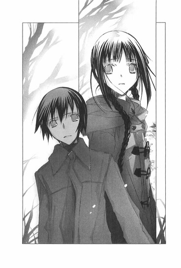

| [野村美月] 文学少女シリーズ08 | |
| 野村美月 | |
| (2015) | |
|
〝文学少女〟と神に臨む作家 下
野村美月
|
底本データ
一頁17行 一行39文字 段組１段
太字は底本ではゴシック体太字。
「◎」は底本では蛇の目、1-3-27。
「 ◇ ◇ ◇」は底本では１２字下げて「◇ ◇ ◇」。
山括弧は底本では二重山括弧。
「書かなくてもいい。ずっと側にいる」──そう告げるななせに救われた心葉。だが、そんな彼を流人の言葉が脅かす。「琴吹さんのこと、壊しちゃうかもしれませんよ」......そんな時、突然、遠子が姿を消した。空っぽの家に残るのは切り裂かれた制服だけ。心葉は遠子を追えるのか？露になってゆく真実に、彼が出す答えとは？遠子の祈り、叶子の憎しみ、流人の絶望──その果てに秘められた物語が今、明らかになる......！
〝文学少女〟の物語、堂々終幕!!
目次
プロローグ 自己紹介代わりの回想──彼女が、最後につぶやいたこと──
一章 きみが揺らす、ぼくの殺意──
二章 毒をたらす手──
三章 秘められた言葉──
四章 足音を立てずに、消えてゆく背中──
五章 楽園の苦悩──
六章 世界が終わるとき──
七章 最愛の人へ──
八章 神に臨む作家──
エピローグ 文学少女──
〝文学少女〟と神に臨む作家下
野村美月
カナちゃん、わたしは書きたい物語があるの。
それは、荒野を彷徨う民の上に降り注ぐ天の糧のように、白く清らかな、甘いお話で、どんな空っぽのおなかも、たちまちいっぱいにしてしまうのよ。
約束の地に辿り着くまで、神様はマナを降らせ、民に希望を与え、変わらない愛を示し続けるの。
ねぇ、カナちゃん、いつかそんな優しい幸せなお話が、書けたらいいのにね。
そうしたら、カナちゃん。
わたしは告白すべきことをすべて告白し、カナちゃんに許しを乞い、勇気を持って、あの狭き門をくぐることができるでしょうか。
プロローグ ◎ 自己紹介代わりの回想──彼女が、最後につぶやいたこと
さようなら、これほどまでに好きなあなた。
最愛の人に、そんな言葉で別れを告げた女性がいた。
愛しているならば、何故一緒にいてはいけなかったのか？
握りしめた手を、あんな風に優しく振りほどかなければならなかったのか？
絶望の眼差しで見つめる彼に背中を向けて、何故一人きりで狭い門へ進んで行ったのか。
広々とした明るい道を、二人で手を握りあって、並んで歩けなかったのか。
十七歳のぼくにとって、彼女の言葉も行動も理不尽に思えて、ただただ哀しくて、納得できなかった。
さようなら。
同じ頃、ぼくを導いてくれたあの人も、清らかな白い花びらの中、澄んだ瞳でぼくを見つめてささやいた。
さようなら。
疼く胸の内によみがえるのは、夕暮れのやわらかな金色の光に溶けてゆく、あたたかな微笑み。
細い肩、華奢な手足、儚く揺れる長い三つ編み。
振り返らない後ろ姿。
耳の奥に繰り返し響く、切ないほどに優しい声。
さようなら。
あなたはわたしの、なにより大切な人でした。
一章 ◎ きみが揺らす、ぼくの殺意
「はい、これ約束の」
桃色の手毬のストラップを、ゆっくり手のひらに落とすと、琴吹さんは嬉しそうに頬をほころばせた。
「あ、ありがとう」
「遅くなってゴメン」
ちょっぴり決まり悪げに謝ると、髪が跳ねるほどの勢いで首を横に振る。
「ううん！ すごく可愛い」
小さく微笑んでぎゅっと握りしめたあと、またそぉっと開いて、指でつまんで、顔の前にかざした。そのままとろけそうな顔で、いつまでも眺めている。
朝の教室は、おだやかな空気に満ちていた。窓から透明な光が射し込み、琴吹さんの顔を、明るく輝かせている。
そろそろ教室に人が増えはじめる頃だけど、琴吹さんは気づいていないみたいだ。目の下をほんのり赤くして、ぼくを見上げる。
「ね......このストラップ、ずっと井上が持ってたの？」
「うん、夏休みの旅行土産だったんだけど、渡しそびれてたんだ。琴吹さんの暑中見舞いと同じだよ」
そう言うと、少しだけ唇を尖らせた。
「だって、あたし......井上にヤなやつって思われて、嫌われてたし」
「そんなことないよ。どっちかっていったら、琴吹さんのほうがぼくを嫌っているように見えたよ。だから、お土産を渡しても迷惑かと思ってた」
「ち、違うよっ！ 井上のこと嫌いだなんて──ただその、き、緊張して怖い顔になっちゃって──話そうと思っても、うまく話せなくて──嫌いだなんてそんな──だってあたし、ずっと井上のこと──」
慌てて否定するのが可愛くて、胸の奥がくすぐったくなる。ぼくは幸福な気持ちで、笑いかけた。
「うん、今はちゃんと、わかってるよ」
すると琴吹さんも、おだやかな表情になり、恥ずかしそうにうつむいた。
「よかった」
両手で包むように、ストラップを握りしめる。
「このストラップ、井上があたしのために、選んでくれたんだよね」
「うん」
「選ぶとき、あたしのこと、考えててくれた？」
「うん、琴吹さんに似合いそうな色だなって」
琴吹さんが、ますます恥ずかしそうに口元をゆるめ、小さな声で「ピンク......好きなの」とつぶやく。
それから、頬を赤くしたまま言った。
「でも、どうして、あたしにお土産を買おうと思ったの？あたし、あの頃感じ悪かったのに」
期待のこもる眼差しで、そっとぼくを見上げる。
ぼくは声をつまらせた。
ほのぼのした甘い感情に、急に苦いものが混じる。
──遠子先輩が、みんなにお土産を買いましょうって言ったから。
日々のおつきあいは、ささやかなことの積み重ねが大切なのよって、弟を心配する姉のような口調で、優しく笑いながら。
胸の奥が擦れるような気持ちで、ぼくは口を開いた。
「琴吹さんのお見舞いに行ったとき、ぼく、いきなりわめいて帰っちゃったから。その、お詫びのつもりで......」
琴吹さんががっかりするのを見て、慌てて付け足す。
「そ、それに、これがきっかけで、琴吹さんと仲良くなれたらいいなと思ったんだ」
とたんに目に甘い光が浮かぶ。琴吹さんは照れくさそうに、横を向いた。
「べ、別に......っ、嘘つかなくていいよ。井上が、あたしにお土産買ってくれて、それを今まで持っててくれただけで、嬉しいもの」
嘘、という言葉に、ズキッとする。
けど──。
「一生、大事にするね」
琴吹さんが顔をあげて笑ってくれたとたん、こわばった心が、再びやわらかなもので満たされた。
裏切りも企みもない、ただひたむきに、ぼくだけを見つめてくれる、まっすぐで純な瞳──。
この瞳に、ぼくは救われた。
昨日、流人くんの家から、どん底で帰宅したぼくを、泣きながら抱きしめて支えてくれたのは、琴吹さんだった。
もう、書かなくてもいいんだよ。
書かなくても、あたしは井上の側にいるよ。
涙をぽたぽたこぼしながら、そう言ってくれたことが、どれだけ嬉しかったか。
これまで琴吹さんに対して、美羽のように激しい想いを抱くことはないと思っていた。
だけど、琴吹さんといると、勇気が湧いてくる。不器用な優しさや、ぶっきらぼうで一生懸命な言葉を、心から愛しいと感じる。
まるで、ぼくが望む、平和でおだやかな日常そのもののような。
琴吹さんと一緒なら、強くなれる。
だから、迷わない。ぼくは、作家にならなくてもいいんだ。
明るい太陽の下、みんなが行く広々とした道を、井上心葉のまま琴吹さんと笑いながら、支え合いながら、ゆっくり歩いてゆければ、それ以上の幸せなんて、きっとない。
「今日は、一緒に帰れる？」
「うん」
うなずいて、恥ずかしそうに視線をそらし、
「あ、森ちゃんたちが来たから、もう行くね」
小さく手を振って、ちらちらこちらを見ながら離れてゆくのが、可愛かった。
「だいぶ落ち着いたみたいだな」
振り向くと、芥川くんが目をなごませていた。
「学校を休んだから、心配していたんだが」
「ゴメン、いろいろ気を遣ってもらって。美羽を連れてきてくれたことも......ありがとう」
「いや、オレはただの付き添いだ。井上に会いに行ったのは、朝倉の意志だ」
大人びた口元に、おだやかな笑みがにじむ。
きっと、美羽にも、芥川くんにも、ぼくは助けられていたんだな......。
喫茶店で別れたときは、どうしていいのかわからなくて、心細くて断ち切れそうだった。だけど今日は、まっすぐに芥川くんに気持ちを伝えることができる。
「ううん、立ち止まって考えろって言ってくれたこと、嬉しかったよ。おかげで、やっと答えを見つけられた」
明るい声で、ぼくは告げた。
「ぼくは、やっぱり作家にはならない。もう、小説も書かないよ」
ぼくの浮かれようとは逆に、芥川くんが笑みを消し、ほんの少し不安げな顔になる。
「そうか......。井上が決めたことなら、オレが言うべきことはない。だが、櫻井のほうは、大丈夫なのか？」
とたんに、首筋に冷たいものを押し当てられたように、全身が粟立った。
流人くん！
凶暴な野良犬みたいな目が、真っ赤な鮮血とともに頭の中一杯に広がり、携帯越しにささやく声が、耳元でよみがえる。
──琴吹さん、邪魔っすね。
苛立ちのこもった、低い声。
──別れないと、オレなにするかわかりませんよ。琴吹さんのこと、めちゃくちゃにして、壊しちゃうかもしれませんよ。
一言、一言、噛んで含めるように、ねっとりと冷たく、ぼくに告げた。
あのあとすぐ、流人くんの携帯に電話を入れた。だけど、何度呼んでも、留守電になってしまって、流人くんは出なかった。
もし本当に、琴吹さんの身になにかあったら──。心配で胃が捻じ切れそうで、琴吹さんの携帯に電話をかけた。
──井上？ どうしたの？
びっくりしている声を聞いたとたん、安堵して床にへたり込んでしまった。
──やっぱり、心配で。
──やだ、まだ早いから平気だよ。
──家まで、あとどれくらい？
──えっと、三十分くらいかな。
──じゃあ、それまで話そう。
──え？ ええっ。
──それと、明日一緒に学校へ行こう。
──ちょ、ちょっと──そんな急に──井上、なにかあったの？
琴吹さんはあたふたして、心配そうな声で尋ねた。
──琴吹さんと一緒にいたいんだ。
不安のあまり強い口調で言うと、一、二秒、絶句し、
──う......うん。井上がそうしたいなら、いいよ。
恥ずかしそうに、ぶっきらぼうにつぶやく。
琴吹さんが自宅に辿り着くまで、ぼくは暗い影に追い立てられるように、夢中で話し続けた。
通話を切ったあと、手が冷たくこわばり、全身が汗でびっしょりだった。
それからも、繰り返し流人くんの携帯に電話をしたけれどやっぱり繋がらなくて、留守電に切り替わるたびに、心臓が跳ね上がり、背筋が震えた。
ベッドに横になっても、嫌な想像ばかり浮かんで、何度も琴吹さんに電話をして安全を確かめたいという衝動にかられた。
ようやく朝を迎えても、ゆっくり朝食を味わうどころじゃなくて、約束の場所に三十分も早く到着してしまったほどだ。
白い息を吐き、足踏みをしながら待ち続け、朝靄の向こうから、白いマフラーを巻いた琴吹さんが現れたときは鼻の奥がツンとし、泣きそうだった。
──井上......。
はにかみながら、ぼくに呼びかける琴吹さんは、林檎のように赤い頬をしていて、目を生き生きと輝かせて、とっても幸福そうだった。
その顔を見たとたん、肩に覆い被さっていた重い石が、すーっと溶けて消えてゆくような気がした。
ああ、よかった。
琴吹さんが来てくれて、よかった。
あんなに不安だったのが、琴吹さんが隣を歩いているだけで、気持ちが楽になって、心も強くなってゆくようだった。
そうやって、ぼくらは登校した。
琴吹さんがくれた勇気は、まだ心に残っていて、しっかりとぼくを支えている。
流人くんが、ただの脅しであんなことを言ったとは思えない。
あのときの流人くんの声や、狂気をはらんだ眼差しを思い出すと、今も体がすくむ。不安がナイフのように胸を撫でてゆく。
琴吹さんを守らなきゃ。
「芥川くん、頼みがあるんだ」
ぼくは、流人くんが琴吹さんに、なにかするかもしれないと打ちあけた。
芥川くんの顔が、みるみる険しくなる。
「流人くんと話をつけるまで、なるべく琴吹さんと一緒にいるつもりだけど、芥川くんも琴吹さんのことを、気をつけてあげてくれないかな」
「わかった」
「ありがとう。この前から頼ってばかりで、申し訳ないけれど」
「いいや、頼るのが遅いくらいだ。井上は一人でなんでも抱え込みすぎる。オレは察しのいいほうではないから、早めに言ってもらわなければ困る」
真顔で言われて、嬉しい反面、戸惑った。
「......芥川くん、なんでも一人で抱え込むって、それぼくよりきみのほうだと思うけど」
「そんなつもりはないんだが......」
芥川くんが眉根を寄せる。ぼくは、あたたかな気持ちで微笑んだ。
「お言葉に甘えさせてもらうよ。きみも困ったことがあったら、ちゃんと言ってよね。ぼくも、そんなに察しがよくないから」
そう言うと、芥川くんの顔もやわらいだ。
「ああ」
チャイムが鳴り、みんな慌ただしく自分の席に戻ってゆく。ぼくも歩き出す。
「井上」
「なに？」
足を止めて振り返ると、ためらうような目をしたあと、芥川くんが尋ねた。
「......天野先輩とは、きちんと話せたのか？」
「！」
胸を、ぎゅっとつかまれる。
芥川くんは辛そうに、ぼくを見ている。それはそのまま、ぼくの顔を映しているように思えた。
「井上が書かない道を選んだのも、櫻井とやりあう覚悟でいるのもいい。だが、そのせいで天野先輩と、ますますこじれてしまうのではないか？」
「......」
言葉が喉で止まって、息が苦しくなって、返事ができない。芥川くんの目をまともに見ることができない。
先生が来て、ぼくらは視線をそらしあうようにして、席に着いた。
──天野先輩とは、きちんと話せたのか？
喉が塞がるような息苦しさは、授業中も続いていた。芥川くんの言葉が頭にこびりついている。
遠子先輩との関係に、ぼくはまだ決着をつけていない。
遠子先輩が、ぼくに望んでいたこと。
亡くなったお母さんが書くはずだった小説を、ぼくが書き上げること。
けど、それは不可能だ。
ぼくは遠子先輩のお母さんじゃないし、遠子先輩の望む小説も書けない。
この数日で、遠子先輩のことをたくさん知らされた。お父さんが編集者だったこと。お母さんが作家志望だったこと。二人とも車の事故で亡くなったこと。流人くんのお母さんの叶子さんと、天野夫妻の関係。友人の忘れ形見の遠子先輩に、叶子さんがどう接しているか。
遠子先輩が、叶子さんの家で、どんな風に過ごしてきたか......。
──おばさんは無愛想に見えるけど、本当は優しい人なのよ。
──わたしをこのおうちに、住ませてくれたの。本当にいい人よ。
──お帰りなさい！ おばさん！
病み上がりの熱っぽい体で、嬉しくてたまらないというように、叶子さんを出迎えた遠子先輩。
一瞥すら与えず、無言のまま遠子先輩の傍らを通り過ぎていった、作家櫻井叶子。
あのとき、なにもできなかった。
体中の血が沸騰するほど怒りが込み上げて、胸が張り裂けそうに痛くて──叫びたい気持ちで一杯だったのに、一言も声を発することができなかった。
遠子先輩のために、なにもしてあげられなかった。
──いつも......ああなんすよ、あの二人。遠子姉が話しかけて、叶子さんが無視する......。遠子姉がうちに来たときから......ずぅっとそうだった。
存在しているのに存在していないように扱われて、笑っているなんて、おかしいと、言えなかった。体が震えるほど腹が立って──なのに言えなかった。叶子さんにも、何故遠子先輩を無視するのかと──同じ家で何年も暮らしてきたのにあんまりじゃないかと、言えなかった。
あの狭い空間で、遠子先輩と叶子さんは二人きりの世界を作っていて、まるで本に印刷された文字を読むように、ぼくはその中に入れずにいた。
──夢を見せたのはあなたなのに、逃げるんすか？
──書いてください、心葉さん。
ぼくが書けば、なにかが変わると、流人くんは言っていた。ぼくは、遠子先輩の作家だと。
その願いに、ぼくは応えることができない。
たとえ遠子先輩が、この二年間、それを望んでぼくの側にいて、ぼくが泣き出すたびに手を握りしめ、立たせてくれたのだとしても。
ぼくが、幾度も躓きながらここまで歩いてこられたのは、遠子先輩のおかげだ。
けれどぼくは、遠子先輩の願いを叶えることができない。
作家になることも、小説を書くこともできない！恩知らずでも勝手でも、それだけはできない！
できないんだっ！
頭を叩きつけるような痛みに、気が変になりそうだった。遠子先輩はぼくを裏切った。
けれど、ぼくも遠子先輩を裏切ったのだ。いつもいつも、ぼくに数えきれないほどの優しさとぬくもりをくれた、遠子先輩を──。
ぼくがあまり暗い顔をしていたせいだろう。休み時間に芥川くんが、謝ってくれた。
「すまなかった。井上を苦しめるつもりはなかったんだが......」
「いいんだ。遠子先輩のことは......もう」
もう──なんだっていうんだろう。
もう、会うことはないから？
いつか思い出になって、遠ざかってしまうから？
忘れることができるのなら、それでいい。けど、こんなにあざやかに、目に、耳に、皮膚に、遠子先輩の記憶が残っているのに、忘れることなんてできるのか？胸がこんなに疼いてたまらないのに。
芥川くんが、ぼくの肩に静かに手を置く。
「そんなに辛そうな顔をするくらいなら、天野先輩に会ってきたらどうだ。井上にとって天野先輩は、大事な人だったんじゃないのか？天野先輩は、いつも井上を気にかけていた。井上のことを大切にしていた。
こんなこと、オレが言うべきではないかもしれない......。だが、井上のことを一番わかっているのは、天野先輩だったんじゃないかと、オレは今も思っている」
芥川くんのまっすぐな眼差しが、目の前にある。喉を締めつける痛みをこらえながら、ぼくは泣きそうな気持ちでつぶやいた。
「そうだね......そうかもしれない」
ぼくを一番わかってくれたひと。
なのに、ぼくに小説を書けと言った。井上ミウに戻れと言った。
ぼくがそのことをどれほど嫌悪していたか、知っていたはずなのに。それでも、言わずにいられないほど、願っていたのだろうか。
お母さんが書くはずだったマナのような小説を──天から降る白く甘い──神の糧のように聖らかな物語を、読むことを。
それで、空っぽのおなかを満たしたいと。
「情けないけど......ぼくが遠子先輩にしてあげられることは、ないんだ。遠子先輩に必要なのは、作家としてのぼくだから。ただの高校生のぼくじゃ、遠子先輩を......助けてあげられないんだ」
胸が擦れる。
芥川くんはもどかしそうに、ぼくを見ていた。
後ろで琴吹さんが、
「井上」
と呼びかける。
恥ずかしそうな小さな声に、暗かった気持ちがなごんで、ぼくは「じゃあ」と微笑み、琴吹さんのほうへ歩いていった。
そうやって、数日が過ぎた。
琴吹さんとは、朝と放課後待ち合わせて、登下校している。家に帰ってからも携帯で話したりメールをしたり、また携帯で電話をして、切ったあとメールを打って、最後に携帯で『おやすみ』と言い合ったり......離れていても近くにいるみたいに過ごしていた。
流人くんがどこでなにを仕掛けてくるのか、ずっと神経を尖らせていたけれど、拍子抜けするほど平和な日が続いている。
廊下で竹田さんに会ったとき、
「流人くんは、どうしてる？」
と尋ねると、
「元気ですよ。昨日も、ハルミさんのお店で盛り上がりました～」
と、明るい顔で言われた。
ハルミさんのお店というのは、イブにパーティーをした店だ。流人くんの行きつけで、ハルミさんという綺麗なウェイトレスさんがいる。
「女の子が四人もはちあわせちゃって、つかみあいの大乱闘です。流くんは、引っぱたかれた上に、氷の入ったコーラをぶっかけられてました」
ごく普通の世間話をするように、無邪気な笑顔で語る。
「それ......竹田さんも、参加したの？」
「いいえ、新作のジンジャーケーキと紅茶をいただきながら、見学してました」
「......そう。なにか他に変わったことはなかった？」
「えっと......そうですね。流くん、何度も電話をかけてました。相手が出ないみたいで、少し苛々してたかな」
「電話......？ 誰に？」
「さぁ」
含みのある顔で、にこっとする。
「ななせ先輩のこと心配してるんですか？ 流くんがまた意地悪するんじゃないかって」
「うん。琴吹さんのこと、守ってあげたいんだ」
そう言うと、竹田さんは急に真面目な顔になった。
「心葉先輩、ななせ先輩に対して、ちょっと変わりましたね」
「えっ、そ、そんな風に見える？」
「はい。ななせ先輩のこと、前より大事にしてる感じがします。ななせ先輩も、心葉先輩といるとき、肩の力が抜けてきたみたいです」
「ぼく、前はそんなに琴吹さんに失礼だった？」
「うーん、ななせ先輩はばりばりに意識してるのに、心葉先輩だけ涼しげ～で、お気の毒様って感じですか」
「う......」
そうだったんだ。
竹田さんが、またにっこりする。
「うまくいってるみたいで、よかったです。それじゃあ」
手を振って去ってゆくのを、複雑な心境で見送った。
流人くんが電話をしていた相手が気になる。苛々しているみたいだったって......。遊び相手の女の子ならいいのだけど......。
日々がおだやかに流れてゆく反面、胸にたちこめる黒い雲が晴れずにいる。きっと流人くんはまだ諦めていない。今の彼は、目的を叶えるためなら、どんなひどいこともしそうで怖かった。
麻貴先輩に声をかけられたのは、昼休みだった。
「久しぶりね、心葉くん」
購買部で昼食のパンを選んでいたぼくは、驚いて振り返った。
のどかな田園に咲き誇る鮮やかな薔薇か、食虫花──そんな風情で、色っぽく微笑んでいる。艶やかな茶色の髪が、豊かな胸の上に、波のようにこぼれていた。
麻貴先輩と会うのはいつも、音楽ホールのアトリエだったので、昼時の購買部の前というシチュエーションは、あまりにもミスマッチで、茫然とした。
麻貴先輩は、なんでもお見通しという顔で尋ねた。
「あたしに会いに来てくれたって聞いたけど。ひょっとして、遠子のこと？」
ぼくがびくっとすると、「やっぱりね」と目を細め、
「ここじゃ落ち着かないから、アトリエへ行きましょう」
ぼくがついてくるのが当然といった尊大な様子で、歩き出した。
アトリエに着くと、高見沢さんがお茶とサンドイッチを用意してくれた。
「で？ なにが訊きたい？」
ぼくは、息苦しさを覚えながら口を開いた。
「麻貴先輩は、どこまで知ってるんですか？」
「調べられることは、大抵」
こともなげに答える。
「遠子先輩のご両親のことは？」
「事故で亡くなっているのだったわね。遠子が八歳のときに」
「じゃあ、流人くんのお母さんのことは？」
「作家の櫻井叶子でしょう。彼女は有名よね。いろいろと」
口の中が渇いて、ひりひりしている。ぼくは掠れた声で、一番知りたかったことを尋ねた。
「叶子さんは、小説に書いたとおり、遠子先輩のご両親に毒を盛って殺したんでしょうか」
口にしたとたん、みぞおちが、ずしんと重くなり、指先が氷みたいに冷たくなった。
麻貴先輩が、妖艶な笑みを浮かべる。
「警察の調査では、櫻井叶子が天野夫妻を殺害したという証拠は、見つかっていないわ。事故の状況は不自然で、運転中にトラブルがあったことは想定できるけど......。
あの日、夫妻は結婚式に出席するため、遠子を叶子の家へ預けたの。自宅のマンションで家族で朝食をとったあと、前日から泊まっていた叶子の息子の流人と遠子を連れて、櫻井家へ寄ってから、夫の文陽の運転する車で式場へ向かったわ。
もし叶子が毒を盛るとしたら、そのときだけど......」
麻貴先輩が、もったいつけるように言葉を切る。ぼくは息をつめた。
「叶子はその時間、家にいなかったの。対応をしたのは留守番のハウスキーパーだった。だから、なんらかのトリックでも使わないかぎり、叶子に毒を盛ることは不可能よ」
冷たい汗が、服の下をこぼれ落ちてゆく。
叶子さんは、毒を盛っていない。
なのに何故叶子さんは、自分が殺したと告白するような小説を書いたんだ。
遠子先輩を、〝存在しない子供〟にしたんだ。
はじめから無視するために、引き取ったのか？
遠子先輩の部屋で読んだ、叶子さんの手紙の内容を思い出し、体がぶるっと震える。
──あなたは、わたしが死ねばいいと思っているのでしょう。
親友のはずだった結衣さんに向かって書かれた、あの手紙。
結衣さんは、毒を所持していて、それで夫の文陽さんや叶子さんを殺害しようとしていると、叶子さんは糾弾していた。
──彼を殺したあと、わたしも殺すの？ わたしの食事に毒を点すの？
毒の隠し場所も叶子さんは知っている、開けてみたら、確かにそこに毒はあったと。
手紙を読んだときに生まれた恐怖や疑惑が、打ち消しても打ち消しても、よみがえってきて、胸に食いつく。
毒を盛ったのは、結衣さんだったんじゃないか？
結衣さんは、文陽さんと無理心中をしたんじゃ──。
流人くんも言っていた。
結衣姉さんに、毒を渡したと。
体の芯まで凍りつきそうなあの夜、怪しい月明かりに照らされて、底光りのする目でぼくを見据えながら、自分は亡くなった父、須和拓海の生まれ変わりだと、告白した。
すみれ色のハートの小壜に入った毒を、結衣姉さんの手に握らせたのだと。結衣姉さんは、ありがとうと言って、嬉しそうに笑ったのだと。そうして、それを使ったのだと。
──だって、愛する人を永遠に自分のものにするためには、自分か相手を殺すしかないじゃないすか。
狂気をはらんだ甘く低い声を思い出し、鳥肌が立った。
生まれ変わりなんて、ありえない！ 本気で言っているのだとしたら、流人くんはもう狂っている。なのに、その言葉には、否定しきれない奇妙な符号があった。
──書いてください、心葉さん。オレが遠子姉に、オーレ＝ルゲイエのすみれ色の小壜を渡す前に。
同じ言葉を、叶子さんの手紙でも目にした。
──あなたの書く話なんて、オーレ＝ルゲイエが、絵のついた傘を広げて子供たちに見せる夢と同じ。実体がなく曖昧で、印象に残らず、朝がくれば、たちまち消えてしまう。
オーレ＝ルゲイエは、アンデルセンの童話に出てくる眠りの精のオーレおじさんだ。この名前の一致は、偶然なのか？それとも──。
「ねぇ、具合が悪いみたいだけど」
気がつくと、手のひらにびっしりと汗をかいていた。顔もきっと病人のように青ざめているのだろう。
小さく息を吐いて呼吸を整え、硬い声で「平気です......」とつぶやく。
麻貴先輩は心配する様子はまったくなく、むしろ楽しんで観察しているようだった。
弱味を見せても、この人は同情なんかしない。逆に、見下げはてるだけだ。
「なんとも、ありません」
「そう？」
口元が、意地悪くほころぶ。
「麻貴先輩こそ、体調が悪くて家で休んでいるって聞きましたけど。もういいんですか」
麻貴先輩は微笑んだまま、答えた。
「別に病気というわけじゃないから」
それから、機嫌が良さそうにテーブルに肘をつき、そこに顎をのせて、ぼくの顔をのぞき込んだ。
「他に訊きたいことはないの？ 今日は特別よ。茶飲み話に代償ナシで話してあげる」
「流人くんのお父さんの、須和拓海って......どういう人だったんですか」
「ふふん、それなら、最適のサンプルがあるわ」
麻貴先輩が皮肉っぽく目を光らせる。
「拓海の写真を見たけど、不気味なほど流人に似ているわ。親子だから当然だけど、それにしても、まるで拓海本人が墓から這い出してきたみたいにそっくりよ。
性格も、父親から受け継いだみたいね。未成年のくせに、キャバクラや風俗のスカウトマンをしていて、だらしがなくて、いい加減で、あちこちの女の家を渡り歩いて生活していたらしいわ。女がらみの修羅場がたえなくて、なのに本人は、反省の色もなくけろっとしているなんて、あたしたちの知ってる櫻井流人そのものじゃない。父子そろって、ろくでなしね」
流人くんを嫌っている麻貴先輩は、容赦がない。
ぼくは、不気味なほど似ているという言葉に、胸が抉られる思いを味わっていた。
──オレは、須和拓海の生まれ変わりだから。
ありえないはずなのに、頭の中で須和拓海のイメージが、どんどん流人くんに重なり、流人くん本人になってゆく。不気味に口元をゆがめ、光る目でぼくを見ている。
「拓海さんも、事故で亡くなったと聞いてますけど」
麻貴先輩が肩をすくめる。
「猫を助けるために車道に飛び出したのよ。猫は無事だったけど、本人は救急車で病院に運び込まれて、手術中に亡くなったわ」
「猫を......？」
「嘘みたいな死に方でしょ。猫を庇って車に突っ込むなんて。本当に考えナシな男だったのね。葬式の会場は女だらけで、今でも語りぐさになってるそうよ」
あほらしそうに顔をしかめ、紅茶を飲む。
「......叶子さんは、拓海さんの葬儀に参列したんでしょうか？」
麻貴先輩はカップを置き、あっさり答えた。
「行かなかったみたいね。仕事場で原稿を書いてたんですって。遠子の母親は参列したそうだけど」
流人くんのすさんだ目がちらつき、また胸がざわめく。
「叶子さんは、拓海さんのことをどう思っていたんでしょう？流人くんを生んだくらいだから、愛情はあったはずなのに、葬儀の間も仕事をしていたなんて。事故に遭ったときも、叶子さんは病院に来なかったって、流人くんが......」
麻貴先輩が、ばかにしているような、同情しているような目で、ぼくを見た。
「おたくは、子供ね」
息をつまらせるぼくに、冷たい声で告げる。
「愛していなくても、子供を生める女もいるわ」
とっさに言葉が出なかった。
麻貴先輩に責められているようで──。空気が、急にひんやりして。
やっとのことで、声を絞り出す。
「じゃあ、どんな理由で生んだんですか」
ぼくを見据えたまま、麻貴先輩は答えた。
「たとえば──復讐、とか」
過激な言葉が、胸に突き刺さる。
復讐？
一体誰に？ 結衣さんに？ 文陽さんに？
「叶子は、担当編集者だった天野文陽と不倫しているという噂があったし、愛情のもつれから、あてつけで他の男とつきあって妊娠することも、その子を生むことも、じゅうぶん考えられるわ」
そんな──。
愛してもいない相手の子供を、あてつけで生むなんて。
「今のは、あたしの想像よ。事実じゃなくて、そういうこともありえたかもしれないということ」
心葉くんには刺激が強すぎたかしら？ とからかわれて、頬がさっと熱くなった。
麻貴先輩は平然とした顔で「携帯を貸して」と言って、ぼくの携帯に、自分の番号を登録した。
「なにかあったら、かけるといいわ。次は相談料をとるかもしれないけど」
「......もうひとつだけ、訊いてもいいですか」
「ええ、どうぞ」
「遠子先輩のご両親が、本当に毒を盛られたとして、その毒を用意したのが、拓海さんだったということは、ありえるでしょうか？」
麻貴先輩は携帯を返し、粘り着くような口調で答えた。
「むしろ、そう考えるのが自然でしょうね。拓海は、怪しい場所にも出入りしていたから、毒を手に入れることもできたはずよ。案外、それが目当てで、叶子は拓海とつきあったのかもしれないわね」
胃がむかむかして、気持ちが悪い。
麻貴先輩にお礼を言ってホールを出て、廊下を歩きながら、頭の中にいろんな映像や言葉が、渦巻いている。
やっぱり毒は、須和拓海が用意したのか？ 彼はそれを、叶子さんではなく、結衣さんに渡したのか？
いや、それは全部流人くんが言ったことだ。事実じゃなく、ただの妄想だ。引きずられるな。生まれ変わりなんて、バカげてる！
──わかるんすよ。
──オレには前世の記憶があります。
──あのときみたいに、誰かが消えなきゃ、もうおさまらない。
ぼくは頭を強く振った。
遠子先輩のことは、もう忘れるはずじゃなかったのか。
毒は本当に存在していたのか？ 誰が毒を盛ったのか、そんなことぼくには関係ない。
遠子先輩のご両親は、九年も前に亡くなった。今さら、犯人捜しをしたところで仕方がない。ましてや、結衣さんが毒を盛ったかもしれないなんて──。
チャイムが鳴るぎりぎりに教室に戻ると、芥川くんが近づいてきた。
「琴吹と一緒じゃなかったのか？」
「え」
「琴吹に、井上は売店へ行ったと教えたら、教室から出ていったが」
「琴吹さんが？ ううん、会ってないよ」
「そうか......二人とも戻ってこないから、てっきり一緒にいるのかと思っていたんだが......」
芥川くんの目が曇る。ぼくの胸もひやりとし、締めつけられるように痛くなった。
琴吹さん、まだぼくを捜しているんだろうか。
寒気が背筋を這いのぼる。ポケットから携帯を出して着信を確かめる。件数は〇だ。
チャイムが鳴り、みんなが席に着く。
琴吹さんはまだ戻らない。
琴吹さんと仲良しの森さんが、心配そうにちらちら廊下のほうを見ている。
芥川くんも、険しい表情をしている。
ぼくは、琴吹さんの携帯に電話をかけた。電源が切ってあるか電波が届かない場所にあるので、かかりませんというメッセージが流れる。
ぼくは夢中でメールを打った。
『どうしたの？ 授業がはじまっちゃうよ？ どこにいるの？』
鼓動が高まり、こめかみがズキズキと痛み出す。どうして、琴吹さんは戻って来ないんだ？
不安で、胸の中が真っ黒に染まってゆく。早く、早く、戻ってきて、琴吹さん。
先生が教室に入ってくる。
琴吹さんは、まだ来ない。
そのとき、手に握りしめていた携帯が、一瞬震えた。
着信。
メールだ！
けれど、送り主は琴吹さんではなく、竹田さんだった。
件名は、『ななせ』──。
体がびくっと震えた。机の下でもどかしくメールを開け、内容を確かめる。
『としょしつ』
平仮名だけの短いメッセージが目に飛び込んでくるなり、立ち上がっていた。
周りの席の人たちが、驚いてぼくを振り仰ぐ。先生も目を丸くしている。
「すみません！ 保健室へ行ってきます！」
暴漢に出くわしたような声で叫び、ぼくは教室を飛び出した。
間違いない！ 琴吹さんの身になにかあったんだ！
まさか平日の昼間の学校では手出しできないと思って、油断した！
──琴吹さん、邪魔っすね。
苛立ちを含んだ眼差しと、刃物のように冷え冷えとした声が、胸を幾度も突き刺し、抉る。
──オレなにするかわかりませんよ。
携帯越しに、絡みつくような低い声でささやいた流人くん。
あのときの流人くんは、普通じゃなかった！
わかっていたのに。
流人くんは、簡単に諦めっこないって。あの言葉は、脅しじゃなく本気だって。
わかっていたのに！ どうして、琴吹さんから目を離したりしたんだ！
自分の失態を頭が割れそうなほど責めながら、必死に廊下を走り、階段を駆けおりる。
息が苦しくて喉が裂けそうだ。汗が目に入り、足がもつれて転びそうになるのを、踏ん張って堪える。
周りの景色が、ぐにゃぐにゃとゆがんでいる。
どうか──どうか、間に合ってくれっ！
図書室のドアにはクローズの札がかかっていた。向こうは静まり返っていて、ぼくの吐く荒い息だけが、耳にまとわりついている。ぼくはノブを回して中に入った。
ハァハァと肩で息をしながら、見渡す。
カウンターも、閲覧室も、空っぽだ。
エアコンも切ってあり、冷え冷えとしている。
そんな部屋にただ一人、テーブルの椅子に腰かけて、本を読む生徒がいた。
感情の抜け落ちたさめた目で文字を見おろし、音も立てずに静かにページをめくっている。まるで、大きな機械人形がそこにいるように──。
「竹田さんっ」
呼びかけると、空っぽの目のままぼくを見上げて、その顔を、地下室のある部屋のほうへわずかに向ける。
ぼくは夢中でそちらへ駆け出し、地下へ続くドアを開け、螺旋状の階段を、目眩がするほどの速さで降りていった。
ずっしりと重たい鉄のドアを引っ張ると、黄ばんだ本が発する甘い匂いと、鋭い冷気が頬や額に突き刺さった。
小さなスタンドの明かりが、部屋を不気味に照らす。薄暗い〝本の墓場〟のわずかなスペースで、二つの影が重なりあっている。
下の影が、上の影を必死に押し戻そうと、足の先をばたつかせる。
流人くんと琴吹さんだった。
床に仰向けに倒れた琴吹さんの上に、流人くんが覆い被さっているのを見て、首筋から耳、頭の芯まで、カァ──ッと熱くなった。
殺意を感じるほどの怒りを、他人に対して覚えたのははじめてだった。目の裏まで真っ赤に染まり、心臓が荒れ狂い、理性が吹き飛び感情の塊になって、ぼくは突進した。
「よせっ！ やめろっ！」
振り向いた流人くんの顔を殴りつけ、両手で襟首をつかんで、突き飛ばす。本の塚が崩れ、流人くんの肩にあたって床に落ちる。スタンドの薄明かりの中に、埃が舞い上がった。
「い、井上......っ！」
琴吹さんが涙声でぼくの名前を呼び、震えながらしがみついてきた。髪も制服もぐちゃぐちゃで、胸もとのリボンがほどけている。
「ゴメン、琴吹さん、ゴメンね」
ぼくは琴吹さんを抱きしめ、繰り返しつぶやいた。
琴吹さんの震えは、おさまらない。よほど怖かったのだろう、ぼくの制服を強くつかんで、胸に顔を押し当てて、「井上......っ、井上......っ」と嗚咽する。綺麗な茶色の髪に、白い埃がついている。
ぼくは奥歯を噛みしめて、鋭い目で流人くんを睨んだ。
流人くんは床に尻餅をついて、こちらを見上げている。
その目が不満そうにぎらつき、唇がムッとしたようにゆがんでいるのを見て、ますます頭に血がのぼった。
「二度と琴吹さんに手を出すなっっっ！ きみがやってることは、犯罪だ！もう、ぼくにかまわないでくれ！きみがなにをしたって、ぼくは小説は書かない！井上ミウには戻らないっ！今度琴吹さんになにかしたら、きみを殺すかもしれない。それくらい、腹が立っているんだ！」
流人くんが、棘だらけの耳障りな声でつぶやく。
「心葉さんの口から、『殺す』なんて言葉を聞くなんてね......。そんなに彼女のこと、大事すか？けど、慣れないことは、やめといたほうがいっすよ。オレと心葉さんじゃ、場数が違う......。殺してやるって言われるの、慣れてます......。いくら口でそう言っても、実際にオレを殺してくれるやつなんか......いないっすよ......」
流人くんが、ポケットから折りたたみのナイフを出す。それをパチンと開くと、ぼくの足元へ投げて寄越した。
そうして、ぼくの怒りを煽るように、口元を小さく吊り上げた。
「そいつでオレのこと、殺してください。でないと、何度でも同じことしますよ？
本当に、心葉さんの大事な琴吹さんのこと、壊しちゃいますよ。だって、琴吹さん、邪魔っすから。とっとと心葉さんの前から、消えてほしいってマジで思ってますから」
古い本が散乱するコンクリートの床で、ナイフの刃が冷たい光を放っている。
頭が痺れるように熱くなり、喉がからからに渇き、断崖に追いつめられている気持ちになる。目の前に凶悪な獣が、じりじりと迫っていて、殺らなければ殺られる──そんな切迫した感情に支配されてゆく。
琴吹さんが不安げに、ぼくの袖を引いた。
「ダメ......」
途切れそうな声でささやく。
その言葉を打ち消すように、流人くんの声が響く。
「なんなら、今、心葉さんの目の前で、琴吹さんのことぼろぼろにしてみせましょうか？」
琴吹さんが、びくっと体をすくめる。ぼくの体もすくんだ。
危険な情熱をはらんだ悪魔のような眼差しが、ぼくらを見据える。親しさのかけらもない、冷酷な目──。
「オレは本気です。オレの本気と心葉さんの本気と、どっちが勝つか、試してみましょうよ。さぁ、それを拾って、オレの心臓を止めてください。そしたら、二度と心葉さんに小説を書けなんて言いません。死人は口きけませんから。心葉さんの本気を、オレの体に教えてください」
足元に転がる銀色のナイフ。
それを拾って流人くんの胸に突き刺せば、もう琴吹さんが危険な目にあうことはない。
きっと、流人くんはよけない。
空気が急速に密度を増し、喉を強く締めつける。ぼくは息を止め、まばたきもせず、ナイフを見つめる。
流人くんが琴吹さんにしたことは許せない、もう流人くんは、以前の陽気な流人くんじゃない。
ここで終わらせなければ、また同じことを繰り返す。
ドアを開けたとき見た光景が目の裏によみがえり、煮えたぎるような殺意が込み上げる。本気で、琴吹さんを守りたいと思うなら──。
「ダメッ！」
不穏な感情に引き寄せられてゆくぼくを、強い声が呼び止めた。
叫んだのは、琴吹さんだった。
ぼくの胸で小さく震えながら、歯を食いしばり、強気な目で流人くんを睨み、大きな声で言う。
「井上は、あんたの言うことなんかきかない！あ、あたしだって──あんたがなにしたって、絶対に井上と別れないからっ！こんなの全然大したことないっ。あんたになんか、怯えたりしないっ！あたしは、この先もずっと井上と一緒にいるんだから！」
琴吹さんが、ぼくの制服をつかんでいた手をはなす。床にしゃがむのを見て、ハッとする。
「琴吹さんっ」
流人くんも目を見張った。
琴吹さんはナイフを拾い上げると、本棚が立ち並ぶ暗がりへ向かって、思いきり投げつけた。ナイフが棚にあたる音が響き、それが床に落ちる音がして、静かになった。
琴吹さんがぼくの腕に顔を押しつけて、ぎゅっとしがみつく。
「......この前言ったこと、本当だよ。井上が好き......。あたしは、井上の側にいる」
それはなんて神聖な、甘い言葉だったろう。
心が震える。
琴吹さんは顔を上げて、笑ってみせた。ぎこちない笑みだったけれど、他のどんな笑顔よりも、綺麗に見えた。
「ありがとう」
ぼくも琴吹さんの肩を抱き寄せた。体から熱が引いて、澄んだ想いでいっぱいになる。また、琴吹さんに勇気をもらった。
流人くんが、さめた声でつぶやく。
「いいっすね......そんな風に愛してくれる相手がいて......」
警戒しながらそちらを見ると、ぎらぎらした気配が薄れて、疲れきった様子でぼくらを見ていた。
「けど......オレも、引くわけにいきませんから」
琴吹さんが、ぼくの制服を引っ張る。
「い......行こう、井上」
「うん」
ぼくは琴吹さんにうなずいたあと、また流人くんのほうを向いて言った。
「ぼくも、引かない。琴吹さんを守るよ」
流人くんは、憔悴した顔つきのまましゃがみ込んでいた。力のない苦しそうな眼差しが、以前夜中に遠子先輩がぼくの家へやってきたときに見せた顔とだぶって、胸が急に疼いたけれど......。そのまま琴吹さんの肩を抱いて、部屋をあとにした。
「井上っ、無事か」
上に戻るなり、芥川くんが走ってくる。
「あと一分戻らなかったら、駆け込もうと思っていた」
「芥川くん、授業は......！」
「井上の様子を見てくると言って、出てきた」
無茶苦茶だ。先生はびっくりしただろう。琴吹さんも目を丸くしている。
芥川くんは、ぼくを追ってここへ来たことや、地下へ降りようとしたら、『当事者同士で話をさせたほうがいいです。そこに座っててください』と竹田さんに止められたことを、苦い顔で話した。
竹田さんは、知らんぷりで、本のページをめくっている。
「竹田さん、琴吹さんのこと、教えてくれてありがとう」
お礼を言うと、さめた目をしたまま淡々とつぶやいた。
「いいえ......」
地下でなにがあったのかも、流人くんとどんな話をしたのかも、竹田さんは訊かなかった。
竹田さんの制服のポケットで、コミカルなメロディが鳴る。竹田さんは無表情のまま携帯を出し、着信を見た。
「......メール......流くんからです」
ぼくはびくっとした。
「なんて書いてある？」
「心葉さんにチクったろって」
慣れた指で返信のメールを打つのを、琴吹さんがこわごわと見ている。無邪気な後輩のもう一つの顔を知っていても、やっぱり戸惑わずにいられないのだろう。ぼくの腕を、ぎゅっとつかむ。
ぼくも掠れた声で尋ねる。
「なんて......返事をしたの？」
竹田さんは読みかけの文庫を閉じて、立ち上がった。表紙のタイトルは、『人間失格』だった。
「次は、よそでやってください──って」
冷ややかに答えて、地下へ続く部屋のほうへ歩いてゆく。
「竹田さん......っ、流人くんのところへ行くの？」
「はい。ふて腐れてるので、機嫌とってきます」
そうして、途中で立ち止まると、素直で明るい竹田千愛の顔で振り返った。
「じゃあ失礼しますね！ 心葉先輩、ななせ先輩、芥川先ぱ～い！」
あざやかともいえる変化に毒気を抜かれたように、ぼくら三人はしばらく立ちつくしていた。
やがて、琴吹さんがぽつりと言った。
「さ......三人で、教室に戻ったら、ヘンだよね」
「そ、そういえば」
「ああ、確かに」
ぼそぼそと話し合うこと数分。
結局、辻褄をあわせるために、ぼくらはそろって保健室へ行き、
「あの、あたし、貧血で......。図書室で本の整理をしてたら目眩がして......動けなくなっちゃって」
「ぼくは、おなかの具合が悪くて、トイレから出られませんでした」
「オレは、井上の付き添いです」
と、先生に申し出たのだった。
◇ ◇ ◇
書くことは、カナちゃんを幸せにしたでしょうか？
物語を書き表すことは、神へ近づいてゆく行為なのだと、文陽さんはいつも話していました。
カナちゃんは狭き門をくぐり、そこへ向かって歩いているのだと。ぼくは彼女が神という名の至高へ辿り着くための、手助けをしているのだと。それは、編集者にとってなにより幸福なことだと。
けど、カナちゃんは、あんなに才能があって、綺麗で頭もよくて、みんなが憧れるものをたくさん持っているのに、わたしはカナちゃんが幸せそうには見えなかった。
カナちゃんが本当に欲しいものは、遠いところにあって、それは決して手に入らないのだと文陽さんは言っていたわ。
カナちゃんは、まるで天上の愛を求めるアリサのようで、その孤独と葛藤こそが、カナちゃんの書くものを、一層高めてゆくのだと。
優しい顔で遠子をあやしながら、そんなひどいことを言う文陽さんに、わたしは怒って言いました。
「不幸じゃなきゃ小説が書けないなんてこと、ないはずよ」
「そうだね。けれど餓えは、創作には大切だ。もし、太宰が満たされ幸福だったら『人間失格』を書いたろうか？エリーゼとの悲恋なしに『舞姫』は生まれたろうか？父親との相克なしに、志賀直哉は『暗夜行路』を書きえたろうか？」
「それじゃあカナちゃんは、幸せになっちゃいけないの？」
文陽さんは遠子の前髪を指でさらさらとすきながら、静かに答えました。
「作家としては、幸せになれる」
まるでそれが、唯一のことだというように。
二章 ◎ 毒をたらす手
翌朝も、琴吹さんと登校した。
心配だから家まで迎えに行くと言ったら、激しく抵抗された。
「や、ダメっ。だって、おばあちゃんたちに、あたしと井上がつきあってるって、わかっちゃう」
「ぼくも家族に、琴吹さんのこと紹介したじゃないか」
「あのとき井上、あたしのこと、クラスメイトの琴吹さんって言ったもん......」
「そ、それは──お母さんが男の子が来るって誤解してたから......。それに、今度はちゃんと彼女だって紹介するって、約束したじゃないか」
「ぅぅ、そうだけど......。やっぱり、うちまで迎えに来るのはダメ」
「単なるクラスメイトの井上ですって、挨拶しても？」
「単なるクラスメイトがわざわざ朝来るの、不自然でしょ。ダメったらダメっ！」
夜中に携帯越しにさんざん言い合って、ぼくが折れたのだった。
それでも心配で、三十分も早く待ち合わせ場所へ辿り着いてしまったら、琴吹さんが先に来ていた。
ぼくがあげたマフラーを首に巻いて、白い息を吐いているのを見て、目を丸くした。
「びっくりした。琴吹さん、早いね」
「い、井上こそ。早すぎっ」
決まり悪いのか、唇を尖らせそっぽを向く。
「あたしは、たまたま他の用があって、早く着いちゃっただけなんだから」
笑いを堪えて、
「そっか、他に用事があったんだね」
とつぶやくと、琴吹さんが上目遣いに睨んでくる。
「でもよかった。ぼくも早く来て。その分琴吹さんと、長く一緒にいられるから」
そう言うと、真っ赤になって、言い訳するように小さな声でつぶやいた。
「本当に......たまたまなんだよ。い、井上が、早く来るかもしれないから......なんて、思ったわけじゃないんだよ......」
「あっ、そうだったんだ」
「だから、違うのー！」
琴吹さんは叫んで、またぱっと横を向いた。
「だ......だから......今日は、たまたま早く来たけど、明日もそうとはかぎらないんだから......井上も、ちゃんと約束の時間に来なきゃ......ダメだよ。あたし、本当に大丈夫だから。昨日は、あたしも油断してたの......。もう、あんなことないよう注意するから......。井上に心配かけたりしないから」
ぼくのせいで怖い目にあったのに、ぼくのことを気遣ってくれている。
胸が甘く締めつけられて、ぼくは琴吹さんの手を、強く握った。
琴吹さんがびつくりして、ぼくを見上げる。
「ありがとう。ぼくじゃまだ頼りないかもしれないけど、琴吹さんのこと守れるようになるよ。ぼくのほうこそ、琴吹さんに心配かけないように、強くなる。頑張るから、これからもよろしく」
口にしてから、気づいた。
ああ、これは美羽のときには、なかった感覚だ。
守りたいものがあることが、こんなにあたたかくて、嬉しいだなんて。
琴吹さんが、恥ずかしそうに笑みこぼれる。
「うん」
その顔にまたジンとして、あたたかな想いが胸に満ちて......ぼくらは手を繋いで歩き出した。
とはいえ、流人くんへの警戒を怠るわけにはいかない。
教室に着いてから、ぼくは琴吹さんに念を押した。
「学校では、必ず誰かと一緒に行動して」
「うん」
「オレの携帯も短縮に入れておいてくれ。井上が出られないとき、オレを呼び出してくれてかまわないから」
「ありがとう、芥川くん。そうさせてもらって、琴吹さん」
「う、うん......」
「それと、姉から防犯用のグッズを借りてきた。よかったら使ってくれ」
芥川くんがスプレーだのブザーだのを、真面目な顔で机に並べる。
「......ありがとう」
琴吹さんは、あまり乗り気でない様子だったけれど、お礼を言って、ポケットにスプレーとブザーを入れた。
ずっと三人でかたまって、ぼそぼそしゃべっていたせいか、昼休みに森さんに、
「ねぇ、ななせと井上くんと芥川くんって、三角関係なの？井上くんと芥川くんで、ななせを取り合っているの？」
と、心配そうに訊かれてしまったほどだ。
「え！ ち、違うよ」
「でも、昨日も三人で授業をサボったし」
「保健室へ行っただけだよ」
「芥川くんがライバルだなんて大変だと思うけど、井上くんには井上くんの良いとこがあるから、ななせを離さないであげてね。あたしは井上くんのことを応援してるから」
そう励まして、去っていった。
また、おかしな誤解をされている......。きっと琴吹さんも、森さんに問いつめられて、困っているだろう。
トラブル（？）といえばそれくらいで、昼休みも無事に終わった。
流人くんが姿を現したのは、放課後の清掃時間だった。
ベランダ側の窓を拭いていたら、校庭を突っ切ってゆく、流人くんが見えた。
「！」
ぼくは勢いよく窓を開けて、身を乗り出した。突き刺すような寒風が髪を吹き乱し、後ろでクラスメイトが、「きゃっ、寒いよ、窓閉めて、井上くん」と叫ぶ。
流人くんはせかせかした足取りで、校舎へ近づいてくる。
全身がこわばり、喉がぎゅっと締めつけられる。また、琴吹さんになにかするつもりか？
地下室での光景が頭に浮かび、体が怒りではち切れそうになった。あんなこと、二度とさせない！
けれど、流人くんは校舎には入らず、別の方向へ進んでゆく。
あれ？
そちらにあるのは、オーケストラ部が所有する音楽ホールだ。
何故、音楽ホールへ？
ひょっとして、ぼくじゃなくて、麻貴先輩に会いに来たのだろうか？
でも、流人くんと麻貴先輩は犬猿の仲なのに。つい最近も、図書室で流人くんが麻貴先輩にげんこつで殴られたと聞いている。流人くんは、尻餅をついてムッとしていたって──。
わけがわからないまま、じっとしていられず、窓を閉め、雑巾をバケツに戻した。
琴吹さんは、森さんたちとおしゃべりしながら、ほうきで床を掃いている。
ぼくは机を運んでいた芥川くんに、そっと近づき、耳打ちした。
「流人くんが来たんだ。様子を見てくるから、琴吹さんのこと、お願い」
「一人で大丈夫か？」
芥川くんが眉をひそめる。
「平気だよ。ぼくより琴吹さんを頼むよ」
そう言って、教室から走り出た。
廊下を駆け抜け、音楽ホールへ向かう。
頭の芯が、ちりちりと熱をおびている。ありえないと思うけど、もし流人くんと麻貴先輩が手を組んだら、最悪だ。
二人とも、目的のためには手段を選ばず、常識も良心も平然と無視してのけるところがそっくりだ。だから、あんなにお互いを嫌っているのかもしれない。反面、似た者同士なだけに、わかりあえる部分も多いはずだ。あの流人くんとあの麻貴先輩を同時に敵に回したら、恐ろしいことになる。
不穏な予感に胸を炙られながらホールへ入り、麻貴先輩が絵を描いているアトリエへのぼる。
ドアの前に高見沢さんが立っていて、止められた。
「申し訳ありません。麻貴さんは来客中です」
「流人くんが来てるんですよね！」
「それは、お答えいたしかねます」
やわらかな口調で高見沢さんが告げたとき、中から、ものが割れる音と、流人くんの怒声がした。
「ふざけんなっ！」
高見沢さんが、マズイというように顔をしかめる。
「なんで、妊娠したこと黙ってたんだ！関係ないって、どういうことだよっ！」
妊娠!? 一体、誰が!?
流人くんの声は、ドアを突き破る勢いで聞こえてくる。
「あんたの腹にいるのは、オレの子だろう！ 関係ないわけないだろう！」
あんたって、麻貴先輩!?
オレの子って──！
高見沢さんが、お手上げという顔をする。ぼくはドアを開けて、中へ飛び込んだ。
床に水溜まりができていて、割れた壷と花、それに画材が、派手に散らばっている。
その横で、流人くんが麻貴先輩に詰め寄っていた。
流人くんは真っ青で、見開いた目に激しい怒りと焦りを浮かべ、今にも麻貴先輩を絞め殺しそうな、切迫した雰囲気だった。
一方、制服の上に作業用のエプロンをかけた麻貴先輩は、見くだすような尊大な眼差しを、流人くんのほうへ向けている。
ぼくは、茫然としたまま尋ねた。
「今の話......本当？ 麻貴先輩のおなかに、流人くんの子供がいるって......」
二人が、ぼくのほうを見る。
わずかな沈黙のあと、口を開いたのは、麻貴先輩だった。
「子供がいるのは、本当よ」
落ち着いた、静かな声だった。首を伸ばし、威厳のただよう大人びた表情で言い放つ。
「けど、こっちのボウヤは関係ないわ」
「あるだろ！ オレ以外の誰が、あんたを孕ませるっていうんだ！あんた、オレとしかつきあってねーだろ！」
流人くんが叩きつけるように叫ぶ。遠子先輩のことで、ぼくへ向けてきた黒々とした怒りとはまた違う。もっとむき出しの、火のようにぱっと燃え上がる激しい怒りだ。
躊躇もなく吐き出された、あからさまな言葉に、ぼくはますます動転した。
「ちょ、ちょっと待って！ つまりその──二人の間には、そういうことが、あったの？」
「なきゃ、子供はできねーっすよね！」
流人くんがわめく。
「それはそうだけど──流人くん、きみ、竹田さんとつきあってるんじゃなかったの？いや、他にもたくさん彼女がいるのは知ってるけど、でもっっ、麻貴先輩とは、仲が悪かったじゃないか！顔を合わせるたびに嫌味を言い合って、夏に麻貴先輩んちの別荘へ行ったときも、派手に喧嘩したよねっ。麻貴先輩が、きみに蹴り入れて、出てけとか言って、きみも出てくよ──って。あれ？」
そこで、思考が止まった。
あの夏のことを、ゆっくりと思い返す。
流人くんは、麻貴先輩に追い払われるように別荘を出ていったけど、翌々日の朝、何故かシャワーを浴びたての頭で、廊下を歩いていたんだ。
──きみ、ここへ泊まったの？ 町へ行ったんじゃなかったの？
──まぁ。いろいろあって。
あのとき流人くんは、つかみどころのない曖昧な笑みを浮かべ、言葉を濁していた。
それに麻貴先輩も......今お風呂からあがったばかりというようなバスローブ姿で、胸もとや喉に、虫さされの痕があって、それがやけになまめかしくて──。
このとき、ぼくは流人くんの首筋にも、同じような痕が残っていたことを、思い出して、ぎょっとした。あの晩、二人は一緒にいたのか!?
頬が火照り、心臓がばくばくと音を立てる。さらに重要なことを思い出す。
前日の夜、遠子先輩と池まで散歩をした。そこで、ゆりと秋良の幽霊を見たのだ。
いや、遠子先輩が勝手に『幽霊が出た～！』と叫んで、逃げ出したので、そういうことになってしまったけど、あれは幽霊ではなかったんじゃ──。
月に照らされた池の中で、裸で絡み合っていたあの男女は、ひょっとして──！
「りゅ、流人くん、きみたち、夏に別荘の近くの池で、水浴びなんか......その......し、してないよね？」
「したわよ。水浴びも、他のことも」
麻貴先輩が、さらりと答える。
「～～～～～！」
ぼくは目をむき、口をぱくぱくさせた。
やっぱりあの夜、二人は結ばれてしまったんだ！
一体何故!? 遊び人で、女の子をとっかえひっかえしている流人くんはわかる。
けど、姫倉グループの後継者で、生粋のお嬢様で、男なんてメじゃないって感じの、この麻貴先輩が野外で！よりによって流人くんと！
「って、あのときの子供だとすると、そろそろ七ヶ月目じゃありませんか！」
赤ん坊は、十月十日で生まれてくると聞いている。早産なら、七ヶ月くらいでぽろっと生まれてしまうかもしれない。大変だ！
自分が生むわけでもないのに、ぼくはおろおろしてしまった。
麻貴先輩のおなかを見る。あそこに、七ヶ月目の赤ん坊が──。きっともう人間の形をしているだろう。あれ？でも、麻貴先輩のウエストは、見事にくびれている。赤ん坊が入っているように見えない。個人差があるだろうけど、七ヶ月目のおなかって、こんなんだろうか？
麻貴先輩が、呆れている様子で言う。
「落ち着きなさい、心葉くん。出産はだいぶ先だから平気よ」
「三ヶ月なんて、あっという間です！」
やれやれと、麻貴先輩が溜息をつく。
「三ヶ月は三ヶ月だけど、三ヶ月先に生まれてくるんじゃなくて、まだ三ヶ月目に入ったばっかりよ」
「へ？」
ぼくは、ぽかんとした。
「夏のときの子じゃ、ないんですか？」
「ええ」
「じゃあ、流人くんの子じゃないんですね」
口にするなり、流人くんがわめく。
「だから、オレの子だって！ 三ヶ月目って、あのときだろ？それともあのときか？くそっ、大丈夫って言ったのに」
「大丈夫って、なにがっ。てゆーか、そんなに、しょっちゅう会ってたの！夏に、気の迷いで、一回しちゃったとかじゃないのか？」
ああ、さっきから、したのやったのと、恥ずかしいことを言いまくっている気がする。
「ご想像にお任せするわ」
麻貴先輩が、こともなげに言ってのける。
ぼくは、へたり込みそうだった。
流人くんが唇をぎゅっと噛み、怒りのこもった激しい目で、麻貴先輩を睨む。その顔に、不安と動揺がどんどんにじんでゆく。爪が食い込むほどこぶしを握りしめ、くぐもって掠れた声で、つぶやく。
「......生むのかよ」
気が狂いそうな痛みに必死に耐えているような、苦しそうな顔だった。次の瞬間、顔を大きくゆがめ、吠え、叫ぶ。
「なぁっ、生むのかっ！ あんたの腹のそれ、生むのかよっ！なぁ、返事しろよ！姫さん！」
麻貴先輩は、揺らぎのないまっすぐな眼差しで流人くんを見て、冷たく言った。
「おたくには関係ない、これはあたしの問題よ」
流人くんが頬をひきつらせる。
麻貴先輩の声が、静かなアトリエに凛と響く。残酷なほど、きっぱりした眼差しと口調だった。
「あたしのことは、あたしだけが決めるわ。今もそう、これから先もずっとそう。だから帰って」
流人くんは泣きそうな顔をしたあと、ぶるっと肩を震わせ、再び怒りに満ちた激しい目になり唸った。
「......生むなっ。生んだらダメだ......っ!! それは──そいつは──」
声がしだいに高く跳ね、目をぎらつかせて、麻貴先輩につかみかかる。それまで黙って立っていた高見沢さんが、流人くんをはがいじめにして、引き離す。
「申し訳ありません。今日はもうお引き取りください」
細身で、知的な印象のほうが強くて、それほど腕っ節が強そうに見えないのに、流人くんは、高見沢さんの腕をほどくことができず、顔をしかめた。
そのまま部屋の外へ、引きずられてゆく。
「ッッ、麻貴！ あんたはなにをしでかしたか、わかってねぇ！絶対に、生ませないからな！」
わめく声が遠ざかり、やがて消えた。
ぼくはすっかり放心し、その場に立ちつくしていた。
「で？ おたくは、なんの用かしら？ 心葉くん」
声をかけられて、我に返って飛び上がる。
麻貴先輩は、おかしそうにぼくを見ていた。
「えっ、いや、あの......流人くんを見かけて、追いかけてきたんです。それでその......す、すみませんでした」
「謝らなくてもいいわ。いずれわかることだもの。でも遠子にはまだ黙っていてね。きっと、怒るでしょうね」
どうして、こんなに落ち着いているのだろう。卒業間近とはいえ、まだ高校生で、しかも麻貴先輩の家はとっても厳しいはずなのに。
「誰にも、言いません」
「ありがとう」
麻貴先輩は、普段と変わらないように見えた。ただ、口元をやわらかくゆるめ、おなかにそっと右手をあてる仕草に、背筋がぞくっとした。
ホールを出てからも、混乱して足取りがおぼつかなかった。
麻貴先輩と流人くんがつきあっていて、子供ができただなんて──。麻貴先輩は、生むつもりなのだろうか。
『愛していなくても、子供を生める女もいるわ』と、昨日語っていたことを思い出し、息が苦しくなった。
『たとえば──復讐、とか』──。
胸が氷を押し当てたように、冷たくなる。
いいや、あれは、麻貴先輩自身のことじゃない。いくら流人くんが気にくわなくても、復讐する理由なんてないはずだし......。
でも、麻貴先輩がこのまま子供を生んだら、流人くんはどうするのだろう。あんな苦しそうな顔で、生むなと言っていた──。子供ができたことを、流人くんは喜んでいない。それどころか、恐れているようにも、憎んでいるようにも見えた。竹田さんも、どうなるのだろう。
人が少なくなった教室で、芥川くんと琴吹さんは、心配そうにぼくを待っていた。
「井上！」
「櫻井と話したのか、井上」
「ぼーっとしてるみたいだけど、平気？ 櫻井に頭とか殴られた？」
「いや、無事だよ」
ぼくは言葉を濁しながら、言った。
「流人くんとは......話せなかったけど......でも、当分、流人くんが、ぼくらになにかしてくることは、ないと思う」
「どうして？」
「えーと......女性問題で、忙しそうだったから」
そう答えると、琴吹さんも芥川くんも、ぽかんとしたのだった。
芥川くんは部活へ行き、ぼくは琴吹さんと下校した。
琴吹さんの買い物につきあって、そのあとファーストフード店でお茶を飲み、おしゃべりをする。
ときどき、流人くんと麻貴先輩のことを思い出して、
「もぉ、また、ぼーっとしてる」
琴吹さんに、ツンと唇を突き出され、慌てて謝ったりする場面もあったけれど......。
それなりになごやかな時間を過ごし、琴吹さんを送り届けたあと、ぼくも帰宅した。
「お帰りなさい、お兄ちゃん。お友達が来てるわよ」
「え？ 誰？」
玄関のバスケットシューズを見て、首をひねる。この靴、芥川くんじゃないよなぁ。
「流人くんよ」
「ええっ、流人くん！」
ぼくはぎょっとして叫んだ。
「お部屋で、お兄ちゃんのこと、ずーっと待ってたのよ。可哀想に」
「か、可哀想？」
妙に感情がこもっているお母さんに戸惑いながら、階段をのぼり、自室へ入る。
「流人くん、入るよ」
声をかけてドアを開けると、お酒の匂いが鼻をついた。
「遅いすよ、心葉さん」
カーペットにあぐらをかいた流人くんが、陽気な声を上げる。目がとろんとしていて、頬が赤い。テーブルとカーペットに、ビールの空き缶が何本も転がっている。ウイスキーとブランデーの瓶まであって、こちらも開封済みだ！
「流人くん、きみ、未成年だろ！」
全然そうは見えないけど、ぼくより年下のはずだ。
「カタいこと、言わないでくださいよ～。心葉さんって、ホントまじめっすね」
流人くんが手にしたウイスキーの瓶をあおる。ぼくはそれを横から取り上げた。
「酒盛りしたいなら、自分の家でやってくれ。なにしに来たんだ」
琴吹さんにあんなことをして、こっちの都合もおかまいなしに振り回しておいて、ぼくの家で酔っぱらっているだなんて、わけがわからない。
腹が立って強い口調で言ってやると、急に切なそうな、頼りなさそうな目になり、うなだれてしまった。
「そういうこと言うんすか、心葉さん」
肩を落とし、ぼそりとつぶやく。
「そういうこともなにも、きみ、ぼくになにしたか、忘れたの？」
「......心葉さん、冷たいっす」
「はぁ？」
「......なかなか帰ってこないし」
「きみが、約束もなく勝手に押しかけてきたんだろ」
「......あんま、酒強くないのに」
「だったら飲むなっ、てゆーか、きみは未成年だ！お酒は二十歳からだ！」
「......飲み過ぎたの、心葉さんのせいっす」
「さっきから、言ってること滅茶苦茶だぞ」
いきなり流人くんが肩を大きく震わせた。驚いたことに、泣いているようだった。膝に、ぽたぽたと塩辛い雫が落ちてゆく。
ぼくより図体のデカい男が、子供みたいにしゃくりあげている様子は、奇妙なものだった。しかも、ついこの前まで、野良犬みたいなぎらぎらした目で、執拗にぼくを追いつめていた恐ろしい相手が。今は無防備に、涙をこぼしている。
「......っ、心葉さん、オレのこと、殺してくんなかった──小説、書く気がないんなら、殺してくれればいいのに──。
誰も、殺してくれない。みんな、オレを捨てるんだ。麻貴だって、好きとか愛してるとか、絶対言わねーし──それって、体だけってことっすか？欲しいのは、オレの精子だけっすか？」
「ちょ、ちょっと流人くん」
そんなこと大声で叫ばないでほしい。うちには、小学生の女の子もいるのだから。
「お母さんが来ちゃうから、静かにして」
「ああ、いっすね、心葉さんのお母さんは、なんかほのぼのしてて優しそうで、料理もうまくて......。っく......本当、いっすね......あんな母親から生まれたら、その子は幸せでしょうね。心葉さんのお母さんは、結衣おばさんに、ちょっと似てる。オレは、結衣姉さんから、生まれたかった。......そ、そしたら、毎日うまいもん、いっぱい食って、頭撫でてもらって、抱きしめてもらって、いってらっしゃいとか、お帰りなさいとか、笑顔で言ってもらえて、すっげー幸せだったのに。結衣姉さんのこと、お母さんって、呼べたのに......」
「わ、ちょっと、流人くん......！」
ぐちゃぐちゃの顔でしがみついてこられて、ぼくはのけぞった。流人くんは、ぼくの首にがっちり手を回し、酒臭い息を吐きながら、泣きじゃくっている。
「っく......なんで、ジェロームは、アリサなんか好きだったすかね。あんなお高くとまった陰気な女より、ジュリエットのほうが千倍もいい女じゃないっすか。ジュリエットは、ジェロームを愛してたのに。ジェロームのバカは、アリサの尻ばっか追っかけてる。アリサなんて、冷たくて、利己的で、わけわかんねー理屈こねて、一人で狭き門をくぐって神様のとこへ行っちまった、自分勝手で最低な女なのに」
「りゅ、流人くん、苦しいよ──ちょっと手をゆるめて。それに、お酒臭いから、顔近づけないで──重い」
押し返そうとしたら、逆にもっとしがみつかれて、大泣きされた。
「そうやって、アリサもジェロームのこと、突き放したんすよ！『二人の恋を傷つけないで』とか聖女ぶってほざいて、傷つけてるのは、アリサじゃないっすか！
なのに、ジェロームは未練がましくアリサを想い続けて、本当バカです」
流人くんが盛大に鼻をすする。あぁ、制服に鼻水が......。
「知ってます？ 『狭き門』を書いたジッドは、同性愛者だったんすよ。従姉のマドレーヌと結婚して、四十年も夫婦やってたのに、まったく手を出さなかったんです！
マドレーヌのことは愛しているけれど、彼女のような淑女に、性欲はないものと思っていたとか、しゃあしゃあと日記に書いてるんすよ。
自分が男好きなこととか、旅行先で野外でやっちまったこととか、男色家で有名なオスカー＝ワイルドと男の子を買った話とか回想録で公表したり、あきらかにマドレーヌがモデルだろって登場人物を小説の中で殺したり、やりたい放題ですよ。プライベートなことを、なんでもかんでも日記やら小説やらに書きまくって、書かれたほうの気持ちは、おかまいなしだ。
アリサとジェロームも、マドレーヌとジッドがモデルって、言われてるんすよ。二つ年上の従姉とか、ジッドの求婚を断ったとか、まんまっす。けど、マドレーヌは、アリサみたいな勝手な女じゃない。控えめで優しい──愛情深い妻だったのに、ジッドが都合のいいように、書き換えたんすよっ。そんで、アリサは神様を選んで、ジェロームを捨てる身勝手な女になっちまった。
アリサもひどいけど、ジッドも最低だ。そうでしょ！心葉さん！」
ぼくは仕方なく、「ああ、そうだね」と相槌を打ちながら、流人くんの背中を叩いていた。
一体、なにをやってるんだ。
昨日まで、さんざん暴れていた相手を、慰めるハメになるなんて。
流人くんは、ぼくの首筋に顔を埋めて、すすり泣いている。
麻貴先輩のこと......やっぱりショックだったんだな。
アトリエで見た、麻貴先輩の冷ややかな対応を思い出して、少しだけ流人くんに同情した。
あんな風に突き放されたら、泣きたくもなるだろう。流人くんの場合、自業自得の部分もあるのだけど。
「......最低だ。ジッドも、アリサも、ジェロームも、姫倉のお姫さんも。
麻貴が、オレとあーいうことしたのは、姫倉の家に対する反抗からなんだ。
姫倉に、まったくふさわしくないオレとつきあうことで、自分は姫倉の言いなりにならないって、証明したかっただけなんだ。オレのこと、利用したんだ」
ああ、それはあるかもしれない......。
夏に別荘でかいま見た、麻貴先輩の家庭の事情──絶対者として君臨するお祖父さんとの関係を思い浮かべ、納得した。
麻貴先輩は、姫倉の家から自由になりたがっていた。
「──っ、ちぃも、オレのこと好きじゃないし」
流人くんが、しゃくりあげながら訴える。
「麻貴に追い返されたあと、ちぃの教室へ行ったら、友達と帰っちまってた」
「いや、それは......仕方ないだろう。待ち合わせしてたんじゃないんだから」
「けど、携帯にかけて、会いたいって言ったら、友達と映画見に行くからダメって、切ったんすよ！昨日さんざんつきあったから、今日はパスとか言って──彼氏が、こんなに傷ついて、ボロボロで、ＳＯＳしてんのに！」
どうやら本気で絶望しているようで、ぼくは呆れた。
「それ......竹田さんに慰めてもらうのは、間違ってるよ。他の女の人を妊娠させちゃって、その人に冷たくされたなんて──。普通の女の子だったら、怒って別れるよ。いや、竹田さんは、おおらかかもしれないけど......」
「つか、オレが誰とつきあっても関心ねーから、他の女との修羅場も、平然と見学してられるんす。ちぃは、オレのこと束縛したいとか、独占したいとか、そういうの全然ないんっす。それでもいいって、オレが言ったんだけど......フリでも彼女なんだから、こういうときくらい、嘘でも優しくしてくれたって、いいじゃないすか！オレは、ちぃのこと、好きなのに。麻貴のことも、好きなのに」
「えええっ、そうだったの？ 麻貴先輩のこと、好きだったの？」
「好きっすよ、悪いっすか」
「いや、そんなことは」
けど、竹田さんも好きで、麻貴先輩も好きで、亡くなった雨宮さんのことも好きで、多分他の女の子たちのことも好きで、気が多すぎだ。
罪悪感がないところが、始末におえない。
あ......でも。
前に竹田さんが言っていた。
流人くんには、本当に好きな特別な人がいるって。その人は流人くんのものにはならなくて、みんなその人の代わりなんだって。
流人くんが本当に好きだった人。
それは、多分遠子先輩のお母さんの、結衣さんなのだ。
流人くんの初恋だったという......。
「みんな、最後にはオレを捨てるんだ。オレのこと、愛してくれたのは、結衣さんだけだ。優しい言葉とか、ぬくもりとか、全部結衣さんがくれた......。なのに、ジェロームはアリサを想っていたから、ジュリエットは傷ついて、壊れてゆくしかなかったんすよ。オレがジェロームだったら、ジュリエットを愛したのに。ジュリエットを、幸せにしたのに」
心臓が、ひやりとした。
以前、流人くんがジュリエットの話をしたときは、『ジェロームと結ばれたジュリエット』が誰をさしているのかわからなかった。
けれど、文陽さんがジェローム、叶子さんがアリサ、結衣さんがジュリエットだとわかった今は、流人くんの言葉が、別の意味を帯びてくる。
ジェロームはアリサを愛し、ジュリエットを愛さなかった。
それはつまり、天野文陽は、櫻井叶子を愛し、天野結衣を愛していなかったということ──。
真っ暗な闇が急に覆い被さってきたようで、息が苦しくなり、ぼくは心に浮かぶその考えを、慌てて否定した。
遠子先輩が嬉しそうに語っていたご両親との思い出が、嘘だったと思いたくない。
愛おしい過去を目の裏に浮かべているような、優しい声。瞳ににじむ、甘い憧れ。
──お父さんは、『ぼくだけの作家になってください』って、お母さんにプロポーズしたんですって。わたしもお父さんも、お母さんが書いてくれるごはんが、大好きだったわ。
遠子先輩の部屋で見つけたご両親の写真も、幸せそうだった。
けれど、否定するすぐあとから、また疑惑が込み上げてくる。
編集の佐々木さんが、文陽さんと叶子さんの関係は、〝白い結婚〟だったと言ったこと。
作家の叶子さんを誰より理解していたのは、文陽さんではないかと話していたことも、叶子さんが結衣さんに、文陽さんとの関わりを見せつけるようなことが、たびたびあったということも──。
背筋を、ぞくぞくするような寒気が這い上がってくる。
揺れ動くぼくの耳に、流人くんがしめった吐息とともに、あらたな疑惑の種をささやきかける。
「ジュリエットは、本当に優しい女だったのに......いつまでたってもアリサしか見てないジェロームに耐えきれなくなって......ジェロームを自分だけのものにするために、毒を盛ったんです......」
泣きすぎて疲れたのか、さっきまでのようにわめいたりせず、掠れた低い声で、喘ぐようにつぶやく。それが余計に不気味で、耳に毒を一滴ずつ垂らされている気がした。
ぽたり......ぽたりと......。
「心葉さん......ジュリエットは、毒の入ったすみれ色のハートの小壜を、寝室の鏡台の引き出しに、隠しておいたんですよ。宝石箱に入れて、鍵をかけてね。
誰もいないときに取り出しては、うっとり眺めていて──ある日、それを、自分とジェロームが飲むコーヒーに混ぜたんすよ」
酔っぱらって、妄想と現実が混じっているのだろうか。うわごとを言っているように、そのときの情景を語る。
「コーヒーのサーバーにスプーンを突っ込んで、くるくる回して......、その中に銀色の粉が、すべるように円を描きながら溶けてゆくんです。
結衣さんの手は、真っ白ですべすべしていて──セーターの袖口が血みたいに真っ赤に染まって、そこからも毒がさらさらこぼれ落ちてくるんです......。
さらさら......さらさらって......銀色に光る砂が......。
それを見ながら、結衣さんは優しく笑うんですよ。もうこれで、苦しまずにすむ、静かに眠れるって......そんな幸福な顔で......。オレが、カップに入れるのを手伝おうとすると、流くんは小さいから危ないよって言って、サーバーを取り上げて、花の模様のカップに注ぐんです。そんで、地面が割れて、真っ暗になるんです。
毎日......毎日......同じ夢を見る。
結衣姉さんに、壜を渡す夢。
病院で、一人で死ぬ夢。
それから、誰かが棚を指さして──」
流人くんが顔を上げ、ふらつく指で壁の上のほうを指し示す。
「──言うんだ。あそこにオーレ＝ルゲイエの眠りの粉がある──って」
なにかに憑かれているような──幻を見ているような危うい目つきに、息をのむ。
けど、おかしい。
「ハートの小壜は、鏡台の引き出しに、しまってあったんじゃなかったっけ？きみ、さっきそう言ったろ」
「そっすね......あれ、なんでだろ」
流人くんの顔に戸惑いが浮かぶ。けれどすぐにまた内側に沈み込んでゆくような暗く、危うい目つきになり、視線をカーペットに落とし、怯えた表情でつぶやいた。
「......きっと......また繰り返す......。麻貴に......子供ができるなんて......。生まれてくるのは......男の子だ」
空気が重く澱んでゆく。皮膚がざわめき、喉の渇きを覚える。流人くんがうつむいたまま、首を横に振る。
「っ......ダメだ......っ、どっかで、断ち切らなきゃ......もう一度、生まれてきた意味がない......」
ダメだ......、ダメなんだ......。
低い声で呻き続ける流人くんの言葉を、ぼくは不吉な予言を聞くように、体を冷たくこわばらせて聞いていた。
流人くんが眠ってしまってからも、ずっと耳の奥に彼の声が残っていた。
ダメなんだ......ダメなんだ......。
◇ ◇ ◇
作家としての幸福──それはなんでしょう。
昨日の夜、『狭き門』を読み返したわ。
幸福よりも大事なもの──それは聖らかさだとアリサは答えているわね。
ジェロームを愛しながら、何故アリサはああまで彼に背中を向けなければならなかったのかしら。
カナちゃんと文陽さんの作る物語は、どんどん冴え冴えとし、至高へと近づいてゆきます。
どんなに醜いことを書いても生々しさがなく、読み手の心にまっすぐに突き刺さり、透明な痛みを呼び起こすのです。
けれど、書けば書くほどカナちゃんが独りになってゆくような気がして、わたしは心配なの。
狭い門を進んでゆくアリサを、手をこまねいて見送るしかないジュリエットのように、不安でたまらなくなるの。
その道を進むことが、カナちゃんにとって正しいことなのだと、頭で理解しながら、心が引き裂かれそうになるのよ。
そっちへ行ってはダメ！ その門をくぐってはダメ！お願い、戻ってきて！声のかぎりに、叫んでしまいそうになるの。
カナちゃんを、文陽さんに引き合わせたのは、わたしでした。
カナちゃんが部誌に載せたエッセイを読んで、文陽さんがカナちゃんに会ってみたいと言って。
はじめて三人でお食事したとき、カナちゃんはほとんど話さず、文陽さんのことを睨んでいたので、はらはらしたのよ。
カナちゃんが、人見知りなのは知っていたので、本当は文陽さんに会うのも、嫌がるのではないかと思っていたの。なのに、わたしが「三人で、ごはんを食べない？」と言ったら、あっさり承知してくれたので、ホッとしていたのよ。
それが、席に着いたときから不機嫌だったので、本当に胃が縮んでしまって、お料理を味わうどころじゃなかったわ。
文陽さんは気にしてなかったみたいで、おだやかに微笑んでいたけれど。
「綺麗な人だね。それにとっても頭がいい」
あとで文陽さんが、カナちゃんを褒めたとき、
「そうでしょう！」
と、声を張り上げてしまいました。
わたしの自慢の親友を、文陽さんも気に入ってくれたことが嬉しかったの。
まさか、文陽さんがカナちゃんに連絡をとるなんて、思わなかった......。
カナちゃんに、あんな小説を書かせるなんて。
わたしに内緒で、二人で会っていたなんて。
わたしは文陽さんの妻になり、カナちゃんは作家になりました。
それは、カナちゃんにとって、本当に良かったのでしょうか？
わたしがあれこれ言うことは、カナちゃんの邪魔になるだけだと、文陽さんはやんわりいさめます。
拓海くんのときも、そうだった。
カナちゃんは一人で決められる人だから、余計なことはしないほうがいいって......。
だけど......。
三章 ◎ 秘められた言葉
流人くんの攻撃がやみ、平和な日々が過ぎてゆく。
放課後、図書室で竹田さんに、流人くんの様子を尋ねると、
「どっぷり落ち込んでます」
淡々とした表情で言われた。
「昨日も、姫倉先輩んとこに行って、追い返されたみたいですよ」
「......竹田さん、怒ってる？」
「いいえ、まったく」
「流人くんは、竹田さんに慰めてほしいみたいだよ」
「甘やかすと癖になりますから、当分落ち込ませときます。そのほうが、心葉先輩たちも平和でしょ」
「それはそうだけど......」
ぼくは声をつまらせた。
「竹田さん......麻貴先輩が流人くんの子供を産んだら、竹田さんはどうするの？」
「どうもしません。どうせ流くんは一人の女の人となんかつきあえないし、子供なんか、またよそでぽろぽろ作りそうですから、いちいち気にしてられません」
やっぱり少し、流人くんが気の毒になった。
竹田さんがカウンターに戻ってしまったので、琴吹さんを待つ間、なにか読もうと歩きながら棚を眺める。
『狭き門』を見つけてハッとし、思わず立ち止まった。
鼓動が早くなり、胸の奥がきゅっと締めつけられる。
隣に、『秘められた日記』というタイトルの、薄い本がある。作者はジッドだ。
遠子先輩のことも、天野夫妻のことも、ずっと考えないようにしていた。
もう、関わらないほうがいい。
なのに幾度もためらいながら、指が本に向かって伸びてゆく。
いけないことをしているような後ろ暗い気持ちで抜き取り、くすんだ緑の表紙をめくる。
『昨夜、私は彼女のことを考えていた。いつもよくやるように、頭の中で、実際に彼女の前にいるよりも気安く、彼女相手に話をしていた。だが突然、私は自分に言った。でも彼女は死んでるのだ......』
これは......小説？
『たしかに、長い間つづけて、彼女から遠く離れて暮していることは屡々あった。だが、少年時代から、自分の一日の収穫を彼女に報告して、自分一人の胸の中で、彼女に悲しみや悦びを与にして貰うことが習慣になっていた。そこで昨夜もそれをしていたのだが、突然、彼女が死んでしまっていることを思い出したのだった』
テーブルに移動し読み進むうち、ジッドが妻のマドレーヌについて回想風に書いた日記であることがわかった。解説を見ると、彼の死後に公開されたらしい。
流人くんが、ジッドは同性愛者で、マドレーヌと夫婦の関係はなかったと言っていた。なんでもかんでも日記や小説に書きまくって最低だって......。けど、日記の中で、マドレーヌはジッドの最愛の人で、彼はマドレーヌの死に慟哭していた。
『すべては色褪せ、艶を失った』
『彼女を失ってしまったからには、私の存在理由などはないと。今後何のために生きて行くのか、もはや私には分らなくなった』
胸を抉るような、哀しみ。絶望。書かずにはいられない、魂の叫び──。ジッドが綴る一言一言が、心を揺さぶる。
彼は、『狭き門』のアリサは、マドレーヌを出発点としているけれど、マドレーヌ自身ではないと記していた。彼女も、そこに自分の姿を見出している風でもなかったし、この作品については生前、一言も語らなかったと。
ただ、日記を読み進めると、アリサとジェロームのエピソードに、ジッドとマドレーヌに実際にあったことが、ずいぶん混じっていることも、わかる。
母親の不貞を知って傷ついたアリサをジェロームが、生涯守ろうと誓うあたりはそのままだし、十字架のエピソードも、それに近いことが日記で語られている。アリサを神聖なものとして想い続けるジェロームの心情も、マドレーヌを清らかなまま愛し続けるジッドの気持ちに、重なるような気がした。
『私には、神に近づけば、それだけ彼女に近づくように思われた。そして、こうやってゆっくり昇天して行くうちに、彼女と私の周囲の土地が段々狭まって行くのが感じられて嬉しかった』
これほどまでに愛しても、ジッドは性的な対象としてマドレーヌを見ることはできなかった。
そのことが二人の関係に、哀しみと軋轢をもたらしてゆく。
『肉体を伴わぬ愛が彼女を満足させるかどうかも決して考えてみないほどに私はうぶだったのだ』
『慾望は男性特有のものだと私は考えていた。女性はこんな慾望は感ずることが出来ない、出来るとしてもそれは〈賎業婦〉だけだ、と考える方が私には安心がいくのだった』
ジッドの言い分は勝手だ。夫から肉体的な交わりを求められないまま妻であり続けたマドレーヌは、どんな気持ちだったろう。
しかも、解説にはジッドは男性としか性交渉が持てなかったわけではなく、親子ほども歳の離れた若い女性に、子供を産ませたと書いてある。
なのに何故、マドレーヌだけは抱けなかったのか。ジッドにとってマドレーヌは、それほど神聖な存在だったのか。
哀しみに沈むジッドに、古い写真の中から、マドレーヌが語りかける。『私の一番大きな悦びは、あなたのおかげなのよ』と。
『それから私の一番大きな悲しみもね。つまり、一番いいものと、一番苦しいものがそうなのね』
お互いにとって、苦しみであり、悦びである関係──家を離れている間も、ジッドはマドレーヌに手紙を送り続けた。それはジッドにとって、特別な手紙だった。自分の中の〝最善の部分〟を、ジッドは手紙に書き綴っていたのだ。彼の心も、悦びも、気持ちの変化も、その日の仕事もすべて。
だけど、ジッドが愛人の男性と旅行へ出発してしまったあと、マドレーヌは彼から送られた手紙を、全部燃やしてしまった。
このことに、ジッドは気も狂わんばかりの衝撃を受け、『私の一番いい部分が消滅した』と哀しみにくれる。
けど、マドレーヌのほうにも、そうせずにはいられない苦しみがあったのだ。マドレーヌはジッドに向かって訴える。
『それは私にとってこの世の中で一番大切なものだったのです』
『あなたのお出かけになったあと、あなたが見棄てていらした大きな家に、頼る人もなければ、何をしていいか、またこれからどうなるかも分らず、それこそ一人ぼっちになった時......はじめ、私は死ぬほかないと思いました』
『私はほんとに苦しかったのです。......私は何かしらをするためにあなたの手紙を焼きました。焼く前に、私はそれを全部、一つ一つと読返しました......』
二人の気持ちは、どんどん擦れ違い、日記は苦悩の言葉で埋めつくされてゆく。
一緒にいるのが苦しい、けれど別れることもできない、愛している──そんな息がつまるような葛藤に、ページをめくるぼくの喉も締めつけられ、熱くなった。
もし、ジッドがマドレーヌを肉体的にも愛することができたなら、二人の関係は違うものになったのだろうか。
ジッドは、浮気をすることもなく、旅行で家を頻繁に空けることもなく、マドレーヌと二人で、穏やかで平和な家庭を築けたのだろうか。
マドレーヌの死後、ジッドの精神は急激に衰えていった。
『彼女が居なくなってからというもの、私は生きているようなふりをしているだけだ』
やはりジッドにとってはマドレーヌこそが、創造の源であり、魂に刻まれた特別な存在だったのだろう。
奇妙で狂おしい愛に、皮膚がざわめくほど引き込まれながら、叶子さんと文陽さんのことが浮かんだ。自分たちの関係は〝白い結婚〟だと語っていた叶子さん。
ジッドとマドレーヌのように、叶子さんと文陽さんも、男女の肉欲とは別の部分で、深く結びついていたのかもしれない。
そしてそのことを、妻の結衣さんも察していたのかも......。
手紙を焼いてしまったマドレーヌの姿は、結衣さんにも重なった。
編集の仕事で、家を留守にすることが多かった文陽さんを、結衣さんはどんな気持ちで待っていたのだろう。
もう触れてはいけないと思うほど、暗い考えに沈んでいって、琴吹さんが来たことに気づかなかった。
「井上、お待たせ。......井上？」
「えっ、あっ！ もう閉館なんだ」
慌てて本を閉じて立ち上がり、タイトルと著者名を隠すようにして、本棚へ戻す。
「じゃあ、帰ろうか」
白いマフラーを巻いた琴吹さんは、気がかりそうな目でぼくを見ていたけれど、「うん......」とうなずいて、手を握った。
薄暗い道路を、手を繋いで歩いてゆく。
明日は土曜日なので、どこかへ行こうなんて話しながら。
「あたし、見たい映画があるんだ」
「え、なに？」
「えっとその......笑わないでね」
琴吹さんが頬を赤く染め、小さな声で、女性アイドル主演の、恋愛映画のタイトルを告げる。
「いいよ、それにしよう」
「ほ、本当に？ いやだったら、森ちゃんたちと行くからいいんだよ」
「琴吹さんが見たかった映画なんでしょう？」
「う、うん」
「じゃあ、ぼくもそれが見たい」
琴吹さんが、嬉しそうに顔をほころばせる。白いマフラーの先が、揺れている。
「ありがとう、井上」
「映画が終わったあと、うちへおいでよ」
「えっ」
目を丸くする琴吹さんに、照れながら伝える。
「ちゃんと両親に紹介するって、約束したよね。ぼくの彼女だって」
「あ......あのっ、そのっ......」
「都合悪い？」
琴吹さんが、ぶんぶんと首を横に振る。
「ううんっ。あ、でも......」
少しだけ顔を曇らせる。
「先に映画を見るなら、レモンパイは、持っていけないかな......」
ぼくは笑った。
「それは次でいいよ。なんなら、うちのキッチンで焼いてくれてもかまわないけど」
「や......それはまだちょっと」
あいているほうの手を、焦ってぱたぱたさせる。そうして、ぼくと繋いだ手に、きゅっと力を込めた。
「そ、そのうち......ね」
「楽しみにしてる」
目を見つめて言うと、恥ずかしそうな嬉しそうな表情で、うつむく。
「......レモンパイの代わりに、クッキーを焼いておくね。あまり甘くないやつ。今だと、塩クッキーかな......」
口にしてすぐ、ハッとした様子で声をつまらせた。
それを見て、気づいてしまった。琴吹さんが塩クッキーから、なにを連想したのか。
甘辛いシュークリームの味が、急に舌の上によみがえる。
「え、えっと、他にはココア味とか、紅茶の葉っぱを入れたやつとか──」
琴吹さんが一生懸命に早口で言う。
ぼくも気づかないふりをして、「おいしそうだね」とつぶやいた。
きっと、ぼくらは今、同じ人を思い浮かべている。
琴吹さんの首に巻かれた白いマフラーを見ていると、気持ちがあふれそうで。そらした視線の先で、ひらりと揺れるものがあった。
マフラーより、細くて、儚い......。どこかの家の塀から突き出した木の枝に、白いリボンがからみついている......。それが制服のリボンに見えて、目を見張った。
「......井上、どうしたの」
「あそこに、リボンが」
「やだ違うよ、あれはビニールの紐だよ」
「......本当だ」
何故、リボンだと思ったのだろう。
「そういえば、学校の木にリボンを結ぶと、願いが叶うって知ってた？」
琴吹さんの言葉に、ドキッとした。
目の裏に、一つの情景が浮かび上がってくる。
梅雨明けの、晴れ晴れとした空。
緑の葉を生い茂らせた、高い木。
そこに必死によじ登っていた、遠子先輩。
学園の木に、誰にも見られないようにリボンを結ぶと、願いが叶うという。
科学的根拠のまったくない、女の子が好きそうなジンクスだ。
遠子先輩も、それにチャレンジしていたのだろう。胸のターコイズブルーのリボンをほどいて、木の枝に結ぼうとしたところで手を滑らせ、危うく転げ落ちそうになった。慌てて駆け寄るぼくの鼻先を、手のひらからこぼれたリボンが、ひらひらと落ちていったのだ。
みっともない姿を後輩に目撃されて、遠子先輩は真っ赤になっていた。
──やだっ、なんで心葉くんがいるの!?
──日直なので、早めに登校したんですよ。遠子先輩こそなにをしているんですか。
──えっ......！ それは......っ。鳥の雛が、地面に落ちちゃったから、巣に戻してあげたのよ！
言い訳をしながら、『スカートの中、見ないでね』と涙目で言って、降りてきた。
「あれって、誰かに見られたら、いけないんだよね。意外と、難しいよね」
「あ......うん、そうだね」
「井上も、結んだことあるの？」
「えっ......、いや、ぼくはそういうのは、あんまり......」
「そ、そうだよねっ。おまじないなんて、子供っぽいよね」
琴吹さんが、あたふたしながら言う。
心臓が、痛いほど高鳴っていた。胸を刺すような切なさと罪悪感が、体の内側から広がってゆく。
顔をこわばらせるぼくを見て、頼りなげな眼差しになる。それに気づいて、琴吹さんの手を、ぎゅっと握り直して、笑った。
「映画、何時の回にしようか？ 早いほうがいいね」
「う、うん」
琴吹さんの指先にも、力がこもる。絶対離れないという決意を込めるように、強く握りしめてくる。逆にそれは、不安な心情をあらわしているように思えた。
風が少し冷たくなる。白いマフラーが揺れている。
お互いの不安に気づかないふりをしながら、ぼくらは明るい声で話を続けた。
琴吹さんを家まで送り届けて、「あとで電話するよ」と笑顔で約束して、別れた。
それが限界だった。一人になったとたん、体を包み込む闇が深さを増し、胸を締めつけるほどの切なさを、無視できなくなる。
もう、何日も遠子先輩に会っていない。
声も聞いていない。
忘れているつもりなのに、忘れられない。心の奥にいつも存在していて、こんな風に、少しのきっかけで、あざやかに再現される。
喉が熱くなって、胸も裂けそうに苦しくなった。
あんなに好きだった美羽のことも、ふっきれたんだ。
いつか平気になる。
遠子先輩のことを、忘れられるときがくる。
ビデオのテープが、古くなり壊れるように、再生しても映像がぼやけるような──ほんの少しの寂しさとともにそれを受け入れられるような、そんなときが、必ず訪れる。
ただ、時間が過ぎるのを待てばいい。
痛みや哀しみを忘れる、それが一番有効な方法だ。それ以外に、もうどうしようもない......。
風がさらに強くなる。髪の先が、頬にあたる。
唇を噛んでうつむき、ぼくは暗い気持ちで、夜の道を歩いていった。
土曜の朝は、少し曇り空だった。
ネットで降水量を確認し、折りたたみの傘を鞄に入れて、準備を整える。
映画を見たあと、琴吹さんが遊びに来ることは、ゆうべお母さんに伝えていた。
「昼はうちで食べるから、用意してもらえるかな。それとデザートも。今度は女の子が好きそうな可愛いやつ」
「琴吹さんって、この前すぐに帰っちゃった子ね。えーと、お母さん、ずっと考えてたんだけど、ひょっとして、お兄ちゃんと琴吹さんと、流人くんって、三角関係なの？お母さん、てっきりお兄ちゃんは天野さんと......」
森さんみたいなことを言い出すお母さんに、きっぱり否定する。
「それ違うから。流人くんは他に彼女がいるし、遠子先輩は......ただの先輩だし......琴吹さんのことは、明日もう一度ちゃんと紹介するよ。お父さんにも家にいてもらって」
お母さんは、複雑そうな顔をしていた。
お昼は、パエリアと苺のババロアでいいかしらと確認するお母さんに、
「うん、ありがとう。好きだと思う」
と答えて、早めに家を出た。
風が皮膚に突き刺さる。もう三月なのに、春はあと少し先らしい。
「ニュースで、今年の桜は早いって言ってたんだけどなぁ」
歩きながら携帯を開き、琴吹さんにメールを送る。
『おはよう、今、家を出たところだよ』
着メロが鳴り響いたのは、そのときだった。
ミサ曲を思わせる重厚で荘厳なメロディに、体がびくっと跳ね、心臓が縮み上がる。画面に表示された名前を見て、背中が冷たくなった。
流人くん！
どうして、こんなときに──。この前、うちでさんざん酔っぱらって、泣きわめいて以来、なんの連絡もなかったのに。
寒気が足元から這い上がってくる。また、なにかするつもりなのか。
「もしもし」
ぎこちない声で応答すると、鼻水をすする音がした。
「心葉さん、助けてください」
「流人くん、どうしたんだ」
尋常でない様子に、鼓動が速まる。流人くんは、泣いているみたいだった。
「遠子姉が──」
「遠子先輩が、どうしたの!?」
「助けてください、オレじゃダメなんです。今すぐうちに来てください。でないと、遠子姉が消えちまう！心葉さんじゃなきゃダメなんです。だって遠子姉は、心葉さんのことが──。お願いします、遠子姉を助けてください」
途中で通話が切れてしまった。
遠子先輩に、なにがあったんだ！
頭に血が駆け上り、全身の毛が逆立つ。
落ち着け、また流人くんの罠かもしれない。前にも同じことがあった。遠子先輩が毒を盛られたと嘘をついて、ぼくを遠子先輩のもとへ行かせた。
けど、あのときよりも、流人くんの口調は必死で、お願いしますと繰り返す声も、涙で濡れていた。
それにあのときだって、遠子先輩は毒は飲んでいなかったけれど、高熱で、ふせっていた。ぼくが行かなかったら、寒々とした家で、一人きりで苦しんでいたかもしれない。
口の中に、苦い唾がたまってゆく。
遠子先輩のところへ行くべきなのか、それともこのまま琴吹さんとの待ち合わせ場所へ向かうべきなのか、視界がぶれるほど葛藤する。
もし、これが流人くんの罠なら、琴吹さんを危険な目にあわせてしまうかもしれない。
地下の書庫で起こった出来事を思い出し、頭がカァァァッと熱くなった。二度と琴吹さんに、あんな真似させない。指一本、触れさせない。琴吹さんはぼくが守るって決めたんだ。
けど、もし本当に、流人くんがぼくに助けを求めているとしたら──。遠子先輩の身に異変が起きているとしたら──。
汗が吹き出し、頭の中で様々な場面が、ぐるぐる回った。
震える指で、琴吹さんの携帯に電話をする。
向こうも家を出たのか、通話ができない状態だというメッセージが流れる。どうすればいいんだ！体を二つに裂いて、別々の場所へ行けたら、どんなにいいか。けど、そんなこと不可能だ。
視界がますますぶれ、頭が割れそうだった。
どうすればいい？ どうすれば──。
汗のにじむ指で、ぼくは夢中で芥川くんの携帯の番号を押した。
「どうした、井上」
誠実な声が聞こえたとたん、ぎりぎりまで張りつめていた感情の堰が決壊した。
「芥川くん、頼みがあるんだ！ 琴吹さんとの待ち合わせ場所に、行けなくなっちゃったんだ。ぼくの代わりに行ってくれないか」
早口で事情を説明しながら、喉が締めつけられるように痛くて、苦しくて、胸も裂けそうだった。
足はすでに遠子先輩のほうへ向かっている。そのことが、真っ暗な絶望の波になって、襲いかかってくる。
琴吹さんを守ると誓ったのに、この期に及んでまた遠子先輩を選ぶのかと、耳の中で責める声がする。一歩足を踏み出すたび、鋭い鞭で打ち据えられているようだった。
違う、そうじゃない！ 遠子先輩を選んだとか、そんなんじゃない！
だけど、このまま二度と遠子先輩と会えないと思ったら、体がばらばらに千切れてしまいそうで、耐えられなかったのだ。
本当に、遠子先輩が消えてしまったら──！
この世に存在しなくなってしまったら──！
そんなことありっこないと、どんなに否定しても、遠子先輩のもとへ向かわずにいられない。
心の奥では、ずっとずっと遠子先輩のことを考えていたから。会いたくて、たまらなかったから。
琴吹さんと過ごした幸福な時間や、くすぐったくてあたたかな言葉や微笑みや、握りあった手の感触が、一瞬で吹き飛ぶほどに、心が遠子先輩へ向かうのを、止められない！
絶望的なほど、遠子先輩で頭の中がいっぱいになる。
ジッドが何人恋人を作っても、マドレーヌのもとへ帰ったように──。どれほど遠く離れても、心を打ち明ける相手は、マドレーヌでなければならなかったように──。
ぼくもまた、どこにいても、誰を愛しても、誰のものになっても、遠子先輩になにかあれば、すべてを投げ出して駆けつけずにいられないのだと、わかってしまった。
逃げることを許されない極限の中、流人くんはいつも容赦のない強さで──残酷さで、突きつける。気づかせる。
遠子先輩が、どんな存在なのか！
忘れることなんて、決してできないと！
流人くんが意図的に、この状況を作り出し、ぼくに選ばせたのかはわからない。けど、もしそうなら、きみの勝ちだっ。
三度目の訪問になる櫻井家は、冬の陰鬱な空気に包まれていた。
白い息を吐き散らしながらチャイムを鳴らし続けても、返事がない。人の気配もしない。外から見える障子もカーテンも閉め切ってある。
以前来たときと同じように、玄関の鍵はかかっていなかった。お邪魔しますとも言わずに引き戸を開け、「遠子先輩！」と呼びかける。
「遠子先輩！ 遠子先輩！」
喉が裂けそうなほど叫んでも、三つ編みの文学少女は現れない。朗らかな声も聞こえない。古い家屋の中は不気味に静まり返っている。
靴を脱ぎ散らし、まっすぐ遠子先輩の部屋へ向かう。襖を開けたとたん、目に飛び込んできたのは、バラバラに引き裂かれた制服だった。
「！」
息が止まるほどの衝撃に、一瞬意識が飛んだ。
畳の中央に敷かれたカーペット、その上に、バラバラに破れたページのように、制服の袖や、襟や、スカートが、散らばっている。遠子先輩の胸もとで揺れていたターコイズブルーのリボンも、二つに裂かれ投げ出されていた。傍らに、まるで葬式の献花のように、大量のカサブランカを活けた籠が置いてある。
胸がつまり目眩がし、よろめいた瞬間伸ばした手が本棚にあたり、中段の本を畳にばらまいてしまった。
本と本がぶつかり、鋭い音が耳を打つ。
棚にあった、淡いすみれ色の和紙を貼った化粧箱も一緒に落下する。蓋が外れ、大量の手紙がこぼれた。薄紅色や水色のパステルトーンの封筒が、足元に扇のように広がる。
慌ててかがみ込み、震える手で拾い集めると、手紙はどれも封をしたままだった。表に住所と『櫻井叶子様』と宛名があり、差出人は『天野結衣』となっている。
結衣さんが叶子さんへ送った手紙？ 何故、こんなにたくさん？開封もせずに？叶子さんが読むのを拒んだのか？
理性的な判断が下せない。おかしな手紙を見たことで、ますます不安がふくらむ。遠子先輩は、どこへ行ってしまったんだ。
ぼくは肩で息をしながら、落ちた本を畳の上に重ね、その横に手紙を戻した箱を置いて立ち上がった。
「遠子先輩！ 遠子先輩！」
痙攣する喉から飛び出す叫び声は、悲鳴に近かった。
廊下を走って、片っ端から襖を開けてゆく。
「遠子先輩っ！ どこにいるんですか！ 遠子先輩！」
流人くんの部屋と思われる散らかった部屋。女性用の鏡台が置いてある部屋──台所、お風呂場、居間──どこにも遠子先輩の姿はない。
携帯で、流人くんを呼ぶ。けれど、出ない！吹き出した汗が冷え上がり、体から温度を奪ってゆく。頭が燃えるように熱い。
居間の真ん中で震えながら立ちつくしていたとき、テーブルの横に、破れた便箋が落ちているのを見つけた。
拾い上げると、メッセージが書いてあった。
『おばさんへ
お帰りなさい、お仕事お疲れさまでした。
出版社から書類やお荷物がいっぱい届いたので、置いておきます。
わたしはこれから予定通り──』
続きは引き裂かれていて、わからない。畳に這いつくばって、残りの便箋を捜したけれど、見つからない。
予定通りって、なんなんだ！
流人くんの携帯は、やっぱり繋がらない。叶子さんなら──遠子先輩の居場所を知っているかもしれない！
佐々木さんに事情を話したら、叶子さんの仕事場を教えてもらえるだろうか。そういえば手紙に、出版社から荷物が届いたと書いてあった。テーブルに書類や葉書、小包がまとめて置いてある。
宛先を見てゆくと、中に花屋の送り状とメッセージカードがあった。叶子さんが出演した講演の主催者からの、お礼のメッセージらしく、お花を送りますとある。受取人は叶子さんだけど、届け先は都内の集合住宅だ。
遠子先輩の部屋に、カサブランカのアレンジメントがあったことを思い出す。仕事場で受け取れなかったので、自宅へ届けてもらったのかもしれない！
送り状に届け先の電話番号も記載されており、ぼくは迷わずそこへ電話をした。留守電に切り替わり、ナレーションが流れる。
留守──？ いや、電話に出ないだけかもしれない。ぼくは早口で言った。
「遠子先輩の後輩の井上です。櫻井叶子さんに、至急うかがいたいことがあるので、いらっしゃるなら出てください、お願いします」
受話器が持ち上がるガチャという音がした。
ぼくは夢中で叫んだ。
「叶子さんですか！」
「......用件はなに」
氷のようにひややかな声だった。絶対的上位に存在する相手に対する本能的な恐怖に、背筋がさーっと冷たくなり、体がすくんだ。
硬い唾を飲み、ぼくは尋ねた。
「遠子先輩がどこへ行ったか、ご存知ですか？」
「そんなくだらないことで、かけてきたの」
声に苛立ちがにじむ。
「すみません、でも緊急なんです」
「あの子なら、結衣のところへ行ったわ」
通話が途絶える。叶子さんが切ったのだ。
結衣さんのところって、どういうことなんだ、結衣さんは亡くなっているじゃないか！もう一度電話をしてみたけれど、いくら呼びかけても叶子さんは出なかった。
体が熱風に包まれているようで、息をするのも苦しい。
ぼくは、仕事場の住所と電話番号が記載された送り状を持って、飛び出した。
マンションは、櫻井家から電車で一本のところにあった。徒歩も合わせて一時間近くかけて辿り着き、階段をのぼってゆく。
年期の入った古い建物で、エレベーターもついていない。
両親の無理心中のあとも同じ家に住み続けていることといい、叶子さんは引っ越しが好きでないのかもしれない。
いや、住居にこだわりを持っていないのか。叶子さんのものと思われる自宅の部屋も、家具がほとんどなく、寒々としていた。
五階の角部屋に、表札は出ていなかった。ドアの前に立ち、チャイムを鳴らしても、応えがない。幾度も鳴らし続けると、ようやくドアが開いた。
シンプルな黒のニットに黒のロングスカートという姿の叶子さんが、突き刺すような冷たい目で現れる。
こんな状況なのに、間近で見る彼女は、やはり萎縮するほどに美しく、氷の結晶をまとったように、冷え冷えとしていた。
「なにしに来たの。忙しいから、帰ってちょうだい」
ドアを閉めようとするのを、体を入れて止めて、訴える。
「遠子先輩の行き先を教えてください！ 破れた制服が部屋にばらまかれていて──なのに、本人はどこにもいないんです！居間に、あなた宛の書き置きがありました。それも破れていて、途中までしか読めませんでした。『予定通り』ってなんなんですか？」
叶子さんの反応は、冷ややかだった。
「知ってどうするの」
「会いに行きます」
「会えないかもしれないわよ」
暗い声と、空っぽな目に、首筋がぞくっとした。
遠子先輩の制服が破れていた話をしても、この人は少しも心配していない。遠子先輩がどうなってもいいと思っているように見える。
徹底した無関心。
拒絶。
ぼくは、この人が、怖い。
作家であることは、一人で狭き門をくぐることと、ためらいもなく断言し、それを実行し、両親や親友の死までも書きつくすこの人が怖い。
同じ家に住んでいる友人の忘れ形見を、作中で平然と殺してみせ、存在していない人間にしてしまえるこの人が──作家として生きるこの人が怖い。不気味で理解できない。
ただ見つめられているだけで、背筋がどうしようもなく震えて、逃げ出したくなる。
それでも、足を踏ん張って「会えなくても、会いに行きます」と訴えると、叶子さんは背中を向けて、部屋の中へ入っていってしまった。
「待ってください！」
ぼくも靴を脱いで、突き進む。
「遠子先輩の行き先を知っているなら、教えてください」
叶子さんは振り向きもしない。玄関を入ってすぐがキッチンで、その奥が仕事部屋になっていて、幅のある大きな机の上にデスクトップ型のパソコンがあった。手前に写真がばらまかれていて、その辺の道路や、住宅、庭、校舎、森や草むら、果樹園、美術館、そんなものが写っている。小説の資料だろうか。
他に、ブルーのメモ帳と銀色のペン、花模様のティーカップ、苺を盛り上げたタルト、縁にレースの模様がある白い皿に並べたクッキーがあり、透明な紫の匙置きが数個並んでいて、金色のフォークや匙、ナイフが載せてあった。
一人でお茶会でもしていたのか。
「お願いします、叶子さん。部屋の中が普通の状態じゃなかったんですっ！結衣さんのとこって、どこなんですか！遠子先輩の部屋に、結衣さんからあなたにあてた手紙が大量にありましたけど、それと関係があるんですか！」
「結衣の手紙？」
それまで無関心に振舞っていた叶子さんが、急に眉間に皺を寄せ、険しい表情になり、ぼくを睨んだ。
「どんな手紙？」
「開封されてなかったので、わかりません。それより遠子先輩の居場所を──」
そう言うと、焦れったそうに机からメモ帳とペンをつかみ、なにか書いて、破いて寄越した。
受け取って中を見ると、住所が書いてある。岩手県？ここに遠子先輩がいるのか!?
お礼を言おうとしたとき、叶子さんが、ぞっとするような冷え冷えとした声でつぶやいた。
「......弱くて、毒を飲んで死んじゃった人の、お墓よ。あの子も帰って来なければいいのに」
顔をあげると、憎しみのこもった激しい目と出会った。それは、叶子さんがはじめて見せた、強い感情だった。
狂おしく燃える、火のような目──！
むき出しの憎悪──！
口の中が渇き、背筋を戦慄が走る。
この人は、こんな顔もするのか。
天野夫妻をモデルにした『背徳の門』で、主人公の亜里砂が、赤ん坊のトーコを絞め殺したときも、こんな憑かれたような恐ろしい目をしてたんじゃないか。
そう思ったら、ますます背中が寒くなって、ぼくはどうにかお礼の言葉を押し出して、部屋をあとにした。
◇ ◇ ◇
カナちゃん、わたしはわかりません。
作家としての幸福と、人としてのあたりまえの幸せ。
どちらも大切なはずなのに、どちらかひとつしか選べないとしたら、わたしはカナちゃんにどちらを勧めればいいの？
カナちゃんは、どちらを望んでいるの？
カナちゃんにとって、家族は不要なものなの？子供も伴侶も、カナちゃんには余計な重しでしかないの？
流くんに、お母さんと呼ばれるのは、そんなに嫌？遠子が叶子おばさんと呼びながら笑いかけるのは、そんなにわずらわしい？
流くんも、遠子も、カナちゃんが声をかけてくれるのを、待っているのよ。
拓海くんだって、カナちゃんを本気で好きだったわ。なのにカナちゃんは拓海くんが亡くなったとき、病院へも行かなかったし、お葬式のときもお仕事をしていたわね。
拓海くんが手術をしている間、わたしは遠子を抱きながら、カナちゃんが来てくれますようにって、胸が潰れそうなほど祈っていたのよ。
お葬式のとき、あんまり拓海くんが可哀想で、やっぱり遠子を抱きしめて、泣いてしまいました。
一人きりで、その狭い道を進み続けることで、カナちゃんは幸福になれますか？
作家として生きるカナちゃんは、幸せですか？
明日は、結婚式に出席しなければならないのに──隣の部屋で子供たちが寝ているのに──文陽さんとまた喧嘩をしてしまいました。
「文陽さんには、わたしという妻がいて、遠子という娘がいて、作家であるカナちゃんがいる。カナちゃんには一人であることを望むのに、自分はどちらの幸せも持っている。文陽さんはズルい！」
わたしがそう言ったら、文陽さんは「そうだね、ぼくはズルいね」と微笑みました。
その微笑みが、とても澄んでいて、優しくて、なのに寂しそうで、わたしはそれ以上、文陽さんを責めることができなかった。
拓海くんからもらったすみれ色の小壜を、何度も眺めます。
◇ ◇ ◇
新幹線で仙台まで行き、そこからまた別の線に乗り換えて、そのあとはタクシーを拾って、メモに書いてあるお寺に辿り着いたのは、三時近かった。
空は暗い鉛色で、雪が降っているよりも寒く感じた。空気が皮膚を裂いて、骨に食い込んでくるようだった。周りは田んぼと畑ばかりで、むき出しの土も白っぽくかすんでいて、寒そうだ。
東北の冬をナメていた。駅で使い捨てカイロを買ってくるのだったと後悔しながら、ガチガチ歯を鳴らして、今にも朽ちてしまいそうなお寺の門をくぐる。
「すみません」
声をかけると、九十を超えていそうな高齢の住職さんが出てきた。
遠子先輩に会いにきたことを話すと、やわらかな東北弁で、裏の墓地へ行ってみるよう言われた。まだ帰っていなければ、そこにいるだろうと。
全力で走ると、空気が皮膚をひっかいて、ぴりぴりした。会えなかったらどうしようという不安と、あと少しで会えるという期待で、胸がいっぱいになって、爆発しそうになる。
くすんだ黒と灰色の墓石が立ち並ぶ墓地が視界に入ると、鼓動がいっそう高まった。
けれど、どれだけ目をこらしても、人の姿は見えない。
遅かったか──。
絶望で息が苦しくなったとき、墓石の向こうから、長い三つ編みを下げた小さな頭が、ひょこっと飛び出した。
しゃがんでいたのが立ち上がったらしい。うつむいたまま、お墓を見つめている......。
見慣れた横顔、
紺のダッフルコート、
学園の制服、
肩からこぼれ落ちる黒い三つ編み、
喉が震え、熱い塊が込み上げる。
万感の思いで、呼びかけた。
「遠子先輩......っ！」
三つ編みが儚く揺れて、遠子先輩がぼくを見る、目を丸くして、信じられないという顔をしている。
やっと会えた──。
視線が絡みあっただけで気持ちがゆるんで、喉の奥がいっぱいになって、泣いてしまいそうになる。
離れていたのは、わずかな期間だったのに、もう長いこと会えずに過ごしてきたような気がして、胸がとどろいた。
目をそらしたら、遠子先輩が消えてしまいそうで、その場に立ちつくしたまま、まばたきもできずにいるぼくを、遠子先輩もまた身じろぎもせず、見つめている。驚きから切なさへ──ゆっくりと表情が変化してゆくのを、息を止めたまま見ていた。
遠子先輩の目も、ぼくの目と同じようにうるんでいる。
震えるような沈黙が続いたあと、
「......タヌキが、心葉くんに化けているの？」
ようやく発した言葉は、それだった。
「なんですか、それ」
「だって、東京からここまで、十時間もかかるのよ」
「そんなにかかりません、四時間くらいでした」
「うそ」
「事実です。どうやったら、そんなにかかるんですか」
「深夜バスに乗って......それから......」
「新幹線を使ってください」
ぼくはへたり込みそうになった。
一体、岩手まで来て、なんの話をしてるんだ。どうしてこの人は、緊張感がないんだ。
「制服......」
「え」
「なんでもありません。もう、いいです」

また流人くんに、してやられた。けど、怒りはわいてこない。流人くんの家で、遠子先輩の名前を叫びながら、必死に姿を捜したときの絶望と恐怖、それがあっさり溶け、光を浴びたように心が澄んでゆく。
「制服の話を、しにきたの？」
「そんなマニアじゃないです」
「じゃあ、どうして？」
遠子先輩が、ぼくの答えを待つように唇を閉じる。そっと見上げる目に、少しだけ怖がっているような色がにじむ。
「どうだっていいじゃありませんか」
ぼくはそう言って、遠子先輩の近くまで歩いていった。
「ただ、なんとなく、旅行したくなったんです」
遠子先輩が、また目を少しうるませる。
「わたしがここにいること、誰に聞いたの？ 流人？」
「叶子さんです」
「おばさんに？」
ぼくの言葉に、驚いているようだった。
「おばさんが、心葉くんにこの場所を教えたの？おばさんに会ったの？だって、おばさんは、今日はおうちにいなかったでしょう？」
「仕事場に......電話をしたんです。番号は、送り状に印刷されていたのを見て。そうしたら、お寺の住所を教えてくれました」
仕事場まで押しかけたとは、みっともなくて言えない。
遠子先輩はますます目を丸くし、それからまぶたを伏せて、おだやかな表情になった。
「そう......叶子おばさんが、心葉くんに教えてくれたのね」
口元をほころばせ、嬉しそうだった。
──おばさんは優しい、いい人なのよ。
何故こんなにひたむきに、遠子先輩は叶子さんを慕うのだろう。叶子さんは、遠子先輩への憎しみを隠そうともしないのに。
ぼくに向かって、「帰ってこなければいいのに」と言ったのに。
ささやかな幸せを噛みしめている遠子先輩を見て、胸が締めつけられた。
「......今日、ご両親の命日だったんですね」
遠子先輩が静かにつぶやく。
「......ええ」
結衣に会いにいった......というのは、そういう意味だったのだ。天野家と刻まれたお墓は綺麗に清められ、白い花が添えられている。
「叶子さんの小説を、読みました」
細い肩が、ほんのわずかに揺れる。伏せていたまぶたを上げて、遠子先輩がぼくを見る。驚きはなく、哀しみを受け入れている静かで切ない眼差しだった。
「『背徳の門』に書いてあったのは、叶子さんと、遠子先輩のご両親のことですね......」
遠子先輩がまたうつむき、体をお墓のほうへ向ける。
「......あれは、小説よ。だって、九年前のあの朝、叶子おばさんは、あそこにいなかったんですもの......」
骨が砕けそうな寒さの中、ぼくは耳をすまして、遠子先輩の言葉を聞いていた。
「あの朝......お父さんも、お母さんも、結婚式へ行くので、おめかししていたわ......。お母さんは淡いすみれ色のワンピースを着ていて、シフォンのレースが、さらさら揺れて......とっても綺麗だった......。けど、ちょっと元気がなくて、ぼんやりしていた......。
前の夜、お父さんと喧嘩していたみたいなの......。わたしは隣の部屋で寝ていて......声が聞こえてきたので、起きちゃったのよ。でも、怖くて、目をぎゅっと閉じて、眠ったふりをしていたの......。
お父さんは、黒いスーツを着て、白いネクタイをしていたわ。
いつもと同じように、優しい顔をしていて、わたしの前髪を指ですいて、『おはよう』って、笑ってくれたわ。
流人も、お母さんに、『結衣おばさん、綺麗だね』って、まとわりついていたわ。そうしたら、お母さんも元気になって、笑ってた。
本当に、普段通りだったのよ......」
遠子先輩が、うなだれる。
「わたしとお父さんは、お母さんが書いてくれた〝ごはん〟をいただいて、流人とお母さんは普通の食事をして、お父さんがコーヒーを淹れて......お母さんと飲んだの」
コーヒー？
なにかが、ひっかかった。流人くんの、うわごとのような話を聞いていたからだろうか。ジュリエットは、コーヒーに毒を入れたって......。
「遠子先輩のお父さんは、本を食べる人だったんですよね？なのにコーヒーを飲んだんですか？」
「ときどき......。お母さんのおつきあいで、飲んでいたの。お母さんは、紅茶のほうが好きだったけど、朝はコーヒーだったから......。頭がすっきりして、目が覚めるからって......」
遠子先輩の口調は、幾分ぎこちなかった。言葉が濁りがちで、途中、なにか小さなものを握りしめるように、右手をそっと動かす仕草をした。視線もそらしたままで、墓石の下のほうを苦しそうに見つめている......。
そのあとは、佐々木さんや麻貴先輩から聞いたとおりだった。遠子先輩と流人くんは櫻井家へ預けられ、文陽さんと結衣さんは車で式場へ向かう途中、事故で亡くなった。
「叶子おばさんのおうちで、いい子で待っててね、って、お母さんはわたしを抱きしめて言ったわ。おばさんに心配をかけちゃダメよって......」
九年前、最後にお母さんと交わした約束。
それを遠子先輩は、今も守っているのだろうか。
叶子さんに心配をかけないように、風邪をひいても一人で治して、叶子さんの前ではいつも明るく笑って......。
帰ってこない両親を、八歳の遠子先輩は、どんな気持ちで待っていたのだろう。
無理心中のあった家で、幽霊に怯えながら震えている幼い三つ編みの女の子を思い浮かべ、胸が軋むように痛んだ。
「......叶子さんは、『狭き門』のアリサみたいだって......流人くんが言ってました」
遠子先輩が顔を上げ、儚く微笑む。
「そうね。気高くて、孤独で......。地上にはない、遠い場所を見ている......」
それから澄んだ声で、『狭き門』を語った。
「......ジッドの『狭き門』は、琥珀色のコンソメスープの味なの......。
コンソメスープの作り方を、心葉くんは知っている？大きなお鍋に、お肉や骨やお野菜や調味料を入れて、弱火で何時間もとろとろ煮込んで、だし汁になるブイヨンを抽出するのよ......。そのブイヨンに、また材料と卵白を入れて......煮立てるの。そうして卵白に付着したアクが浮き上がってくるのを、丁寧に何度も取り除いて......。最後に濾過して脂も取って......そうやって、やっと澄んだスープが出来上がるのよ。
とても手間のかかるお料理なの。
見た目はシンプルで透明だけど......どんな具材が入っているのか、全部言い当てるのは難しいのよ。まるで、人の心みたいに......いろんな気持ちが混じり合って、溶け合って......夕暮れ前の、あたたかな金色の光のように、澄んだ......切ない味がするの......」
ぼくと遠子先輩が過ごした、放課後の文芸部が、浮かんでくる。
窓から射し込む、西日。
やわらかな金色の光に満たされた、小さな部屋。そこに流れてゆく、遠子先輩の澄んだ声。原稿用紙にシャーペンをすべらせる音。うきうきとのぞき込んでくる遠子先輩。
幸せな時間。
あのときぼくが感じていた想いを言葉にしろと言われたら、とても語りつくせない。
いろんな気持ちが混じりすぎていて、なのに澄んでいて──優しくて、切なくて......。
鉛色の空の下、凍りつくような寒々とした空気の中、遠子先輩は語り続けている。
墓石の群の中には、ぼくと遠子先輩しかいない。まるで、外界と遮断された異世界に、二人きりで立っているようだった。
遠子先輩の瞳が遠くを見つめ、切なげに揺れる。
「ジェロームは、アリサを愛していたわ。
アリサも、ジェロームを想っていたし、妹のジュリエットのことも幸せになってほしいと願っていた。
そしてジュリエットも......ジェロームを愛しながら、ジェロームとアリサが結ばれて幸せになってほしいと望んでいたわ。
みんなが、自分よりも相手のことを思いやっていたの。なのに、どうして誰も幸せになれなかったのかしら......。みんなが、狭き門をくぐらなければいけなかったのかしら......」
『狭き門』について語りながら、お父さんやお母さんたちのことを思い浮かべているのだろうか。
最後のほうの言葉は、アリサやジェロームではなく、文陽さんたちのことを語っているように思えた。
どうして、誰もみんな、狭き門をくぐらなければならなかったのか......。
遠子先輩も、きっと答えを出せないのだろう。
唇を閉じて、黙っている。
世界を変える奇跡がもたらされるのを願うように、鉛色の遠い空を見つめて......。
それをすぐ横で見ているぼくも、もどかしさと切なさで、いっぱいになった。
胸が、痛い。
ずきずきと疼いている。
遠子先輩が、小さくくしゃみをした。
「すみません、今日は手袋もマフラーもないんです」
マフラーは......琴吹さんにあげてしまった。
「平気よ」
遠子先輩が、やわらかく微笑む。
寂しい景色に溶けてしまいそうな、綺麗で、儚い笑顔。
また、胸がズキッとして、ぼくは遠子先輩の手をそっと握った。
冷えきった手が、小さく震える。
それでも、お互いのぬくもりをわかちあうように......。ぼくも遠子先輩も、無言で、手を繋いだ。心に言葉を秘めたまま、ただ静かに......。
それ以外、今のぼくらにできることはなかった。ただ、手を繋ぐことしか。
それだって、永遠にここにはいられない。
「......移動しましょう。風邪をひいたらいけませんから」
「......そうね」
遠子先輩が、寂しそうにお墓を見つめる。──お父さんとお母さんに、最後の挨拶をしたのだろうか。少しの間、目を閉じたあと、顔を上げて歩き出した。
手は繋いだままだ。強くぎゅっと繋ぐのではなく、包むようにそっと......。
「このあと、どうするんですか」
「前から、行きたかったところがあるの」
「ついていってもいいですか」
ためらったあと、儚い目をしてつぶやいた。
「......ええ」
四章 ◎ 足音を立てずに、消えてゆく背中
二時間に一本しかないバスで行くと主張する遠子先輩を説得して、タクシーで向かった先は、小さな病院だった。
自宅を兼ねているのだろう。低い柵で囲まれた敷地に、三階建ての病院と、平屋の家が建っていて、看板に『内科・産婦人科』とあった。
「わたしは、ここで生まれたの」
遠子先輩が感慨深そうに目を細める。そういえば、押し入れにあったお誕生日のメロディ電報の差出人が、病院だったっけ。
「来るのは、はじめてなんですか」
「ええ」
「でも、ご両親のお墓参りには何度も来てたんですよね。どうして一度も寄らなかったんですか」
すると遠子先輩は困ったような目をしたあと、曖昧に微笑んだ。
「......忙しかったのよ」
それだけではないような気がしたけれど、訊けなかった。
「先生が、わたしのことを、覚えていてくれるといいのだけど」
「赤ん坊だったんでしょう？ 顔も体形も変わってるから、無理です」
「でも、わたしのお祖父さんもお父さんも、こちらの先生が取り上げてくれたのよ」
「その先生、いくつですか！」
看板の前で言い合っていたら、どっしりした体形の年配の看護師さんが出てきた。
「あら？ なにかご用？」
物怖じしない遠子先輩が、珍しくしどろもどろになる。
「あ、あのっ、わたし、ここの病院で生まれたんです。それで、先生にご挨拶したくて......」
「あなた高校生？ おいくつ？」
「高校三年生で、もうすぐ十八歳になります」
看護師さんが残念そうに、顔をしかめる。
「それじゃあ守先生じゃなくて、お祖父さんの喜一先生のほうね。申し訳ないけど、喜一先生は去年、亡くなられたのよ」
遠子先輩の眉が、みるみる下がる。
「そうですか......」
「ごめんなさい、せっかく来てもらったのに。よかったら、お名前を聞かせてくれる？」
「天野遠子と言います」
すると看護師さんは、ぱっと顔を輝かせた。
「まぁ、遠子ちゃん！ 『遠野物語』の遠子ちゃん、そうでしょう？」
遠子先輩の頬も、嬉しそうに紅潮する。
「はい」
「やっぱり！ あぁ、そういえば、お母さんにそっくりね。鼻筋とか目元とか、本当によく似ているわ。わたしも、あなたの出産のお手伝いをしたのよ」
林さんと名乗った看護師さんは、中へ入るよう勧めてくれたうえに、遠子先輩のお母さんが入院していた部屋が、ちょうど空いていると言って、見せてくれた。
三階の小さな個室で、ベッドの横の窓から、広々とした景色を見渡すことができる。
「お母さんは、結衣さんといったわね。よく窓の外を眺めていたわ。お父さんは編集さんだったんですって？ちょうどお仕事が忙しくて、お見舞いに来れなかったのよ。お母さんは知らない土地で、一人で出産することになって不安だったんでしょうね......。寂しそうな顔をして......悩んでいるみたいだったわ。それでも、一言も弱音を吐かずに頑張っていたの。
はじめてあなたをダッコしたとき、それはもう幸せそうに微笑んだのよ！
あなたの頬に顔を寄せて、優しい声で、『遠子』って呼びかけたの。『遠野物語』からとったんですって。女の子が生まれたら『遠子』にしようと決めてたそうよ。お母さんは、本当に嬉しそうだった。あなたが生まれてきたことを、心から喜んでいたわ。あのときの遠子ちゃんが、こんなに大きくなったのねぇ」
林さんの話を、遠子先輩は口元をほころばせ、幸せそうに聞いていた。
まるで美しい福音に、耳をすますように。
◇ ◇ ◇
本当は、カナちゃんと文陽さんの結びつきに、嫉妬していたの。
わたしにプロポーズをしたとき、文陽さんは言ったから。
きみの書く物語は、家庭料理のようなものだって。
素朴であたたかくて、心をなごませてくれるけれど、商品としては味が弱すぎる、きみはみんなの作家にはなれないだろうって。
けど、ぼくの作家にはなれる。きみも、きみの書くものも愛している。だから、ぼくだけの作家になってくださいって。
そうして、わたしの書いた原稿を、目の前で食べてみせたの。
わたしは文陽さんの奥さんにはなれたけれど、編集者天野文陽の作家にはなれなかった。文陽さんは、わたしを、ぼくの作家と呼んでくれたけど、本当に文陽さんの作家なのは、カナちゃんだったから。
それが苦しくて──。
遠子がおなかにいる間、とても不安で、張りつめていて──。文陽さんが帰って来ないとき、もしかしたらカナちゃんと一緒にいるんじゃないかって。
わたしが部屋の中でひとりぼっちで待っている間に、わたしが行くことのできない遠い場所に、二人で行ってしまうんじゃないかって。
わたしの世界は内側から少しずつ崩れ落ちてゆき、ある日真っ暗になってしまった。
どうして、文陽さんは、帰ってこないの？
日曜日は赤ちゃんのためのお買い物をするって約束したのに、どうして、カナちゃんに呼ばれて、お仕事に行ってしまったの？女の子なら『遠野物語』の遠子という名前にしようって、昨日はあんなに優しい顔で話していたのに。
どうして──どうして、またカナちゃんのところへ、行ってしまうの？
辛くて、苦しくて、闇の中へどんどん落ちてゆくような気がして、どうにもならなくて──そんな地獄から救ってくれたのは、遠子でした。
生まれたばかりの、小さな、やわらかな命を腕に抱きしめたとき、わたしはこれまで味わったことのないほどの幸福に包まれ、微笑みました。
涙が出るほど、愛しかった。嬉しかった。
幸せでした。
けど、わたしの幸福は、カナちゃんを不幸にしてしまった。
◇ ◇ ◇
「......お父さんの故郷の岩手は、『遠野物語』の舞台なのよ」
夕暮れに染まった畦道を並んで歩きながら、遠子先輩は優しい顔で語った。
「この土地で語りつがれてきた伝説を、昔話風の読み物にまとめたの......。
『遠野物語』にはね......妖怪や神様が、たくさん出てくるのよ......。河童とか、天狗とか......座敷童とか......。人とは違う生き物が、人と同じ土地で、人と関わりながら暮らしていたの......。でもね、本をむしゃむしゃ食べちゃう妖怪の話は、なかったわ」
小さな声で、しんみりとつぶやく......。瞳はやわらかく澄んでいた。
「わたしのお父さんも、そのまたお父さんも......そのお父さんも......ずっとずっと昔から、物語を食べて、生きてきたの。そんな存在をなんと呼ぶのか誰も語らないから、わたしは知らない。だからね──」
遠子先輩が足を止め、驚くぼくのほうへ顔を向ける。
そうして、明るく胸をそらす。
「わたしは、ただの女子高生で、ご覧のとおりの〝文学少女〟よ！」
朗らかに言い放つ声も、輝くような笑顔も、遠子先輩がこれまで生きてきた歳月の中で勝ち得たものだと知った。
〝文学少女〟という言葉に、どれほど多くの意味が込められていたのか──。
──妖怪じゃないもん、〝文学少女〟だもん。
──わたしは、本を食べちゃうくらい愛してる、ただの〝文学少女〟です。
人とは異なる存在であること。そのことに、傷つくことも、悩むこともあったろう。それでも、まぶしく笑ってみせる。頬をふくらませ、『妖怪じゃないもん』とすねてみせる。本のページをめくり、生き生きと語ってみせる。
あざやかな笑顔に、胸が熱くなった。
妖怪ってからかって、意地悪してすみませんでした......。そう言ったら、きっと遠子先輩は、ぺたんこの胸を、ますますそらして、『わかればいいのよ』と笑うだけだろう。
だから、黙って隣を歩いていた。
タクシーを拾い、駅に着くと、またしても遠子先輩を説得しなければならなかった。
「バスがいいわ。バスで帰りましょう」
「それ夜行じゃないですか！ 発車時間、ずうううっと、あとじゃないですか！到着するの明日の朝ですよ！」
「でも、新幹線より安いのよ」
「時間は、お金と同じくらい大切です。遠子先輩、受験生でしょう。一分一秒を惜しんでください」
「そうだけど......わたし、新幹線で帰れるほど、お金持ってないわ」
なら一人でバスで帰ってくださいと突き放すわけにもいかず、ぼくは仕方なく言った。
「......ぼくが、払います」
「ええっ、悪いわ」
「ぼくが、そうしたいんです。黙っててください」
「じゃ、じゃあ......せめて普通電車を乗り継いで......」
「途中で、本日便がなくなっちゃいます」
ぼくはまだぐずぐず迷っている遠子先輩に、ぼくは唸って言った。
「早めの誕生日プレゼントです」
遠子先輩が目を見張る。
「わたしの誕生日、覚えていてくれたの？」
「......三月十五日でしょう。半年遅れでプレゼントを買わされましたから、忘れません」
そっけなく言うと、頬が赤くなる。
それを見て、恥ずかしくなって、ぼくは背中を向けた。
「じゃあ、新幹線で帰るんでいいですね」
「心葉くん......」
遠子先輩がつぶやく。
「わたし、歩いて帰るから、その分、本を買って」
そのまま駆け足で、一人で帰ってやろうかと思った。
電車に乗ってからも、遠子先輩は未練がましく、このまま新幹線に乗り換えず、行けるところまで普通電車で行きましょうとか、ここからヒッチハイクしたら、浮いた予算で本を買ってくれる？とか言い続けていた。
「受験生は、数式の暗記でもしててください」
「大丈夫、二次試験に数学はないから」
「油断してると落ちますよ」
「あーっ！ 落ちるとか滑るとか、言わないで～～～～」
一応、気にはしているらしい。
窓の外は、日が落ちて真っ暗だ。車両にはぼくと遠子先輩の二人きりしかいない。
ボックス席の向かい側で耳を塞いでいた遠子先輩が、窓を見てつぶやいた。
「でも......深夜バスも、ロマンチックで素敵なのよ......。明かりは床の非常灯だけで......窓の外を光が流れてゆくの......。まるで星の中を走っているみたいなの......」
「『銀河鉄道の夜』みたいに、ですか」
口にしたとん、あのプラネタリウムの夜のことを思い出した。心が体をふっと離れて、あの夜に飛んでゆくように錯覚する。
ドーム状の空。
一面にまたたく、賢治の見た星空。
ジョバンニとカムパネルラの物語を、澄んだ声で語る遠子先輩。
『カムパネルラ、僕たち一緒に行こうねえ』
ジョバンニたちも、列車の窓から、流れる星々を眺めたのだろうか。
遠子先輩は、まだ窓を見ている。過ぎてゆく風景の中に、寂しそうな顔が映っている。
胸が、ぎゅっと締めつけられた。
「......カムパネルラは、あのあと、一人きりでどこへ行ったんでしょうね」
残されたジョバンニと、去ってゆくカムパネルラ。
それは、ジェロームとアリサにも似ていた。
決めるのは、いつも去るほうなのだ。残されたものが、いくら泣いても願っても、無駄なのだ。
遠子先輩も、アリサとカムパネルラを重ねたのだろう。暗い声でつぶやく。
「そうね......もしかしたらカムパネルラは、狭き門をくぐったのかもしれないわね......」
ごとごとと......ゆるやかな振動が、足元から伝わってくる。車内はとても静かだ。
「......」
「......」
遠子先輩は、なにを考えているのだろう。
さっきまで、以前のように気楽に話せていたけれど、東京に着いたら、また気まずくなって、今度こそ会えなくなってしまうのだろうか。
お互い黙り込んでいたあと、遠子先輩が、ぽつりと言った。
「おなか......すいちゃった」
「ぼくも朝食しか食べてません。我慢してください」
「でも、おなかがすいて、たまらないの」
眉を下げて、泣きそうな顔になる。
かといって、ここで三題噺を書いて、ぱりぱりやられても困る。いくら乗客がいなくても、夜行バスと違って車内は明るいのだから。
もう一度、我慢してくださいと言おうとしたら、遠子先輩は荷物をさぐって、文庫本を引っ張り出した。
タイトルを見て、息を止める。
『アルト＝ハイデルベルク』──！
ぼくが遠子先輩に贈った本だ。遠子先輩の看病をした日、布団の下に押し込んであった──。破って、遠子先輩の食事にしようとしたら、うるんだ目で止められたあの──。
──その本は、ダメ。食べたら......なくなっちゃう......っ。もう、『アルト＝ハイデルベルク』だけなのに。それしか残ってないのに......っ。
三分の二ほどあったページは、半分以下にまで減っている。
それを見て、胸に鋭い痛みが走った。
──さよならって、言ったのに......『アルト＝ハイデルベルク』も、全部食べなきゃって......思ったのよ。
ページが全部なくなったとき、遠子先輩はぼくのことを、忘れてしまうかもしれない。そんなどうしようもない焦りが込み上げてくる。
遠子先輩が本をめくり、ささやくような声で、蘊蓄を語る。
「『アルト＝ハイデルベルク』はドイツの作家マイヤー＝フェルスターが書いた戯曲よ。発表は一九〇一年......。カールスブルク公国の皇太子カール・ハインツ──正式にはハインリヒというのだけど──と、下宿屋の娘ケーティの出会いを通して、青春の喜びと悲しみを綴った名作ね。まるですみれの砂糖漬けをそっと噛るように、甘くて......切なくて......苦い味がするの......。
両親を早くに亡くし、おじ様である大公の後継者として子供の頃から規則ずくめの生活を強いられてきたカール・ハインツは、学生の町ハイデルベルクに留学することになり、自由な大学生活に心をときめかせるわ。
ケーティは、下宿屋で働く女の子よ。カール・ハインツに、歓迎の花束を渡し、詩を暗唱するの。二人はたちまち恋に落ちるのよ」
細い指が、ページの上で止まったまま動かない。いつも物語を語るときは、あんなに生き生きとして幸せそうなのに、伏せた瞳は哀しそうにうるんでいる。
「......はじめての恋......はじめての自由な暮らし。......友達も大勢できて、カール・ハインツは今まで味わったことがないほど幸福な──かけがえのない日々を過ごすわ。
そう......かりかりしたお砂糖の衣を歯で割った瞬間、口の中に広がるすみれの花の香りのような......。
だけど、それも長くは続かなかった......。大公の病状が悪化し、カール・ハインツは留学を切り上げて、帰国しなければならなくなるわ。
そうして二年が経ち、大公になった彼が、懐かしさに堪えきれずハイデルベルクへ戻ってくると、そこはもう彼が知っているハイデルベルクではなかったの......」
遠子先輩の声が掠れる。同時に、指先がためらうように紙の上を滑り、端で止まった。
まさか、ここで食べる気じゃ──！
不用心すぎる。いつもは、そんな危険は犯さないのに。
紙がピリッと音を立てる。
白いかけらを指でつまんで、ゆっくりと唇へ運ぶ。
食べたら、なくなってしまう！ 忘れてしまう！
胸を押し潰すような痛みに耐えきれず、ぼくは手を伸ばしていた。
遠子先輩の唇と指の間に、手を差し入れ、そのまま押し包むようにして遠子先輩の手を握りしめる。
いきなりだったので遠子先輩も驚いて、とっさに口を閉じてしまったのだろう。指の付け根のやわらかな部分を、思いきり噛まれた。
「──ッッ」
「心葉くん......！」
遠子先輩が、慌てて身を引く。
本を膝に置いて、ぼくの手をつかみ、噛み痕がついて赤くなった部分を、指で撫でた。
「どうして急に手を出すの。ああっ......歯形が残ってるわ、痛そう......」
歯形がつくほど噛まれるのは二度目だと思いながら、ぼくは怒っている声で言った。
「遠子先輩が、本を食べようとするからです」
「......」
ぼくが声に込めた気持ちに、感じるものがあったのだろう。遠子先輩は、哀しそうな目でぼくを見上げた。その目を、さらに強く睨む。
「なんで、食べるんですか」
「だって......ずっとは、残しておけないもの......あまり古くなると、食べられなくなっちゃうわ。せっかく、心葉くんがくれた本なのに」
聞き分けのない弟を諭す姉の口調で言われて、胸をひっかくような苛立ちを感じながら、ぼくはムキになって、遠子先輩の膝から本を取り上げた。
「そっ、それでも──、電車の中で食べることないでしょう。いくら食い意地が張ってる遠子先輩でも、非常識です。誰かに見られたらどうするんですか」
遠子先輩は、しゅんとうなだれてしまった。
「......ごめんなさい」
喉が熱くて息苦しい。切なくて、もどかしくて、自分で自分がよくわからなくなる。
なにをしたいのか、なにを言いたいのか。
視線をそらして、遠子先輩がつけた歯形を、ふてくされた顔で睨んでいたら、ふいに、遠子先輩がぼくの眉間に、指で触れた。
驚くぼくの顔をのぞき込み、つぶやく。
「──ひどいしわだわ」
「な......！」
「って、ケーティが言うの。大公の身分に疲れて、ハイデルベルクへ戻ってきたカール・ハインツの顔を撫でながら」
三つ編みが揺れ、すみれの香りが、ふわりと鼻をくすぐる。
遠子先輩が、あたたかな笑みを浮かべて、ぼくの額をそっと撫でる。
『ねえ、また笑ってみてちょうだい』
優しい指先が、額から頬へ滑り落ちてゆく。ぼくを励ますように、やわらかく触れてくる。
『もう一度。むかしのあなたが笑ったように。笑って、カール・ハインツ、ねえ笑ってちょうだい』
遠子先輩の瞳が、ぼくの瞳に映っている。すみれの花のような、清らかな眼差し──。
顔が火で炙られているみたいに熱くなり、同時に、胸が切なさでいっぱいになって、ぼくもまた『アルト＝ハイデルベルク』を開いて、カール・ハインツの台詞を読みはじめた。
『ケーティ、なにもかももとのままだった、マイン河も、ネッカー河も──それに、ハイデルベルクも。ただ、人間だけが変わってしまった。もとのままの人間はだれひとりいない』
きっと、あとで思い出したら、死ぬほど恥ずかしくなって、部屋中をごろごろ転げ回ってしまうだろう。
けれど、遠子先輩が目の前で、ぼくが贈った本を、最後のページまで食べきってしまうより百倍マシだった。
遠子先輩は驚きの表情を浮かべたあと、すぐに哀しそうな目になった。そんな遠子先輩を、睨みつけながら言う。
『きみだけだよ、ケーティ、もとのままなのは、きみひとりだよ』
遠子先輩が、静かに微笑む。
喉が締めつけられるほど、綺麗な笑みだった。
声が自然に掠れる。
『──きみひとりだよ──』
胸が塞がって、声が出なくなってしまったぼくに、明るくいたずらっぽく笑いかけると、遠子先輩はすっと立ち上がり、ぼくの隣に移動した。そうして、ぼくの腕を両手でつかんで引き寄せると、ケーティの台詞を続けた。
『さあどうぞ──カール・ハインツ、あなたのお立ちになった日のこと、まだおぼえていらっしゃる──一緒にオーデンヴァルトの森へ行くことになっていたのよ』
ぼくはト書きの通りにうなずいた。
遠子先輩が、ますますいたずらっぽく目を輝かせる。
『それから、ふたりで馬車に乗ってネッカーゲミュントへ出かけて──それからパリだったわ、ね』
ト書きに、ほほえむ、と書いてあると、遠子先輩もそのとおり目を細めてみせる。
次のト書きでは、なんと、ぼくの胸に顔を押しつけてきた。
遠子先輩の重みを心臓のすぐ上に感じ、髪から漂うすみれの香りに頭がくらくらする。やりすぎだ、遠子先輩！なんで、そんな安らかに目を閉じたりしてるんだ！
あとに引けず、息もたえだえに、ぼくは台詞を読み上げた。
『外は春の嵐の夜だった、みんな眠っていた』
遠子先輩が顔をあげて、うっとりとぼくを見つめる。
『しっかり抱きしめてくださったわ』
次に書いてあるト書きを見て、ぼくはぎょっとし、激しく動揺した。しまった！このシーンは無理だ！
そこには、（彼女を抱きしめ、はげしくキスする）と書いてあった。
遠子先輩はケーティになりきって、ぼくに身をもたせかけ、とろけそうな眼差しで、ぼくをじっと見上げている。
頭が沸騰し、不整脈と呼吸困難に陥り、ぼくは本を閉じて、シートに置いた。
「無理です。すみませんでした」
遠子先輩はぼくから離れ、向かいの席にひらりと移動すると、本を取り上げて、くすくす笑った。
「素敵な皇太子様だったわよ、心葉くん」
「～～～～っ」
がっくり肩を落として呻くぼくを、遠子先輩はおかしそうに見ていた。
それからシートに背中をあずけ、満足そうに目を閉じた。
「ありがとう。今ので、おなかがいっぱいになっちゃった」
幸せな夢を見ているような、安らかな顔だった。
そのまま『アルト＝ハイデルベルク』を胸に抱きしめて、ずっと目を閉じている。
眠ってしまったのだろうか。それとも、眠ったふりをしているのだろうか......。
花のような唇に浮かぶ微笑みを、ぼくは疼くような切ない思いで見つめていた。
もし、ト書きのとおり、抱きしめてキスをしていたら、どうなったのだろうと考えながら......。
新幹線に乗り換えて、東京の駅に辿り着いたのは、夜の十一時近くだった。
駅を降りて、少し歩いたところで遠子先輩が立ち止まって言った。
「今日はありがとう。ここでいいわ」
「遅いから、家まで送ります」
「ううん、一人で帰るわ。そうさせて」
微笑みながら告げられたのは、はっきりした拒絶の言葉だった。
切りつけられたような痛みが、胸に走る。
やっぱり遠子先輩は、ぼくから離れていこうとしているのだと確信し、目の前が真っ暗になった。
さっきまで、あんなに近くにいたのに！ 前と同じように笑ってくれたのに！ぼくの胸にもたれて、幸せそうに目を閉じていたのに！
「さようなら」
細い肩を向けて歩き出す遠子先輩を、ぼくは声を張り上げて呼び止めた。
「遠子先輩っ！ ぼくは、なにをしたらいいんですか......っ！」
心の中がぐちゃぐちゃで、喉が熱くて、息がうまくできない。どうしていいのかわからない。
遠子先輩が振り返る。
ぼくの顔を見て、困ったように──哀しそうに、眉根を寄せる。
鼻の奥がツンと痺れ、胸の奥がぐらぐら揺れて、ぼくは泣きそうになりながら訴えた。
「小説なんて、書きたくありませんっ！ 作家になんて、なりたくありませんっ！遠子先輩のお母さんが書くはずだった、マナの話も書けません！でもっ、でも──、ぼくが書いたら、遠子先輩は、ずっといてくれるんですかっ？どこへも行かないんですか？」
長い三つ編みを、風が揺らす。遠子先輩は切なくてたまらなそうに目を細め、ぼくの言葉を聞いている。
もしも今、遠子先輩が、ぼくに書いてほしいと言ったら、遠子先輩がそれを望むなら、そのことが遠子先輩の未来を変えるなら──遠子先輩を失わずにすむなら──。
ぼくは──。
ぼくは、小説を──！
口から飛び出しそうな言葉をとどめたのは、遠子先輩だった。
「もう、いいの」
澄んだつぶやきが耳に入ったとき、信じられなかった。
遠子先輩はジェロームに別れを告げるアリサのように、透きとおった眼差しでぼくを見つめ、優しく微笑んだ。
「お母さんのお話を、もう一度読みたかったの。それで、空っぽのおなかをいっぱいにしたかったの。そうしたら、なにもかもが、いい方向に変わるって思っていたわ。心葉くんになら、それができるかもしれないって」
瞳の中に、わずかに影が落ちる。
「でも、それはわたしの勝手な願望だった......」
声が、寂しげに震える。すぐにまた口元に微笑みが浮かんだ。
「だから、もういいの。今まで嘘をついていて、ごめんなさい」
両手を膝の上でぎゅっと握りしめ、深く頭を下げる。
ぼくは、立ちつくしたまま動けなかった。
ただ目を見開いて、愕然としていた。
遠子先輩は顔を上げると、静かな笑顔で「さようなら」と言って、去っていった。
華奢な体が闇に溶けてゆく。
『もう、いいの』
残酷なその言葉が、いつまでも、いつまでも、耳の奥でこだましていた。
◇ ◇ ◇
アリサは、日記の中で言ったわね。
神が示す道は狭く、二人ではとても歩けないのだと──。
ごめんなさい、カナちゃん。わたしはカナちゃんの幸せを願う権利なんて、本当はなかったの。
カナちゃんの幸せの前に、立ちふさがっているのはわたしだから。
遠子が生まれて、わたしはようやく苦しみから解放された。
文陽さんも、遠子を抱きしめるわたしを抱きしめて、「すまなかった」と言って、優しくしてくれたわ。
わたしの世界は、光と希望を取り戻し、わたしは広い門のこちら側で、夢見るように幸せでした。
遠子がいて、文陽さんがいて。おだやかで、あたたかくて、平凡であたりまえで。
でも、こちらにカナちゃんは来てくれない！
アリサが『そうした国々があるということ』を知っていても、決してそこへ行かなかったように、遠子がわたしの書いた物語を食べるのを、凍りつくような眼差しで見つめるだけ！
カナちゃんに、わたしの声はもう聞こえませんか？
わたしの書いた物語を、カナちゃんはもう読んではくれませんか？
カナちゃんが、わたしのほうへ歩いてきてくれたら──それを望むと言ってくれたら、
わたしはすべてをカナちゃんに差し出すのに。
◇ ◇ ◇
どのくらい、立っていただろう。
頬を叩く風の冷たさよりも、喪失感のほうが強かった。
ぼんやりしたまま、ポケットから携帯を出し、着信を確認する。
岩手へ向かう途中、芥川くんから、琴吹さんと無事に会えたとメールがあった。そのとき、琴吹さんの携帯へも謝罪のメールを入れたけれど、返事はまだなかった。さすがに呆れているのだろう。当然だ。
ひとつあった着信は、お母さんからで、お昼に帰れなくなったとメールをした返信だった。彼女と喧嘩したの？と心配しているようで、ヤケになっちゃダメよとある。
芥川くんの番号を呼び出して電話をすると、女の子の声が聞こえた。
「コノハ？」
頭にかかった霧が、いっぺんに吹き飛んだ。
「美羽!?」
どうして、美羽が芥川くんの携帯に!? しかもこんな時間に？病院の面会時間はとっくに終わっているはずじゃ。
混乱するぼくに、美羽が意地悪な声で言う。
「デートをすっぽかして、天野さんを追っかけてっちゃったんですって？ひどいことするわね。彼女、泣いて大変よ。もう井上なんて大嫌い、別れてやるーって」
「ち、ちが......っ！ そんなこと言ってない......！」
いきなり別の声が割り込んでくる。琴吹さん!?
「あら、あんなふらふらした男、願い下げだ、二度と顔も見たくないって、さんざん言ってたじゃない」
「嘘......っ！ 嘘だからねっ！ 信じないで、井上」
一体どうなっているんだ？ 美羽の声と琴吹さんの声が交互に聞こえてきて、状況がわからず茫然としていると、「あ！一詩！返してよ」という不満そうな美羽の声のあと、芥川くんの声がした。
「......すまないが、電話ではゆっくり話せそうにないので、うちへ来てくれないか。琴吹も朝倉もいるから」
苦りきった様子で、芥川くんは言った。
和風の立派な門をくぐり、玄関まで歩いていくと、心なしやつれた顔の芥川くんが、迎えてくれた。
「天野先輩に、会えたのか」
「......うん。なんでもなかった」
「そうか、よかったな」
「迷惑かけてごめんね」
「いいや、それはかまわないが......」
芥川くんが顔をしかめる。ぼくは玄関先に立ったまま、小声で尋ねた。
「美羽と琴吹さんが来てるって、どういうこと？」
「実は......今日は朝倉につきあう予定だったんだ」
「えっ！ そうだったんだ。ごめんっ、ぼく知らなくて──」
ぼくから電話を受けたあと、芥川くんは、美羽に予定をキャンセルしてほしいと連絡したらしい。ところが美羽がごねて、事情を説明せざるをえなくなり、あたしも一緒に行くと美羽が言い出したのだった。
美羽を迎えに行く余裕はないと芥川くんが告げると、
『じゃあ、あたしがそっちへ行くから、琴吹さんと待ってて。こういうときは、女の子が一緒のほうがいいのよ。一詩じゃ琴吹さんに、気の利いたことも言えないでしょ』
と一方的に決められて、断れなかったという。
「......実際、琴吹はひどく落ち込んでいたから、朝倉が来てくれて助かったんだが......」
あとは芥川くんの家に移動して、女の子二人で、電話に出たときと同じ調子で、やりあっていたという。
「......遅くなったので、今夜はうちに泊めることにした。父は仕事で留守にしているし、姉二人も了承している。病院の許可はとったし、琴吹の家にも姉から連絡を入れたので、心配ない」
芥川くんの顔には、疲労がにじんでいた。
「えっとその、本当に迷惑をかけて......」
お詫びを口にしかけたとき、階段の上から声がした。
「なにしてんの、一詩！ コノハ来たんでしょう。早く連れてきて！」
うわっ。
「ほらっ、言いたいこと言ってやんなさいよ。聞き分けのいい女なんて、後回しにされたあげく、他の女に乗り換えられるのがオチよ。もっとも、あたしは、それでもかまわないんだけど」
「なっ──、乗り換えられたわけじゃ──」
「そうね、近いうちにそうなるにしても、今は一応あなたが彼女よね。彼女らしい扱い、全然受けてないみたいだけど」
芥川くんの部屋に足を踏み入れるなり、美羽が琴吹さんをぼくのほうへ、ぐいぐい押し出してくる。
琴吹さんはもがいて抵抗しながら、困っているような、怒っているような顔で、ぼくのほうへ視線を向けている。
「ゴメン、琴吹さん」
おずおずと謝ると、琴吹さんは声をつまらせた。
「まさか、これくらいで許したりしないわよね。そんな甘い態度をとったら、絶対、同じことやるわよ。もともとナメられてるのよ、あなた」
琴吹さんがキッと眉を上げて振り返り、美羽を睨む。
「そ、そんなことない......っ」
「あら、コノハは、あたしとの約束を破ったことなんか一度もないわよ。友達と遊びに行くのだって、あたしのほうを優先して断ってたもの」
「うっ......そ、そうなの？ 井上？」
「えーと、それは......」
「まして、他の女と彼女を天秤にかけて、彼女のほうをすっぽかすなんて、ありえないわ。あたしだったら、一生口きいてやんない」
「朝倉、井上には事情があったんだ。琴吹のことをとても心配していた。オレにわざわざ琴吹のところへ行かせたほどだ。琴吹を大事にしている証拠だ」
芥川くんがフォローしてくれる。
「本当にゴメン。流人くんが、遠子先輩が大変だって、泣きながら電話してきたから......混乱して......」
「櫻井なんかに何度もだまされて、ほんとコノハって純情ってゆーか、学習しないわよね。そういうの、バカって言うのよ」
「......朝倉、オレたちは席をはずそう」
「それじゃあ、コノハが来るのを待ってた意味がないじゃない。一詩が一人でどっか行けばいいでしょう。ほら、琴吹さん」
美羽が杖で体を支えながら、もう片方の手で、思いきり琴吹さんを突き飛ばす。
「きゃっ」
「わ！」
倒れ込んできた琴吹さんを、ぼくは焦って受け止めた。
「だ、大丈夫？」
抱きしめたまま見おろすと、琴吹さんは目をうるませ、歯を食いしばった。
今にも泣き出しそうな顔に、ズキッとする。
「い......井上、あたし嫉妬深いって、言ったよね」
「え、あ......うん」
いきなり大きな音がして、頬が熱くなった。
琴吹さんが右手を振り上げたまま、唇を尖らせて、ぼくを睨んでいる。驚くぼくに、怒濤のように言った。
「バカっ！ 井上のバカ！ どうして遠子先輩のところへ行ちゃったの！り、理由があっても、ムカついちゃうよ......っ。映画、楽しみにしてたんだから......！そのあと、井上の家に行くのだって──すごく、すごく......楽しみにしてたのにっ！お土産のクッキー、全部食べちゃったよ！井上のために焼いたのに──！バカっ、バカっ、バカっ、浮気モノぉ！」
もう一発、今度は握りしめたこぶしで、頭をぽかりと殴る。
後ろで美羽が肩をすくめ、芥川くんが唖然としている。
琴吹さんは、ぜいぜいと肩で息をすると、急に眉を下げて、しょんぼりした哀しそうな顔になった。
「ほ......本当に、怒ってるんだよ。遠子先輩に嫉妬して、胸が裂けちゃいそうなんだよ」
その言葉に、表情に、ぼくの心臓も張り裂けそうになる。
何度も、何度も、ぼくは琴吹さんを哀しませた。琴吹さんは、ぼくの彼女なのに。
「怒ってるの......たくさん。だから、一生じゃないけど......っ、しばらく、あたしに話しかけないでっ」
握りしめた手をおろして、くるりと後ろを向く。小さな背中は、遠子先輩の背中と違って、はっきり震えていた。
「と......トイレ」
芥川くんに向かって、ぶっきらぼうに言う。
「トイレ、貸して」
「あ、ああ......」
芥川くんが、琴吹さんを連れて部屋から出て行く。琴吹さんは目をそらしたまま、ぼくのほうを見ようとしない。横顔も弱々しく震えていた。
いきなり、また頬を叩かれた。
ぴしゃりと鋭い音がする。今度叩いたのは、美羽だった。
大きな目が、不機嫌そうに光っている。茫然としていたら、今度は正面から顔を引っ掻かれた。
「コノハって、女の子を傷つける名人ね」
「......美羽」
声の冷たさに、背筋がひやりとする。
美羽の目には、憎悪がこもっているように感じられた。そのことが、ぼくの体に冷水を浴びせた。
「まだ、ぼーっとした顔してる。いいかげんに目を覚ましなさいよ。まだ気づかないの？天野遠子は、この世に存在しない人間なのよ」
心臓が、跳ね上がる。
「それは、叶子さんの小説のこと......？」
美羽は硬い表情のまま、ぼくの顔をじっと見つめて言った。
「ええ。『背徳の門』は、読んだわ。トーコは存在しない子──けど、それだけじゃない。あの人はプラネタリウムで、本に書かれていなかった『青空に似ている』のラストシーンを暗唱してみせたわ。どうして、あの人がコノハの初稿を知ってたんだろうって、気になっていたのよ。
櫻井の母親が、モノを書く人だってことは、櫻井から聞いて知ってたわ。まさか、櫻井叶子だとは思わなかった......。けど、プラネタリウムのあと、もう一度、コノハの本を読み返していて、審査員の講評で、櫻井叶子の名前を見て、気づいたの。天野遠子は、櫻井叶子の小説に出てくる、あの赤ん坊のトーコなんだって。
櫻井叶子と繋がりがあるなら、あの人がコノハの初稿を読んでいても、おかしくないわ。コノハが井上ミウだってことも、あの人は知っていたはずよね。でも、それを隠してコノハの側にいた。コノハに、秘密を持っていた──」
芥川くんも琴吹さんも、戻ってこない。
美羽の表情は、どんどん鋭くなってゆく。今もぼくを憎み続けているんじゃないかと思うほどに──。
「何故、本当のことを話さなかったの？それは、コノハに二作目を書かせるためだったんじゃない？今までコノハの側にいて、コノハを守ってくれた優しい先輩は──コノハが二年間一緒にいた天野遠子は──都合のいい幻影なのよ！」
体を押し潰す痛みとともに、火のような叫びが込み上げる。
そうじゃない！
遠子先輩は、ぼくに本当のことを黙っていたけれど、ぼくにくれた優しさも、ぬくもりも、全部本物だった。
なのに、たった一回の裏切りが許せなくて、ぼくは遠子先輩を責めてしまった。
あんな風に感情のコントロールがきかないほど、切羽詰まっていた遠子先輩の痛みも苦しみも、知ろうとしなかった。自分だけ被害者になったつもりで逃げていた。遠子先輩はいつもいつも優しくて、ずっとぼくを、気遣ってくれたのに！
美羽の顔がふいに崩れ、同情しているような哀しそうな眼差しになった。
「......そんな捨てられた子犬みたいな顔はしないで。現実は早いうちに知ったほうがいいわ。コノハには、幻じゃない女の子がいるんだから」
そうして、ますます寂しそうに目を細めた。
「琴吹さんね......一回も泣かなかったのよ。コノハを待っている間、何度も泣きそうな顔をしたけど、あたしたちの前では、我慢して、泣かなかったの」
琴吹さんが戻ってこない理由に、ぼくも気づいている。きっと泣いているのだ、トイレで、声を殺して、一人で......。
うなだれるぼくに、美羽が語りかける。
「コノハは知ってる？ 『背徳の門』には、続編があるのよ。雑誌に掲載された短編で、本にはなっていないけれど......」
声のトーンが、少し低くなる。
「人形のトーコは、人形のまま少しずつ成長して、ある日、意志を持って動き出し、亜里砂を殺してしまうのよ」
「！」
襖がガタッと鳴ったので、ぼくは身を震わせた。
芥川くんと琴吹さんが戻ってきたのだとわかり、吹き出た汗が、ぞくぞくするような寒気とともに引いてゆく。
琴吹さんの目は赤かった。それを見て、ズキッとする。
「井上も、もう遅いから泊まっていってくれ。朝倉と琴吹もそろそろ休んだほうがいい。客間に布団を用意してある。そっちへ行ってくれ。井上はオレと一緒でいいだろう」
「ありがとう。でも、ぼくは帰るよ」
背中を向けている琴吹さんの肩が揺れる。
芥川くんは眉根を寄せた。
「この辺りでは、タクシーも拾えないぞ」
「なんとかなるよ」
「じゃあオレの自転車を使うといい。そのまま学校に乗ってきてくれればいいから」
「ありがとう、そうする」
外は、底冷えのする寒さだった。時間は深夜の一時をまわっている。
「今日は本当にありがとう」
「事故に遭わないよう、気をつけろよ」
「うん」とうなずいてペダルに足をかけたとき、口を尖らせた琴吹さんが、門から出てきた。
「オレは、先に戻る」
ぼくの肩を叩いて、芥川くんが歩いていく。
琴吹さんは顔をこわばらせて、ぼくを睨んでいたけど、無言で片手を突き出した。
手袋？
「......自転車だと、手がかじかむから」
「わざわざ、持ってきてくれたの？」
「......」
返事をせずに、ぷいっと横を向く。
ぼくは胸が熱くなる思いで、それを受け取りはめた。可愛らしいピンクの手袋が、ぼくの手をあたたかく包み込む。
「ありがとう」
「......」
琴吹さんは横を向いたまま、口を曲げている。
と、いきなり、ぶっきらぼうな声で言った。
「ま、まだ怒ってるから、学校でも話しかけないでね......。朝も、一人で登校するから待たないで。け、けどっ......井上が、この先もあたしとつきあいたいって思うなら、証拠を見せて」
「......証拠？」
どこか弱気に──それでいて足を踏ん張り、睨むように、琴吹さんがぼくを見上げる。
「ホワイトデーに、ななせって......名前で呼んで。そうしたら、井上のこと、信じるから。それまでは、もう口をきかない......っ」
つっけんどんに言い終えると、背中を向けて、門の向こうへ走っていってしまった。
切ない気持ちで見送ったあと、ぼくは自転車を漕ぎ出した。
暗く静まり返った夜の道路は、果ての見えない暗黒の宇宙のようだった。
ひたすらペダルを踏みながら、疼き続ける痛みとともに、美羽の言葉を思い返す。
──現実は早いうちに知ったほうがいいわ。コノハには、幻じゃない女の子がいるんだから。
──コノハが二年間一緒にいた天野遠子は、都合のいい幻影なのよ。
どくんどくん......と心臓が鳴る。顔に絡みつく息は、白くなまぬるく、体は冷たいのに、喉の中はひりひりと熱い。
琴吹さんと遠子先輩、どちらを選ぶべきかなんて、わかりきっている。
『もう、いいの』
微笑んで背中を向けた遠子先輩の毅然とした後ろ姿と、琴吹さんの頼りなげに震える背中が同時に浮かんで、喉がますます痛くなった。
ぼくから去っていこうとする遠子先輩。
不器用にひたむきに、ぼくに向かってきてくれる琴吹さん。
ぼくの願う広くあたたかな道を、並んで歩く相手は、琴吹さん以外ありえないのに。
どうして、こんなに遠子先輩のことばかり、考えてしまうのだろう。
──人形のトーコは、人形のまま少しずつ成長して、ある日、意志を持って動き出して、亜里砂を殺してしまうのよ。
美羽が言っていたあれは、一体なんだったのだろう。
人形が、人を殺す？ トーコが、亜里砂を......？
遠子先輩が、叶子さんを？
まさか──。それこそ小説でしかありえない。叶子さんを絶望的なほどに慕っている遠子先輩が、叶子さんを殺すなんて──。
家の手前で、ぼくは自転車を止めた。
門の脇に、誰かが、片膝を抱えてうずくまっている。
自転車のライトが照らしたのは、流人くんだった。
ゆっくりと首をもたげ、ぼくを見上げたその顔に、頬を叩かれたような驚きを覚えた。
流人くんは泣いていた。
この前、うちへ来たとき、ぼくにしがみついて大泣きしたときのような激しい泣き方ではなく、もっと静かに。
消え入るように弱々しい風情で、見開いた目から頬へ、透明な涙をこぼしていた。髪も服も乱れ、うるんだ瞳には、哀しみと苦痛と、深い絶望が浮かんでいる。
これも、罠なのだろうか。
けど、とても演技には見えない。流人くんは、本当に立つこともできないほど、ぼろぼろに傷つき、苦しんでいるようだった。声もなく、身じろぎもせず、ただ涙を流し続けている。
ぼくは自転車を引きながら、流人くんのほうへ近づいていった。
静かな闇の中、からからとタイヤが回る音が響く。
「......どうしたの」
流人くんは、涙を流しながらぼくを見上げている。救いを乞うように、それが得られないなら、殺して楽にしてほしいと言いたげな、苦痛に満ちた眼差しで。
掠れた声が、力なくつぶやく。
「......心葉さん......知らないほうがいいことって......あるんすね......。知ったらもう......戻れないことって......」
涙が、ぽたりと膝に落ちる。
破けたジーンズは、涙を吸って変色していた。
「......遠子姉には......っ、言えない......っ......」
喉を震わせ、膝に顔を埋めて、静かにすすり泣く。
胸が抉られるほど、痛々しい姿だった。
こんなに苦しむほど、なにを知ってしまったんだ、流人くんは。
「遠子先輩に言えないことって、なに？」
流人くんは顔を伏せたまま、首を横に振った。
ぼくは自転車を門の前に止め、流人くんの肩に手をかけた。
「家に入ろう。風邪をひくよ」
流人くんがまた首を横に振り、低く嗚咽する。
「......っ、心葉さん......。今日、遠子姉を追っかけてくれて......ありがとうございました。オレじゃもう、遠子姉を救えない......。幸せになってほしいんです......大事な......大事な人だから......。でも、オレじゃダメなんです......ガキの頃から、ずっと一緒にいたけど......結局、なんにもできなかった......」
流人くんの涙が、ぼくの心の中にも、ぽたぽたと落ちる。
そのたび、胸の奥のやわらかな部分が、熱くなる。もどかしいほどの切なさで、息が苦しくなる。
流人くんが、涙で濡れた顔を上げて、ぼくを見た。断ち切れそうな声で、表情で、言葉を紡ぐ。
「......心葉さん......。遠子姉のために、書いてください。心葉さんしか、遠子姉を救えない......。遠子姉は、もうずっと前から決めてたんだ。オレには止められない......。けど、心葉さんは、遠子姉の作家だから......心葉さんが書けば......っ......一生の、お願いです」
哀しみが、体をひたしてゆく。
流人くん......遠子先輩は、もう書かなくていいと言ったんだ。
もう、いいのと。
静かに微笑んで、背中を向けたんだ。
顔をこわばらせ黙っているぼくを見て、流人くんはいっそう深く絶望したようだった。
ぼくの足元に頭をこすりつけるようにして、うずくまり、すすり泣いていた。
やがて、緩慢な動作で立ち上がり、ふらりと歩き出す。
「流人くん......」
声をかけても振り返らずに、行ってしまった。
◇ ◇ ◇
カナちゃん、いつかわたしにも、狭き門が見えるでしょうか。
わたしが持つすべてを、あるべき場所に戻し、語るべきことを語り、ゆだねるべき人にゆだね、ひとりあの門をくぐる勇気が持てるでしょうか？
そんなことを考えながら遠子の髪をすいていたら、ふいに胸が裂けそうになって、遠子を抱きしめて泣いてしまった。
遠子はびっくりしていたわ。
遠子が好きよ、大好きよと言うと、遠子は一生懸命「わたしも好きよ」と言ってくれて、ますます胸が痛くなった。
「お母さん、どうして泣いているの？ お父さんとけんかをしたの？お父さんが、いけないことをしたの？ねぇ？お母さん？」
「違うの......違うのよ。お母さんは幸せよ。幸せすぎて、泣いてしまうのよ」
カナちゃん、わたしはどうしていいのか、わからない。
きっかけを作ったのは、わたしだった。わたしが余計なことをしなければ、わたしたちの間には、なにも起こらなかったのに。
わたしの手の届かないところで、運命は回り出してしまった。
きっとわたしが、側にいるのはよくない。
成長を止めてしまう。邪魔をしてしまう。
わかっているけど、どうしようもなく側にいたい。
前みたいに、二人だけで、ずっとずっと──。
書かなくてもいい、一緒にいられるなら、小説なんて書かなくてもいい！そう叫びたくなる。
神様、そんなことをわたしに、決して言わせないでください。
〝その日〟が訪れたら、哀しいことなどひとつもないというように、晴れやかに微笑んで、門をくぐることができますように。
五章 ◎ 楽園の苦悩
『ありがとう』と書いたメモと一緒に、手袋を琴吹さんの机の中に入れた。
いつも早く来る琴吹さんは、今朝はぎりぎりに登校し、ぼくから不自然に目をそらし、自分の机に座った。教科書を入れようとして気づいたのだろう。ハッとした様子で、机の中からピンクの手袋を出し、眉を下げて寂しそうな顔になったあと、それを胸にそっと抱きしめて、目を伏せた。
「......」
そんな姿を、ぼくは切ない気持ちで見ていた。
流人くんの様子がおかしかったことも、ずっと気になっていて、昼休みに図書室の地下で、竹田さんと会う約束をした。
竹田さんは先に来て、机の上にお弁当を広げていた。キャラクターの絵が描いてある容器に、アスパラのベーコンまきやブロッコリーが、綺麗につまっている。
「よく食べられるね......」
寒いし暗いし、なにより不気味で......食事をする環境じゃないと思うんだけど......。
竹田さんは平然とフォークを動かし、チキンライスをもぐもぐしながら言った。
「前から一人でお茶を飲んだり、お菓子を食べたりしてましたから。心葉先輩も、今食べないと、お昼食べられなくなっちゃいますよ」
「......いいよ、あとで食べる」
竹田さんは、そうですかとあっさり言い、お茶をわけてくれた。水筒の内蓋に入れて、どうぞと差し出す。寒くて凍えそうだったので、ありがたくいただいた。今日は、ジャスミンティーだった。
机の上に、『人間失格』の文庫があるのを見て、ひやりとしながら、ぼくは土曜のことを話しはじめた。
竹田さんは淡々と食事を続け、人形のように虚ろな顔で耳を傾けている。ときおり、『人間失格』のほうを、ちらりと見て、また食事を続ける。
ぼくの話が終わる頃、ちょうどお弁当箱が空になった。
「......流くんが、遠子先輩を追いかけるよう心葉先輩に電話したのは、知ってました。心葉先輩が流くんのおうちを出たあと、携帯で呼ばれたんです。家に来ないかって」
「それ、何時頃」
「お昼ちょっと前くらいです。ごはんを作ってって言われたから、材料を持って......。そのときは、流くん、機嫌が良さそうでした。心葉先輩が、ななせ先輩とのデートをすっぽかして、遠子先輩のところへ行ったこと、嬉しそうに話してました。やっぱり心葉さんは、遠子姉のほうが好きなんだって」
流人くんに踊らされたことはわかっていたけれど、いい気はしない......。そのせいで、また琴吹さんを傷つけてしまったのに。
流人くんは、竹田さんが作った昼食を平らげたあと、アルバムを出してきたと言う。
「それ、ひょっとして、遠子先輩のお母さんのアルバム？」
押し入れにしまい込まれていたアルバムが頭に浮かび、皮膚がざわめいた。
「いいえ。流くんのです。ああけど、流くんのお母さんが映っている写真はほとんどなくて、遠子先輩のご家族ばっかりでしたね。遠子姉の家が自分んちみたいなもんだったからって、流くん言ってました。そのときも、別に寂しそうじゃなくて、けろっとしてたんですけど......」
異変は、アルバムを見ている最中に起こった。
それまで上機嫌で話していた流人くんが、いきなり青ざめ、アルバムを凝視して、黙り込んでしまったという。
「すごくショックを受けてる顔で、ぴくりとも動かないで、アルバムを見てるんです。あたしが『流くん』って呼んでも、聞こえてないみたいでした」
「流人くんが見ていたのは、どんな写真？」
「普通の......写真ですよ」
竹田さんの目に、困惑がにじむ。
「少なくとも、あたしには、そう見えました。クリスマスに、遠子先輩のおたくのダイニングで撮ったみたいで。遠子先輩と流人くん、それに遠子先輩のお父さんが、テーブルに座っていました。遠子先輩とお父さんが、七面鳥のお皿を一緒に持って、カメラのほうへ向けて笑っていて、流くんはケーキのお皿を、嬉しそうに抱え上げていました。三人とも、セーターに、手作り風のクリスマスリースのバッチをつけていました。遠子先輩のお母さんは映っていなかったので、きっと撮影したのは、お母さんだと思います」
平和なクリスマスの団らん......。その写真のなにが、流人くんにそれほど衝撃を与えたのだろう。流人くんは、微動だにせず写真を睨みつけ、いきなり唸ったという。
「嘘だ──って」
そうして、押し入れを開けて、狂ったように荷物を出していった。
段ボールの箱を開け、中身を床にぶちまけ、這いつくばるような体勢で、あさってゆく。それを幾度か繰り返し、また急に動かなくなってしまった。
「それで、流くん、言ったんです」
「なんて？」
「『結衣さんじゃなかったのか』って......今にも死んじゃいそうな、真っ青な顔で......」
「！」
ぼくは息をのんだ。
結衣さんじゃなかった？
それは、毒を盛ったのが──ということか？じゃあ誰なんだ、誰が毒を盛ったんだ！
それとも、もともと毒なんてなかったのか？天野夫妻が亡くなったのは、ただの事故なのか？
「流くん、すごく苦しそうな顔で、家を出てっちゃって、あたし、わけがわからなくて、玄関でぼーっとしてました。そしたら、流くんのお母さんが帰ってきたんです」
「叶子さんが......！」
「はい。とっても怖い顔をしていて、あたしが挨拶しても、なにも言わずに家の中へ入っていきました。なんだか苛々して、焦っているみたいでした」
何故叶子さんは帰宅したのだろう。遠子先輩は『おばさんは、おうちにいなかったでしょう』と言っていた。つまり土曜に在宅の予定はなかったということだ。なのに......。
流人くんの行動といい、ぼくも竹田さん同様、わけがわからなかった。
竹田さんはそのあと、自分の家に帰ったという。
「流くんの携帯に何度かけても繋がらなくて、メールの返事もありませんでした。流くん......心葉先輩のおうちへ行ったんですね......」
「......ぼくに、遠子先輩のことを頼んでいた」
竹田さんが、『人間失格』の表紙に、そっと手を置く。
「まるで遺言みたいですね」
さめた顔でつぶやいた言葉に、ぼくはぎょっとした。
「なに言ってるんだ。流人くんにかぎって、自殺とかそんな」
「わかりませんよ。流くん、ヘタレですもん。すぐ女の子に泣きつくし......それで突き放すと、すねるし怒るし泣いちゃうし......なんで、あんなにやりたい放題で、感情だけで生きられるのか......理解できない......。ちょっと......憎らしい」
空っぽの顔に、ガラスの欠片のように鋭い感情が浮かんで、消える。
そのきらめきに、鳥肌が立つ。
竹田さんの手は、『人間失格』の上から、動かなかった。
結局、流人くんの身になにが起こったのか、不明のままだった。
放課後、音楽ホールのアトリエに、麻貴先輩を訪ねると、
「あらそう？ ふーん、そんなに不調なの？ あのボーヤ」
キャンバスに向かって絵筆を動かしながら、尊大に告げる。
「まぁ、いつもムカつくくらい好き勝手やって、へらへらしてるんだから、たまには壁に頭打ちつけて血飛沫上げるくらい苦しめばいいのよ。でなきゃ、ますます鼻持ちならないやつになるだけよ」
おなかの子供の父親のはずなのに、言いたい放題だ。流人くんが来なかったかと訊いても、「来ても、追っ払ってるわ」と返答されて、声をつまらせた。
「男って、どうしてこう、だらしないのかしら。普段イバってるやつほど脆くて、あっという間にヘタレるんだから。引きこもったり、死にかけたりされるの、腹が立つし、迷惑なのよ」
相当苛立っている様子で、眉をぐいっと上げる。
「えーと、流人くんは、死にかけてるわけじゃ」
竹田さんといい、何故ろくでもない方向へ話を持ってゆくのだろう。確かに土曜の晩、門の横にうずくまっていた流人くんは、病気の捨て犬のように弱り切っていたけれど。
「違うわ。別のバカのことよ」
「別の......？」
麻貴先輩が、暗い声でつぶやく。
「黒崎保」
ぼくはハッとした。
「蛍が亡くなってから、食事をほとんどとらなくなって、死人みたいよ。あげくに会社を潰しかけて、情けないったらないわ」
怒りのこもる眼差しに、嵐のような悲恋を思い出す。
キャサリンを失ったヒースクリフ......。
雨宮蛍という少女の保護者で、義理の叔父で、支配者であり恋人であり、父親だった彼を最後に見たのは、彼女の葬儀の日だった。
げっそりと痩せ、無精髭を生やし、落ちくぼんだ目に癒されない苦しみと絶望をくるめかせた......。あのときの彼は、魂の片割れを求めて荒野を彷徨うヒースクリフそのものだった。
許されない罪を、彼は犯した。
もはや救われることを、彼自身望んでいないように見えた。ただ、世界の終わりが来るのを、餓え渇きながら待ち続ける幽霊のように。
「あの男......会社を放り出して、屋敷に引きこもって餓死しかけてたのよ。人殺しまでして奪って、汚いことをいっぱいして大きくした会社なのに。よその会社に乗っ取られそうになって、なのに戦う気力もないなんて──！あのまま、あいつが死んだら、蛍が浮かばれないわ」
口調の峻烈さに、息をのむ。キャンバスを睨み据える目は、火のように燃えていた。
「そうよ、冗談じゃない」
麻貴先輩は、震えるほど絵筆を強く握りしめ呻くと、憎々しげに叫んだ。
「死なれてたまるもんですかっ！ 手が腫れるまで何度も引っぱたいて、叱りつけてやったわ。死ぬなんて絶対に許さない！蛍のことを想いながら！死ぬより辛い苦しみを味わいながら！重ねた罪に押し潰されて息ができなくなっても、生き続けなきゃならないのよっ」
流人くんや黒崎さんの弱さを許さない麻貴先輩は、折れることのない、まっすぐな剣のようだった。
たとえ絶望しても、麻貴先輩は生きることも、戦うことも、放棄したりしないだろう。
そんな強さが、胸がひりひりするほどうらやましかった。
音楽ホールを出て、中庭を歩きながら、暗い気持ちで考える。
もし、別れ道で迷ったとき、麻貴先輩のような人に強く命じてもらえたら、迷わずそちらへ進むことができるかもしれない。
死にかけているとき、『生きろ』と、命じられたら、立ち上がることができるかもしれない。
だけど、遠子先輩はいつも最後は、ぼくに決めさせた。
ぼくが、しゃがみ込むたびに、優しく手を握りしめて立たせてくれたけれど、その手を引いて、正しい道へ連れていったりはしなかった。
ただ、あたたかな微笑みを浮かべてぼくを見て、
『心葉くんは、どうしたいの？』
と尋ねるのだ。
『心葉くんは、どう思うの？』
『なにがしたいの？』
『どこへ、行きたいの？』
保健室の白いシーツと薬品の香り──ベッドで顔をおおって泣くぼくに、哀しそうにつぶやいた遠子先輩。
『その答えは、心葉くんが自分で見つけなきゃいけないわ。痛くても......哀しくても......苦しくても......きみの足で辿り着いて、見つけなきゃ』
でも、ぼくは一人では、道を見つけられない。どちらへ行っていいのか、わからない。
校舎へ入り、下駄箱で上靴に履き替える。足の底がすべり、転んでしまう。
こんな、なにもないところで、転ぶなんて......。自分の体も支えられない。足に力が入らない......。
涙がぽろりとこぼれた。
ほんの少しコケただけなのに、喉いっぱいに哀しみが込み上げてきて、恥ずかしくて、苦しくて、いたたまれなくて、ぼくは保護者を捜す子供のように、ふらふらと立ち上がり、歩き出した。
足が、自然に文芸部へ向かう。
そこに遠子先輩はいないことは、わかっているのに。行っても、辛くなるだけなのに。
他に行き場所が見つからない。手のひらに、涙がぽたぽたと落ちる。
『こんにちは、心葉くん』
ドアを開けたとき、窓際の椅子に体育座りして、顔をこちらへ向けて笑いかける遠子先輩の幻影が浮かび、めまいがした。
パイプ椅子は空っぽで、窓の外の景色は白っぽくくすんでいる。
床に積み上げられた古い本も、読み手を失って、無用の紙と化している。
いつも遠子先輩のおやつを書いていた、表面がでこぼこの木の机に顔をうずめて、ぼくは泣いた。
遠子先輩がいない。
とっくにわかっていたことなのに、哀しみが胸を刺し、喉が震える。
遠子先輩と過ごした日々が、次々胸に押し寄せてくる。
木蓮の木の下で、笑いながら『ごらんのとおりの〝文学少女〟よ』と、胸をはってみせたこと──。唖然とするぼくの手を引っ張って、文芸部へ連れ込み、おやつの三題噺を書かせたこと──。ページを小さく千切って、幸せそうに口の中へ運ぶ遠子先輩。かさこそというひそかな音や、こくりと飲み込んで蘊蓄を語りはじめる声を、原稿用紙にシャーペンをすべらせながら聞いていた。
どうして二人でいるとき、遠子先輩はいつもいつも、あんなに楽しそうだったのだろう。幸せそうに、笑っていたのだろう。
受験勉強をするので休部すると、いきなり言い出したときも、中庭のポストに入れたおやつを食べて、
『おいしかったわ！』
と、感想の手紙をくれた。
数学が全然ダメダメで、Ｅ判定なんかもらっているのに、ぼくが困っていると、必ず助けに来てくれた。
押しつけた机の木の匂いが鼻を刺し、泣いても泣いても、涙がこぼれてくる。
遠子先輩の顔が、浮かんでくる。
知らないほうがいいことって、あるんですねと流人くんが言っていた。彼がなにを知ってしまったのかは、わからない。
だけど、ぼくも知りたくなかった。遠子先輩がいないと、ぼくは、こんなに情けないダメなやつになってしまうなんて。
真実を見据えることのできる人になりたいと望んだのに、暴かれた自分の弱さにさえ、打ちのめされ、泣き崩れている。
あの日プラネタリウムで、ようやく未来へ進めると確信が持てたのに。
クリスマスイブに、町はずれの工場のツリーの下で、遠子先輩に手を握られて、めそめそ泣いていた頃に戻っている。遠子先輩の手のひらのぬくもりを感じ、一人で去っていったファントムのことを想いながら、彼や琴吹さんや美羽が幸せであるように願っていたあの夜──。
真実は、決して美しくないことも、あのとき知った。
ぼくに、平凡な人生に勝るものはないと教えてくれた音楽の先生は、なによりも才能に焦がれ、才能に嫉妬し、才能に狂わされ、恋人まで手にかけてしまった哀しい犯罪者だった。
真実は、人を傷つける。
救いなんて、どこにもない。
輝かしい才能にあふれ、天使の声を持つ少年でさえ、穢れにまみれ、夜の闇にひそむファントムに変わってしまった。
彼は今、どうしているのだろう......。
『井上ミウは、二作目を書くと思うか？』
哀しそうな眼差しで、ぼくに問いかけたあの少年は──。
『ななせを、よろしく』
ぼくの耳にそうささやいて、闇の中へ消えていった彼は──。
あのとき、すべてを振り切るような精悍な顔つきをしていた彼は、狭い門をくぐったのだろうか。
そうして、一人で行ったのだろうか。
ぼくに似ている──けれど、ぼくには進めない道を、振り返らずに駆けていった臣くん。
今、臣くんがここにいたら、きっと思いきり殴られている。琴吹さんを傷つけたことを、彼は許さないだろう。
琴吹さんのことが好きだったのに、なにも告げずに一人の道を選んだ。臣くんのようにはなれない。
だって、一人は寂しい。
一人は、弱い。
悲しいとき、誰も慰めてくれない。手も握ってくれない。自分だけで、立たなければならない。
誰かが側にいてくれなければ──いいや、遠子先輩がいてくれなければ、ぼくはもう立てない。
どんな道も、歩けない！
涙でぐちゃぐちゃの顔を上げ、ぼくは机に投げ出された五十枚綴りの原稿用紙を、引き寄せた。鼻をすすり、肩を震わせ、焼けつく喉で喘ぎながら、シャーペンを握りしめて、表紙を開く。
小説を書いたら、遠子先輩は戻ってきてくれるかもしれない。
遠子先輩が好きな、甘い話を書いたら──いつもみたいに意地悪して、おかしな話を書いたりしないで──遠子先輩が喜んでくれるような話を書けたら──遠子先輩のお母さんみたいな話を書いたら──。
白いマスの上で、ＨＢの芯が止まる。
どうしたんだ。手が動かない......。
最初のマスが、どうしても埋まらない。
頭が割れそうなほど、必死に言葉を絞り出そうとしても、一文字も浮かんでこない。
その事実に、ぼくは愕然とした。
どうして！ 今まであんなにすらすら書けていたのに！体の中が空っぽになってしまったみたいに、なにも浮かばない！そんなはずない、書けるはずだ。書けないことなんて、一度もなかった。書くことを嫌悪し、そこから逃げ出しても、書こうと思えば、いつでも書けた。遠子先輩のおやつだって、毎日書いていた。
なのに書けない！ 背筋が冷たく震えた。ダメだ、書かなきゃ遠子先輩は、戻ってこない。書かなきゃ──天から降る、マナのような物語を──！
シャーペンの芯が、ぽきりと折れる。焦ってペンをカチカチ鳴らし、何度芯を出しても、文字を綴ることなく、折れ続ける。
目の前が真っ暗になり息ができなくなった。痺れた指先からシャーペンが転げ落ちる。
こめかみをびくびく脈打たせ、浅い呼吸を繰り返しながら、ぼくは椅子から滑り落ち、床に膝をついた。
もう、発作なんて起こらないと思っていたのに。
情けなさと悔しさに、また涙がこぼれる。汗が滝のように吹き出し、呼吸の間隔がどんどんせばまってゆく。肺に空気が、全く入ってこない！
苦しい。痛い。このまま死んでしまえばいい！遠子先輩のいない場所に、いたくない！
そのとき、誰かがぼくの手を握った。
耳元で、なにか言っている。
遠子先輩──！
そんなはずはないのに、その声が、遠子先輩の声に聞こえた。遠子先輩が、ぼくの手を握って、ぼくの背中を撫でて、励ましてくれている。
『大丈夫、大丈夫よ、心葉くん。わたしが、ここにいるから。ね、もう大丈夫だから。ほら、ゆっくり息を吸ってみて。そう、ゆっくり。......吐き出して。そう。そうよ......ね、大丈夫よ』
大丈夫、大丈夫......。いつか聞いた遠子先輩の声が、繰り返し繰り返し、耳元でささやきかける。
呼吸がしだいに安定し、汗が引いてゆく。
ぼやける視界に、ぼくの手を握りしめる小さな手が見えた。
......遠子先輩？
いや、違う。
遠子先輩の指は、もっと細い。色も白い。
誰だ、この手は......？
のろのろと顔をあげると、人形のようにさめた目が、ぼくを見つめていた。
「......竹田さん？」
「そうです」
冷静な声で答える。
「......ぼくの手を、ずっと握ってたのは、きみ？」
「......遠子先輩だと思いましたか？」
答えられずにいると、感情のこもらない声でつぶやいた。
「......名前を呼んでました。『遠子先輩、遠子先輩』って」
そうだったんだ。やっぱり、遠子先輩じゃなかったんだ。
あの声も、幻だったんだ。
竹田さんが手をはなして、立ち上がる。
「でも、あたしと遠子先輩を間違えてくれたおかげで、発作もおさまったみたいで良かったです。一応、保健室へ行っときますか？」
「ううん......もう平気だ。ありがとう」
「あまり平気そうに見えませんけど」
ぼくはまた答えられず、顔をそむけるようにして立ち上がった。あんな姿を見られてしまって、決まりが悪かった。
「......竹田さんは、どうして文芸部へ？」
「心葉先輩がいるかと思って、顔を出してみました。そしたら、床でびくびく震えてたから」
「......そう」
「昼間は、流くんの話をしてて訊けなかったんですけど、ななせ先輩と別れたんですか？」
「......そうなるかも」
ホワイトデーに、ななせと名前で呼んでほしいと、琴吹さんは言った。そうしたら、ぼくの気持ちを信じると。
けど、今の状態では、とても『ななせ』だなんて呼べない。
「......ななせ先輩では、ダメですか？」
「ダメなのは、琴吹さんじゃなくてぼくのほうだ......」
胸が、ずきりと疼いた。
「迷ってばかりで......自分の進む方向も、自分で決められない......。琴吹さんに好きになってもらう資格......ないよ」
目をそらしたまま、掠れ声でつぶやく。自分が嫌いで、吐きそうだった。汗が引いて、寒気がする。
「少しはマシな人間になったつもりだったのに」
竹田さんは黙っている。
「人って、やっぱり変われないのかな」
「心葉先輩がそれを言うのは、裏切りです」
隣で、さめた声が言った。
感情がこもらないその声に、あふれそうなほどの感情がこめられているように思えて、ぼくは横を向いた。
竹田さんは、空っぽの目でぼくを見ていた。
「こんなあたしでも、生き続けていれば変われるかもしれないって、希望を持たせたのは、心葉先輩なのに」
ぼくは胸を突かれて、竹田さんの顔を見たまま絶句した。
そうだ。
焼けつくような後悔が込み上げる。
ぼくが竹田さんに、生きてほしいと言ったんだ。
自ら命を断つことで、仮面をつけた道化である人生を終わらせた片岡愁二とは違う場所へ、きみは辿り着かなきゃいけないと──。
竹田さんが、ぼくの頬をぴしゃりと叩く。
この数日で、琴吹さんと美羽と竹田さんと、三人もの女の子に平手打ちをくらってしまった。
茫然とするぼくを、かすかな熱を帯びた目で見つめ、竹田さんは言った。
「今度はあたしが心葉先輩に、教えてあげます。人は変わるんです。このあと、つきあってください。心葉先輩に会わせたい人がいます」
六章 ◎ 世界が終わるとき
一体、どこへ行くつもりだろう......。
バスの中で、竹田さんは無言だった。会わせたい人って、誰なんだろう。
知らない停留所で下車し、広々とした遊歩道を進んでゆく竹田さんの横を、戸惑いながらついてゆく。
空は、やわらかな夕暮れに染まっている。
この前まで凍えるようだった空気が、ほんの少しだけ、あたたかくなっているのを感じる。天気予報で、春は目の前だと言っていた。
周りは、集合住宅の建ち並ぶ新興団地という雰囲気だった。建物がどれも新しい。
赤ん坊の笑い声がしたので、そちらを見ると、木々の生い茂る公園で、買い物帰りらしい若い母親がベンチに座っていた。傍らのベビーカーをのぞき込み、赤ん坊をあやしている。
母親の眼差しは、おだやかで優しい。
あれ......。
あの人、見たことがある。
赤ん坊がいるような女性に、知り合いはいないはずだ。名前も出てこない。でも、確かにどこかで......。
ショートカットの髪が、細い首筋でやわらかに揺れている。
ベビーカーから手をのばす赤ん坊の指を、そっと握りしめ、口元を小さくほころばせて、話しかけている。
隣を見ると、竹田さんは空っぽの目で、じっと母親と赤ん坊のほうを見ていた。
そのとき、五月の晴れた日の屋上が、頭に浮かんだ。
──あなたが愁二先輩を殺した犯人だったんですね。あなたがＳだったんですね。
目に染みるような青空の下に響く、糾弾の声。
正体を現した殺人者の前に身をさらし、彼を睨みつけ、必死に叫んでいた竹田さん。
だけど、片岡愁二がＳと呼んだのは、別の人物だった。
彼女は昔、弓道部のマネージャーをしていて、今は人妻で、出産を控えていた──。
瀬名理保子さん──。
いいや、添田理保子さん！
そうだ、理保子さんだ！
髪を切って、雰囲気もだいぶ違うので、わからなかった。ベビーカーにいるのは、あのとき彼女のおなかにいた赤ん坊か？理保子さんは、無事に子供を産んだのか！
でも、旦那さんは？ 添田さんは!?
驚きと焦りで、鼓動が高まる。
竹田さんがＳと思い込み、脅迫の手紙を送っていたのは、夫の添田さんのほうだった。添田さんは、高校時代、片岡愁二に激しいコンプレックスを抱いていて、屋上で彼をナイフで突き刺した。
けれど、死にきれなかった愁二は、『あなたは〝人間失格〟よ』という理保子さんの言葉が引き金となり、屋上から身を躍らせたのだ。
そのことを、理保子さんは夫の添田さんにずっと黙っていた。
添田さんが愁二を刺したことも、怖くなってナイフを投げ捨てて、屋上から逃げ出したことも、添田さんの愁二に対するどうしようもない暗い感情も、すべて知っていて、妻になった。
理保子さんの告白を聞いた添田さんは、『おれが愁二を殺したほうがマシだった』とすすり泣いていた。
愁二を愛していたのに、どうしておれと結婚したのかと。
子供が生まれるのに、この先どうやって、おまえと暮らしていけばいいのだと。
まるで、地獄だと──！
そんな夫婦を、竹田さんは、心のない人形のように、さめた目で見つめていた。
「理保子」
ふいに、おだやかな呼び声が、耳に飛び込んできた。
沈む夕日が、ベンチを、ブランコを、ジャングルジムを、さわやかな茜色に染め上げる。
地面に伸びる、長い影。
ゆっくりと近づいてくる、革靴。グレイのスーツ、薄いコート。
眼鏡の奥の瞳を、優しく細めて笑っていたのは、添田さんだった。
見つめ合う理保子さんの瞳にも、甘い笑みが広がってゆく。
添田さんは腰をかがめて、ベビーカーから赤ん坊を抱き上げると、顔を近づけて、「ただいま」と話しかけた。赤ん坊が声をあげて嬉しそうに笑う。
そのまま、理保子さんがベビーカーを押し、添田さんが赤ん坊を抱いて、小さな声で語らいながら、こっちへ歩いてくる。
最初に気づいたのは、理保子さんだった。
ぼくらを見て、「あ」とつぶやくと、添田さんも視線をこちらへ向けて、驚きの表情を浮かべた。
竹田さんが、子犬のように無邪気に微笑む。
「こんにちは。近くまで来たので、心葉先輩と一緒に寄ってみました。この前理保子さん、希美ちゃんと一緒に公園でよく、お父さんのお出迎えをするのよって、言ってたから」
理保子さんと添田さんの表情が、やわらぐ。
「彼が早帰りのときだけね」
「毎日、こんな時間に帰宅してたら、家族を養えないよ」
二人とも、屋上で会ったときとは別人のように、おだやかな目をしていた。添田さんの腕で、赤ん坊が声をあげてはしゃいでいる。
「井上くん......」
添田さんが、ぼくを見て、すまなそうな顔になった。
「きみには、本当に申し訳ないことをしたね。あのときは、どうかしてたんだ。きみが、愁二に見えて......。すまなかった」
ぼくはドキッとし、慌てて首を横に振った。
「いいえ。もういいんです。それより赤ちゃん、希美ちゃんっていうんですね。女の子ですか？」
添田さんの目が、なごむ。大切で仕方のないものを見つめる眼差しで、赤ん坊を見おろす。
「ああ。この子がおれたちを、繋いでくれたんだ」
噛みしめるように、しみじみとした口調だった。添田さんは、これまでのことを話してくれた。
しばらくは、理保子さんの顔を見るのも辛くて、家へ帰らない日が続いたこと。
離婚も考えたこと。
出産が近づき、理保子さんが新潟の実家へ帰ってからも、一度も会いに行かなかったこと。
理保子さんも語った。
希美ちゃんが生まれる前、とても不安だったこと。
もう、夫との仲は修復できないのではないかと、あきらめそうになっていたこと。
希美ちゃんが生まれたあとも、病院へ来てくれなくて、本当におしまいだと胸が潰れそうで、夜も眠れなかったこと。
退院の日、病院の外に、添田さんが立っていたのだと。
「本当は、離婚の話をするつもりで行ったんだ。でも、理保子が希美を胸に抱えているのを見たとき──希美が、おれに向かって、にっこり笑いかけたとき──自然に、足が二人のほうへ動いていて、赤ん坊ごと抱きしめていた。そのときやっと、三人で生きていくんだと思えた......」
理保子さんの目にも、涙がにじむ。
「わたしも──ああ、わたしたち、家族になれるんだって、わかったの......」
あたたかななにかが、胸の奥から込み上げてくる。
それが心を、大きく揺らす。
初夏のあの日──屋上で、膝をついてすすり泣く添田さんに、理保子さんは感情が抜け落ちたような静かな顔で、ささやき続けていた。
──わたしたち、一生地獄で生き続けるのよ。大丈夫、覚悟を決めれば、どこでだって生きてゆくことはできるわ。
──片岡くんのことを想い続けながら、囚われ続けながら、わたしたちは普通に平和に暮らしてゆきましょう。子供を生んで育てましょう。地獄の中で生きてゆきましょう。それがきっと、片岡くんへの贖罪なんだわ。
地獄の中で生きましょうと、理保子さんは言った。
そんなことを口にする理保子さんが、あのときは恐ろしかった。
けれど、理保子さんも、ずっと苦しんでいたのだ。
罪は決して消えない。犯した罪を、なかったことにはできない。その苦しみと痛みを抱えたまま、それでも普通に平和に、生きなければならないのだと。
あの言葉は、理保子さんの覚悟を表していたのだと、今になって、震えるほど理解した。
それから、何故竹田さんが、ぼくをここへ連れてきたのかも......。
『人は変わるんです』
『今度はあたしが心葉先輩に、教えてあげます』
絶望と不信と贖罪の、真っ暗な闇に突き落とされた夫婦は、罪の過去を背負いながら、おだやかに日々を過ごしている。
打ちのめされ、抉られ、倒れても、生きているかぎり変化は訪れる。歯を食いしばり、覚悟を決めて、一歩踏み出せば──。
死なせてくださいと泣いていた竹田さんも、希美ちゃんの顔をのぞきこんで、明るく笑っている。
それは必死に取り繕った嘘の笑みかもしれない、それでも普通に、幸せに──笑っている。
その笑顔に、胸がとどろく。いつか、ウソをホントウにできると──。
夕飯に誘われたのを丁寧に断り、ぼくらは来た道を引き返していった。
外灯の明かりに照らされて、停留所でバスを待っていると、竹田さんがさめた顔で言った。
「きっと、心葉先輩も、いつまでもヘタレのままじゃありません」
それから、ぽつんと付け加えた。
「流くんも......」
少し考えてから、首を横に振る。
「ううん......やっぱり流くんは、ずっとヘタレかも......。でも......あたしが、心を壊したとき、優しくしてくれた......。そういうことを、見返りなしに、平気でできちゃうの......。哀しいときや寂しいとき、素直に甘えるの......嬉しいと、心から笑うの......」
竹田さんの声は、だんだん小さくなってゆき、やがて黙り込んでしまった。
竹田さんの流人くんに対する気持ちも、ゆっくり変化しているのかもしれない。
そう思ったけれど、口にはしなかった。いつか竹田さんは、自分で気づくだろう。
もしかしたらもう、気づいているかもしれないけれど......。
ぼくも、変わらなければならない。
翌日の放課後、芥川くんと一緒に、病院へ美羽のお見舞いに行った。
美羽は、来月退院する。
「コノハから来るなんて、驚きね。琴吹さんとの仲介でも頼みに来た？」
ベッドの横に腰かけて、からかうように見上げる。お土産に持ってきた、お気に入りの店の紅茶プリンを差し出すと、ちょっと嬉しそうに顔をほころばせた。
「この前は、美羽が会いに来てくれただろう？だから、今度はぼくのほうから会いに行こうと思ったんだ」
すると、もっと嬉しそうににっこりして、プリンを受け取った。
「ふーん、そう」
「ありがとう。またぼくに会いに来てくれて。それが言いたかった。それと、美羽は変わったねって。あ、もちろん、いい意味でだよ」
「それだけ？」
「え？」
「そういうときは、前より魅力的になったねって、お世辞でも言うものよ」
「あ、えーと......ゴメン」
「そこで謝らないのっ。もうっ、コノハは相変わらず女の子の気持ちに鈍感ね。だから、琴吹さんに愛想を尽かされるのよ」
「朝倉、言い過ぎだ」
「一詩は、いちいちうるさい。そこで黙ってプリンでも食べてて」
美羽が芥川くんの胸へ、ぼくが持ってきたプリンを乱暴に押しつける。
それから自分もプリンの蓋をはがし、ぷんぷん怒りながら、プラスチックのスプーンですくって食べはじめた。
「あたしの周りって、どうしてろくな男がいないのかしら」
文句を言ったあと、急に視線をそらし、歯切れの悪い口調になる。
「でも......あたしも、この前は言い過ぎてごめんなさいって、コノハに謝りたかったの......。だから今日、コノハが来てくれてよかったわ」
美羽の頬は赤い。
しばらく迷うようにもじもじしたあと、ぼくにもプリンを差し出し、食べるように言い、ぶっきらぼうに言葉を続けた。
「ねぇ、コノハ。コノハが書いた小説は、確かにあたしを傷つけたわ。コノハがあの小説を書いて、新人賞に応募したりしなかったら、あたしはあそこまでの絶望を味わうことはなかったかもしれない。コノハをだましながら、今もコノハの側にいたかもしれないわ。......コノハの鈍感さと純粋さを憎みながら、愛しながら。──でもね、コノハ」
美羽がプリンを持ったまま、ぼくを見上げる。
その目はまっすぐで、今、この言葉を伝えたいという、真摯な想いがこもっていた。
「コノハの小説は、あたしを救いもしたのよ。
あのプラネタリウムで、コノハがあたしのために書いてくれた、本当のラストシーンを聞いたとき、心にあった憎しみや哀しみが、溶けてゆくような気がしたの。......ああ、あたしは、コノハにずっとこんな風に言ってもらいたかったんだなって、思ったのよ。
コノハがくれたあの言葉は、とても、とても、綺麗だった。きっとこの先、辛いことがあったときに、思い出すわ。そうして、また頑張ろうって思えるわ」
心に、木漏れ日のような光が射す。
美羽が語ったその言葉は、ぼくの上にも、あたたかな祝福の鐘を鳴らしてくれた。
唇が、ほころんでゆく。
誰かの言葉が、こんなにも嬉しくて、力になる。
「ありがとう。あの小説を書いてよかったって、はじめて思えた。美羽のおかげだ」
美羽は照れくさそうに、またそっぽを向いた。
「もう、早くプリン食べなさいよ。一詩もなにプリン持ったまま、ぼーっとしてんのよ」
「......朝倉」
芥川くんが真面目な顔で、申し出る。
「スプーンがないと、食べられない」
「──っ、そういうことは、早く言いなさいっ」
「すまない。良い話をしていたので、口を挟むチャンスがなかった」
「もぉっ、黙って取ればいいでしょう」
美羽が、スプーンの入った袋ごと芥川くんに投げつける。芥川くんは、そこからスプーンを取ってぼくにも渡した。
そうして、三人で紅茶味のプリンを食べながら、話をした。
美羽は一人暮らしをする許可を親から取りつけたらしい。芥川くんが部屋捜しにつきあっているそうだ。ところが、実際に部屋に住む美羽以上に注文が細かくて、オートロックでないとダメだとか、防犯カメラも必要だとか、そこは近くにパチンコ屋があって治安が悪そうだとか文句をつけて、なかなか決まらないので困ると、怒っていた。
「一体、どこならお気に召すっていうのよ」
「オレの家に下宿してもらえれば、一番心配がなくていいんだが。部屋は空いているし」
「なに言ってるのっ、冗談じゃないわよ」
美羽が、赤い顔でわめく。ぼくは笑った。
「芥川くんは過保護なお父さんになりそうだね。女の子が生まれたら大変だ」
「ちょっとコノハ！ なんで、そこで子供の話とか出てくるのっ。まるであたしと一詩が、できてるみたいじゃない」
すごい勢いで睨まれて、たじたじとなる。
「い、いや、たまたま昨日、知り合いの赤ちゃんを見せてもらったんだよ。女の子で、とっても可愛かった。希美ちゃんっていうんだよ。希望の希に美しいって書くんだ。お父さんが、希美ちゃんを見たとたんに、決めたんだって」
東京から駆けつけた添田さんが、病院の前で理保子さんと赤ん坊を抱きしめたとき、つけた名前なのだと、理保子さんが、こぼれそうな笑顔で語っていた。
と、そのとき──。
なにかが、心に引っかかった。
理保子さんの話と、岩手の病院で聞いた遠子先輩のお母さんの話は、似ていないか？
文陽さんも、仕事で出産に立ち会えなかったと、看護師さんが話していた......。
一人で出産することになって不安そうだった、なにか悩んでいるみたいだったと。
女の子が生まれたら『遠子』にしようと決めていた──お母さんは、本当に嬉しそうだったと──いや、違う。問題はそこじゃない。
もっと別の──。
そう、結衣さんが岩手の病院で、子供を生んだということ。
文陽さんは、仕事で東京にいて、結衣さんに会いに行けなかったということ。
けど、文陽さんの同僚の佐々木さんが、言っていた。遠子先輩が生まれる前、文陽さんは夕方になると飛ぶように家に帰って、結衣さんの世話を焼いていたと。仕事そっちのけで、会社にいる間もそわそわして、みんなにからかわれていたと。
結衣さんは、岩手の病院にいた。
文陽さんは、結衣さんに会いに来なかった。
だったら、文陽さんは仕事のあと、誰と会っていたんだ！
口の中が急に渇く。
『背徳の門』の中で、作家の亜里砂と編集者のハルは、男女の関係にはなかった。
叶子さんは、文陽さんと自分は、〝白い結婚〟をしていると、周りに語っていた。
だけど、文陽さんと叶子さんは、男女の交渉を持っていたんじゃないか？結衣さんの妊娠中に、文陽さんは叶子さんと浮気をしていたんじゃないか？いいや、もしかしたら、もっと前から！
それで、結衣さんは病院にいるとき、哀しそうだったんじゃ。
ひとつの〝想像〟が浮かび、全身に鳥肌が立った。
まさか──！ 流人くんの言葉の意味は！ 毒を盛ったのは──！
「どうかした？ コノハ？」
美羽が顔をしかめ、尋ねる。その声が、遠くに聞こえる。
「ごめんっ。お母さんにお使いを頼まれてたのを思い出した。そろそろ帰るよ」
しどろもどろで言い訳し、病院をあとにした。
夕暮れの迫る並木道を、前のめりに進みながら、心臓が破裂しそうに高鳴っている。
天野夫妻が亡くなった朝、結衣さんと流人くんは、普通の食事をし、文陽さんと遠子先輩は、結衣さんが書いたごはんを食べたと、遠子先輩が話していた。
文陽さんが淹れたコーヒーを、文陽さんと結衣さんで飲んだのだと。
どうして、こんな重要なことを見落としていたのだろう。
二人が共通で口にしたのが、それだけだとしたら、毒はコーヒーに混入されていたことになる。コーヒーを淹れたのは、文陽さんだ。
つまり、毒を入れたのは──。
頭の芯が、燃え上がる。
流人くんの言葉が、耳の奥で不気味にこだまする。
『......心葉さん......知らないほうがいいことって......あるんすね......。知ったらもう......戻れないことって......』
何故、流人くんは、あんなに絶望していたのか？それは、毒を盛ったのが結衣さんでも叶子さんでもなく、文陽さんだと知ってしまったからじゃないか？
流人くんが酔って語っていた、曖昧な夢のような情景。
『コーヒーのサーバーにスプーンを突っ込んで、くるくる回して......、その中に銀色の粉が、すべるように円を描きながら溶けてゆくんですよ』
『オレが、カップに入れるのを手伝おうとすると、流くんは小さいから危ないよって言って、サーバーを取り上げて、花の模様のカップに注ぐんです。そんで、地面が割れて、真っ暗になるんです』
流人くんは、文陽さんがコーヒーを淹れるのを、側で見ていたんじゃないか？
ハート型のすみれ色の小壜に入った毒を、宝石箱に隠し持っていたのは、確かに結衣さんだったかもしれない。それを結衣さんに与えたのも、流人くんが言ったように、事故で亡くなった須和拓海だったかもしれない。
けど、コーヒーを運んできたのは文陽さんで、それが、記憶の混同で、コーヒーを淹れたのも、毒を注いだのも結衣さんだと思い込んでいたんじゃないか？
なのに、気づいてしまった。
すべてを終わらせたのは、文陽さんだと──。
『誰かが棚を指さして──言うんだ。あそこにオーレ＝ルゲイエの眠りの粉がある──って』
ふらつく指で、遠くを指し示す流人くんの顔に、写真でしか見たことのない文陽さんの顔が重なる。おだやかな、笑顔──。
流人くんが、クリスマスの写真のなにに衝撃を受けたのかは、わからない。そのあとなにを捜していたのかも。
けど、文陽さんが叶子さんと浮気をしていて、そのことで結衣さんが苦しんでいたとしたら──結衣さんが、毒を持っていることを、文陽さんが知っていたとしたら？罪悪感を抱いていた文陽さんが、それを使ったとしたら？
無理心中をはかったのが、結衣さんではなく、文陽さんだとしたら──。
まるで叶子さんが書いた小説のように、頭の中で虚構と現実が入り乱れる。様々な感情が交錯し、どろどろに渦巻き、真実が見えるようで見えない。
すべては、想像でしかない。
早足で息を切らして歩きながら、携帯で流人くんの番号を呼び出し、電話をかける。
また、留守番電話になってしまう。
「井上だけど、会って話したいことがある。連絡をくれないか」
ぼくはそのまま、流人くんの行きつけの店へ向かった。
◇ ◇ ◇
毒を飲んだら、文陽さんはどうなるのかしら？死んじゃうのかしら？それとも、わたしたちと違うから、平気なのかしら？
うちでみんなで、ごはんを食べていたとき、そんな風に尋ねたのは、わたしの心が、もうぎりぎりのところまで来てしまっていたから。
わたしは、オーレ＝ルゲイエの眠り薬を持っているのよ。一緒に薬を飲んだとき、わたしだけが眠り続けて、文陽さんだけ目覚めてしまうなんて嫌だわ。
冗談めかして──言いながら、わたしはそうであってほしいと願っていたのよ。
わたしだけが永遠の眠りについて、文陽さんは自由になればいいって。
あのとき、カナちゃんはしかめつらでわたしを睨み、文陽さんは笑いながら答えたわね。
「さぁ、実際に飲んでみないとわからない。生き物にとって、毒も薬もある程度共通と思うけどね。でもぼくは、人から盛られた毒で死ぬなんて最期は、嫌だな。どうせ死ぬのなら、もっと大事なもののために死にたい」
「大事なもの？」
「そう、ぼくは作家が書いたものを糧として生きている。だから、お返しがしたい。
ぼくは作家の書く糧になりたい。だから編集者の仕事を選んだ。
もし、ぼくが死ぬのなら、その死も誰かの書く糧となるものであってほしい。ぼくが死んだら、きみはその死を書いてくれるだろうか、叶子さん」
文陽さんは夢見るように、優しい目をしていたわ。
カナちゃんは、「バカなことを言わないで！」と不機嫌そうでした。
きっと......それでも、カナちゃんは、書くのでしょうね。
わたしたちが死んだら、その死を。
◇ ◇ ◇
店に到着してから、流人くんの留守電に二度目の吹き込みをした。今、ハルミさんの店にいるから、来てほしいと。
注文したミルクティーを持ってきたハルミさんも、流人くんのことを心配していた。
「流はこの頃おかしいの。普段から手に負えない大きな子供みたいなところはあったけど、最近は特に感情の浮き沈みが激しくて......。一体どうしちゃったのかしら」
お母さんに夕飯はいらないと電話をして、九時近くまで店にいた。
昼間はファーストフード店だけど、夜はバーに変わり、だんだんお酒を飲みに来るお客が増えてきたので、ぼくは仕方なくそこを出た。
ネオンの明かりに照らされて、車道沿いに歩きながら、流人くんにまた電話をしようとしたとき。
本人の姿を前方に見つけた。
「！」
背筋を戦慄が走った。
流人くんは、土曜の晩に会ったときより、さらにやつれ、精神のバランスを崩しているように見えた。まるで、雨宮さんの葬儀のときの黒崎さんのように、苦痛に責めさいなまれ、すべてを放棄し、幽霊のように彷徨っているように見える。足取りがふらふらしていて、自分が立っている場所も、どこへ行こうとしているのかすら、わかっていないようだった。
「流人くん」
駆け寄ると、ぼんやりした目で、ぼくを見おろした。
ずっとお風呂にも入っていないのだろうか。汗臭い。
「......心葉さん」
「よかった、留守電を聞いてくれたんだね」
「......留守電？」
「違うの？」
「......携帯、捨てちまったから」
唾が喉に絡まる。
流人くんの声はひどく掠れ、吐く息は荒く、赤く血走った目は焦点が合っていない。黒目の奥に、狂おしいほどの痛みと絶望が、切れかけの蛍光灯のように、またたいている。
「誰も......オレのこと......殺してくれない......。みんな、好きだとか愛してるとか言うのに、殺してくれって頼むと、びびって逃げるんです......」
浅い呼吸を繰り返し、淡々とつぶやくのに、ぞっとした。
「ねぇ......オレの子供、秋には生まれてくるんすよ。今、死んだら、今度はその子に生まれ変わるんすかね......麻貴の腹から生まれて......自分の母親のこと、麻貴さんって呼んで......また同じこと、繰り返すんすかね......」
背筋を、冷たい汗が伝い落ちる。首筋を刃物で撫でられているように、ざわめきが止まらない。
流人くんが、ふっ......と車道に目を向け、つぶやいた。
「......猫がいる」
ライトをつけた車が、唸りを上げて通り過ぎる。猫なんて、姿どころか鳴き声すら聞こえない。
「なにを、言ってるんだ流人くん」
流人くんは、じっと車道を見つめている。
「ほら、あそこ......道路の真ん中で、黒い猫が、みゅーみゅー鳴いてるじゃないすか......」
須和拓海は、猫を庇って車に轢かれたのよ──麻貴先輩の言葉がよみがえり、心臓が冷え上がった。
見えないはずの猫が、流人くんの目には見えているのか!?
夢遊病者のような、おぼつかない足取りで、流人くんが車道のほうへ歩き出す。
「待ってっ！ 流人くん、猫なんていないっっ！」
叫び声がエンジンの音にかき消える。流人くんは止まらない。そのまま進んでいく。
手をのばして、服をつかもうとしたとき──。
「流くん」
朗らかな声がした。
ミルク色のコートを羽織った竹田さんが、流人くんの前に立っている。手を後ろに組み、子犬のように愛らしい表情で、見上げている。
そこから先は、テレビのスローモーションのようだった。
竹田さんが口元をほころばせたまま、ゆっくり近づいてくる。
背中から、きらりと光るナイフが現れる。
それを、
突き立てた。
流人くんの胸に──深く！
竹田さんが持っていたのは、地下の書庫で琴吹さんが放り投げた、折りたたみ式のナイフだった。
車道へ飛び込もうとしていた流人くんを、この場所に繋ぎ止めるように、そのための楔を打ち込むように、流人くんを、刺した！
「！」
信じられない。そんな風に目を見開いて、流人くんが竹田さんを見おろす。
竹田さんは、胸に刺さるナイフを両手でしっかり握りしめ、とろけそうな目でにっこりと笑った。
優しい、甘い笑みだった。
流人くんも、目を細める。
口元を淡くほころばせ、今が生きていた中で、一番幸せな瞬間だというように、満ち足りた安らかな表情になった。
周囲の音が、遠ざかる。
車が何台も、二人の横を通り過ぎてゆく。
流人くんが腕をのばし、竹田さんを抱き寄せる。ふわふわした髪に頬を寄せ、匂いをかぎ、一瞬、痛そうな、泣きそうな目をしたあと、また少し笑う。そのまま至福の眠りに誘われるように、まぶたを閉じた。
流人くんが、竹田さんにもたれるように崩れてゆくのを、
竹田さんが、流人くんを抱いたまま、道路にしゃがみ込むのを、
その顔が、人形のように虚ろに変化するのを、
流人くんの胸からにじむ血が、歩道にじわじわと広がり、通行人が悲鳴を上げるのを──。
目の前で起こった惨劇のすべてを、愛情のすべてを、ぼくは茫然と見つめていた。
◇ ◇ ◇
もう、書かせたくない。
けれど、書くべき運命の人がいるのです。
憎しみや苦しみや哀しみ──大事な人の死、喪失──それさえも糧にして、書き続けなければならない人が。
そうやって、神という名の至高へと辿り着こうとする人が。
それは、呪いでしょうか。祝福でしょうか。
カナちゃん。
わたしは、カナちゃんのためになにができますか？
わたしがこの世からすっかり消えてしまったら、カナちゃんは遠子や流くんを愛してくれますか？
文陽さんと幸せになってくれますか？
賭は、わたしの負けです。
長い間、苦しめてごめんなさい。
さようなら。
七章 ◎ 最愛の人へ
流人くんは非常に危険な状態で病院へ運ばれ、即手術となった。
竹田さんは虚ろな表情で、ロビーの椅子に腰かけている。話しかけても返事をしない。救急車の中で『流くんが......一番、望んでいることを、してあげたかったの』と、つぶやいていた。
病院へ駆けつけた麻貴先輩は、「なんて、バカなのっ！」と顔をゆがめ、怒っていた。唇を強く噛みしめ、目に苛立ちと焦りを浮かべながら、気丈に、高見沢さんにあれこれ指示し、ぼくに遠子先輩のところへ行くよう告げた。
「こっちはあたしに任せて、遠子を連れてきてっ。その子も、流人の後追い自殺なんか絶対させないから、早く行って」
目の前でそんなことを言われても、まったく反応を示さない竹田さんに、胸を刺すような不安を感じながら、麻貴先輩の家の車で櫻井家に向かった。
病院で電話をしたときは誰も出なかったけれど、窓に明かりがついている。
玄関の前までゆき、チャイムに手を伸ばしたとき、いきなり引き戸が開き、手に淡いすみれ色の箱を抱えた遠子先輩が、切羽詰まった様子で出てきた。
「叶子おばさん！」
叫んだあと顔をこわばらせ、しどろもどろになる。
「ご、ごめんなさい。車が止まる音がしたから、おばさんかと思って......。どうしたの、心葉くん」
「流人くんが、竹田さんに刺されて、重体なんです！」
そう告げると、目を大きく見開き、手から箱を落とした。
ドサッと音がし、水色や薄紅色の紙きれが、玄関先にばらまかれ、風に吹かれて飛び散る。
これは、あのときぼくが見た手紙!? なんでこんなに細かく千切れているんだ？
遠子先輩は真っ青な顔でがくりと膝を折った。紙片を一枚拾い、弱々しくつぶやく。
「......おばさんを、連れていかなきゃ」
次の瞬間、決意の眼差しで、立ち上がった。
「待っていて」
早口で言い、奥に引っ込み、すぐに戻ってくる。
叶子さんの仕事場へ車で向かう間、遠子先輩は思いつめた様子で、うつむいていた。
「おばさんは、わたしに会ってくれないかもしれない。もう、許してくれないかもしれない。手紙を、読んでしまったから......」
ぼくに話しかけているのではなく、自分の中で葛藤し、苦しんでいるようだった。手のひらに握った手紙のかけらを何度も見つめては、唇を噛む。
留守電に吹き込みをしたので、今頃病院へ向かっているかもしれませんと励ましても、首を横に振って、
「ううん、おばさんは行かないわ」
膝の辺りをじっと見つめ、硬い顔でつぶやく。
「おばさんにとって大事なのは、昔から一人だけなの。その人がいなくなってしまったので、おばさんは二度と誰も、愛さなくなってしまったのよ」
大事な人って、文陽さん......？
「だけど、今度は──今度こそ、連れていかなきゃ。でなきゃ、おばさんも流人も、ずっと救われないままだわ」
車がマンションの前に止まるなり、遠子先輩はドアを開けて、駆け出した。
階段をのぼり、部屋の前まで来ると、ドアに張りついてチャイムを鳴らした。
「おばさん、開けて！ 遠子よ！ いるんでしょう！」
返事はない。
遠子先輩は苦しそうに顔をゆがめると、ポケットから鍵を出して差し込んだ。
合鍵？ きっとそれを使うのは、勇気がいったろう。叶子さんは確実に怒る。ぼくでも想像がつく。それでも歯を食いしばり、鍵を回し、ドアを開けた。
そのまま靴を脱ぎ、奥へ突き進む。ぼくもあとに続く。
キーボードを叩くカタカタという音が、前方から聞こえる。みぞおちのあたりが、ぎゅっと締めつけられ、息も苦しくなる。
叶子さんは冷ややかな表情で、パソコンに向かっていた。遠子先輩が「おばさん」と呼んでも、視線を向けることすらせず、細い指を動かしている。
「勝手に入ってごめんなさい。流人が病院へ運ばれたの。胸を刺されて、意識不明だって。お願いっ、一緒に病院へ行って」
遠子先輩が必死に叫ぶ。見つめる目にも、呼びかける声にも、張り裂けそうなほどの痛みがあふれている。
けれど、叶子さんの眼差しは、画面を向いたまま動かない。たまらず、ぼくも叫んだ。
「お願いします、叶子さん！ 流人くんは、本当に危ないんです！」
叶子さんがはじめて口を開いた。視線をそらさず、冷ややかに告げる。
「明日までに仕上げなきゃならない原稿があるのよ。迷惑だから、帰ってちょうだい、井上くん」
あくまで、遠子先輩の言葉は聞かないつもりなのだ。徹底的な、絶対的な拒絶に、背筋が凍りついた。
この人は、こんなときまで──。
「おばさん......流人は、死にかけているのよ」
遠子先輩が苦痛にゆがんだ顔で叶子さんを見つめて、訴える。
「わたしが行っても、助かるわけじゃないでしょう、井上くん。死ぬときは死ぬのだから、仕方がないわ」
なんて、人だ！ なんて人なんだ！
込み上げてくるものが、怒りなのか恐れなのか、絶望なのか、わからなかった。
「おばさんは、流人のお母さんでしょう......！」
「......流人は、わたしを母親だなんて、思ってないわ」
相手のいない独り言のように、叶子さんがつぶやく。
「違うわっ。流人はずっと、おばさんに、笑いかけたり、抱きしめたりしてほしかったのよ！」
「......子供の頃から、あの子はわたしよりも結衣に、べったり懐いていたわ。家にいるときも、わたしに近づいてこなかった」
「それは......っ、おばさんが、流人を遠ざけていたからっ。お母さんって呼んじゃダメだって、言ったから......っ。だから、流人は、おばさんには甘えられなかったのよ。でも、流人は、お母さんって呼びたがってた。わたしに、『遠子姉は、結衣おばさんのこと、お母さんって呼べていいなぁ』って、小さい頃、言ってたわ」
カタカタと、キーを打つ音が冷たく響く。
相手は目の前にいるはずなのに、別の次元に存在するように、その言葉は相手の体をすり抜けてゆく。こちらの存在さえ、認めてもらえない。
崩れそうな足で必死に体を支えている遠子先輩は、これまで聡明な瞳で真実を見つめ、優しく物語を読み解いてきた〝文学少女〟ではなく、力を持たないただの少女だった。断ち切れそうに掠れた声に、哀しみがあふれ出す。
「流人は、誰よりも一番、お母さんのことが好きだったのよっ！お母さんに、愛されたがっていたのよ......っ！」
その声は、ぼくの心に、まっすぐに突き刺さった。
流人くんが、一番好きだった人。
子供の頃から憧れ続けた、決して手に入らない、遠い人。
それが誰なのか、この瞬間、わかった！
麻貴先輩の尊大な眼差しや、竹田さんや雨宮さんの、なにも見ていない空っぽの顔が、誰と重なるのか、誰に似ていたのか──！
頭の中をいくつもの映像が、言葉が、駆け抜けた。
押し入れからこぼれ落ちてきたアルバムの写真、森の美術館の前に立つ、二人の少女、すみれの花の髪飾り、冷ややかな目、オーレ＝ルゲイエの眠り薬はあそこだと、指さす流人くん、さらさらとこぼれ落ちる銀色の粒。佐々木さんの言葉、流人くんの言葉、遠子先輩の言葉、病院で聞いた、看護師さんの言葉──。
体に流れる血が沸き立ち、一斉に頭にのぼってゆく。激しい目眩と混乱の中で、ばらばらだったピースが、突風に吹き寄せられるように、ひとつにまとまってゆく。
ぼくは遠子先輩の隣に、進み出た。
「遠子先輩の話は本当です。流人くんは、あなたのことが誰よりも好きでした。流人くんは、ぼくに言いました。自分の初恋の人は、遠子先輩のお母さんだって」
「それは結衣のことでしょう」
叶子さんが、うるさそうにつぶやく。
「いいえ、あなたです。あなたが、遠子先輩の本当の母親なんです！」
叶子さんが、驚きの表情でぼくを見る。遠子先輩も、ハッと息をのんだ。
口にしたぼくも、愕然とし、混乱していた。
結衣さんと遠子先輩が、実の親子じゃなかったなんて。
じゃあ遠子先輩は、本当のお母さんから、あんなひどい仕打ちを受けていたのか？この人は、実の娘を無視していたのか？そんな彼女を、流人くんは愛し続けていたのか？ゆがんだ憎しみに、執着に、愛情に、焦がれながら。
空気がきつく張りつめる。ぼくは体の内側で吹き荒れる熱風に煽られながら、たたみかけた。
「岩手で、遠子先輩の生まれた病院を訪ねました。遠子先輩を見た看護師さんは、お母さんにそっくりだと言っていた。
けど、遠子先輩と結衣さんは、顔立ちはそれほど似てないんです。佐々木さんも、笑い方や雰囲気がそっくりと話していたけど、容姿が似ているとは一言も言いませんでした。遠子先輩に似ているのは、結衣さんよりも、むしろあなたのほうだ、叶子さん！」
髪型も雰囲気もまるで違うので、ずっと気づかなかった。
けれど、こうして間近で二人を比べてみると、目も、鼻筋も、唇も、肌の白さも、ほっそりした体つきも、他人であることが不自然なほどに似ている。
写真で見た中学時代の叶子さんは、ストレートの黒髪を肩の上で切りそろえていた。あのまま髪を伸ばして三つ編みにすれば、さらに遠子先輩にそっくりになる。
叶子さんは、凍りつきそうな目でぼくを睨んでいる。吹雪の唸りが、耳に聞こえてきそうな目だった。
「遠子先輩が生まれる前、文陽さんは早めに帰宅し、結衣さんの世話を焼いていたそうです。けど、看護師さんは結衣さんは一人で出産したと言っていた。では、文陽さんは、会社が終わったあと、どこへ行ったのか？
ちゃんと、家で結衣さんと過ごしていました。病院に居たのは、あなただ！」
ぼくははっきり言い放った。
「あなたが、結衣さんとして、遠子先輩を生んだんだ。あなたと文陽さんとの間には、男女の関係があったんです。遠子先輩は、あなたと文陽さんの娘だ！同じ家で、あなたと遠子先輩の顔をいつも見ていた流人くんも、気づいていた。あなたが、遠子先輩の母親で、遠子先輩は、血の繋がった姉だって──」
だからこそ、流人くんにとって、遠子先輩は〝特別〟だったのだ。
きっと、遠子先輩も、知っていた。だから、病院へ確かめに行ったのだ。どんな仕打ちをされても、叶子さんを憎めなかったのだ。
遠子先輩は弱々しい顔で、ぼくの言葉を聞いている。
実の母親に、〝存在しない子供〟として無視され続けて、どんな気持ちだったろう。何故、そんな絶望に耐えられたのだろう。想像するだけで、息が苦しくなった。
叶子さんが鋭い声で言う。
「わたしが結衣になりすまして、出産したですって？何故そんな、ややこしいことをしなければならないの？」
ぼくを見つめる眼差しは、まるで氷の針だった。ちくちくと突き刺さってくる。ぼくは神経を叶子さんの表情の変化に集中させた。
「......結衣さんが妊娠していたことは、佐々木さんの証言からも確かです。では、結衣さんの子供は、どこへ消えてしまったのか？『背徳の門』の中で、あなたの分身である亜里砂は、赤ん坊のトーコの首を絞めて殺した。ハルと唯子の死後、亜里砂がマンションで見つけたのは、ただの人形と、トーコの死骸だった──。
けど実際に、赤ん坊の死骸を隠しておくなんてできない。赤ん坊は、生まれてこなかったんじゃないですか？結衣さんは、流産したんじゃ」
叶子さんの頬が引きつる。その顔を、ぼくはさらにじっと見据えた。
「遠子と名付けられるはずだった子供は、すでに存在していなかった。だからあなたは、自分の子供に遠子と名付け、結衣さんにあげた。結衣さんを、救うために──」
歯を食いしばり、憎らしそうに目を光らせる叶子さんを見て、自分の想像は間違っていないと確信する。
文陽さんが早くに帰宅したのは、出産間近の妻を気遣ったのではなく、流産した妻を放っておけなかったのだ。多分結衣さんは、目の離せない状態だったのではないか。
結衣さんの流産のきっかけになったのも、おそらく叶子さんで──。
「くだらない。わたしは結衣が大嫌いだったのよ！」
吐き捨てるように、叶子さんが叫んだ。
遠子先輩が傷ついたように眉を下げ、手でスカートを、ぎゅっとつかむ。
ぼくの心も、一瞬揺らいだ。
叶子さんの前にそびえる壁はとても高く険しく、容易に打ち崩せない。答えは見えているのに、それを伝えることができない。すべて、拒否される。放つ言葉も、冷たい刃で、はじき返される。
けど、泣きそうにうつむく遠子先輩を見て、やらなければならないのだと思った。遠子先輩はずっと、こんな痛みを味わってきた。哀しみの連鎖をここで断ち切らなければならない。叶子さんから真実を引きずり出す。
ぼくは、まっすぐに叶子さんに切り込んだ。
「それは嘘です。あなたは嘘つきだ、叶子さん！」
「！」
遠子先輩が肩を震わせ、ぼくを見上げる。
叶子さんの眼差しは、怒りに燃えていた。今までのぼくだったら、そんなきつい目を向けられただけで萎縮し、しどろもどろだったろう。けれど、これまで彼女に対して感じていた恐怖は、この瞬間、吹き飛んでいた。
頭が熱い。胸の奥が、ざわめいている。
「あなたは、遠子先輩とは話せないみたいだから、代わりにぼくが、あなたと話をさせてもらいます」
ぼくの言葉なんて、しょせん子供の戯言にすぎない。それでも、伝えなければ。
この氷のような作家に。今、ぼくが、ぼくの言葉で！
「あなたの書いた『背徳の門』を読みました。ぼくにはとても書けない作品でした。
モデルは、あなたと天野夫妻だと言われている。けれど、あなたは作家の嘘を織り交ぜて、真実をすっかり作り替えてしまった。作品の中で、亜里砂は、唯子の夫のハルに同類意識を感じ、執着している。ともに至高の小説を目指す同志だと。そのため唯子とトーコを邪魔に思い、憎んでいる。唯子も亜里砂に嫉妬している。けど、実際は違った」
叶子さんの表情が、火から氷に変わる。瞳が冷え冷えと凍り、奥が空っぽになる。
「違わないわ。あの子はいつだって、表面はにこにこしながら、裏で醜く嫉妬していた......。なのに、いい子のふりをして、まとわりついて、うっとうしかったのよ」
ぼくは問いかけた。
「本当に？」
落ち着いた風を装いながら、心は不安でいっぱいで、胃が捻られるように痛かった。
どうしたら、壁は崩れるのか。その中にある真実を、明らかにすることができるのか。
澄んだ瞳の〝文学少女〟が、これまでぼくに示してくれたように、暗く哀しい物語を、愛情と優しさの物語へと変えることができるのか。
遠子先輩が祈るような激しい眼差しで、ぼくを見つめている。
初夏の晴れた屋上で、真夜中の教会で、暗闇の別荘で、大勢の観客が見つめる舞台の上で、月明かりに照らされた工場の敷地で、天上に輝く星空の下で、遠子先輩は語ってくれた。
長い三つ編みを揺らし、臆することなく相手を見つめ、微笑みを浮かべて──。
その姿が、まぶたの裏にあざやかによみがえる。
ぼくは息を吸って、心を落ち着かせた。
さぁ、まずは、ここからだ。
「あなたは、『背徳の門』の中で、唯子はジェロームと結ばれたジュリエットだと、亜里砂に言わせた。ハルはジェロームで、自分はアリサだと。
ジッドの『狭き門』は、アリサに想いを捧げるジェロームと、彼の愛を拒絶し、神へ続く門をくぐるアリサの物語です。ジュリエットはジェロームに恋をするけれど、その想いは報われなかった。ジェロームの物語の中で、ジュリエットは脇役にすぎない。ジェロームの目は、徹底的にアリサ一人に向けられている。けれど、アリサの視点では、どうだったでしょう？」
遠子先輩が、いつも言っていたこと。
物語の読み方は、ひとつではない。登場人物の数だけ、別の物語がある。
──だから、いろんな登場人物の気持ちになって、物語を読み返してみるのよ。そうすると、新しい物語が生まれるから。
──それまで気づかなかったことに気づいたとき、まるで宝物を見つけたような気持ちになるわ。
やわらかな金色の光の中。パイプ椅子に体育座りし、膝に置いた本のページをめくりながら、澄んだ声で語った遠子先輩。
そう、ぼくがこれから語る物語は、ジェロームの物語ではない。
アリサとジュリエットの物語だ。
「──アリサとジュリエットは、正反対の姉妹です。物静かで敬虔なアリサ、陽気で浮ついたジュリエット。アリサが聖なら、ジュリエットは俗──。けれど実際は、ジュリエットも詩や音楽に親しむ聡明な少女でした。ジュリエットはアリサのためにジェロームから身を引き、求婚してくれた男性の妻になります。一方アリサも、ジュリエットの気持ちを知り、ジェロームの求婚を断ってしまう。そんな風に、二人は互いを思いやる仲の良い姉妹だったんです」
叶子さんと結衣さんは、中学時代から親友だったと、遠子先輩は話していた。
押し入れからこぼれたアルバムにも、二人の写真が貼ってあった。
いつもいつも二人は一緒だった。結衣さんは笑顔で。叶子さんは冷たい眼差しで──。
結衣さんが、うっとうしかったと叶子さんは言った。
結衣さんが大嫌いだったと。
それなら何故一緒にいたのか？
別の高校へ進学し、社会へ出てからも、側に居続けたのか？一人を恐れない叶子さんなら、結衣さんと縁を絶つこともできたはずではないか？なのに、何故そうしなかったのか？
「ジュリエットの結婚を機に、姉妹の関係は変わってゆきます。はじめは愛のない結婚でした。けれどジュリエットは、年月とともに夫に慣れ親しみ、夫にあわせて、ピアノや読書をやめてしまう。そのことをアリサは不満に思い、ジェロームへの手紙に書いています。ジュリエットは幸福のお芝居をやってみせているだけではないか、そうしているうちに、自分でもその気になってしまったのではないかと──」
『ところが今、妹を幸福にしているものは、かつて妹の考えていたような、そしてまた彼女の幸福がそれにかかっていると思われていたようなものとはまったく別なものなのです』
『......ああ、〈幸福〉と呼ばれるものは、どうしてこれほど魂と関係の深いものなのでしょう。そして外部からそれを形作っているかに見えるもろもろのものは、なんと価値がないのでしょう』
「出産を控えたジュリエットに会いに行ったアリサは、不可解な憂鬱におそわれ、あまり愉快になれませんでした。妹が結婚によって変わってしまったことが、アリサは哀しかったのではないでしょうか？それまで自分と同じ世界にいたジュリエットが、別の世界へ行ってしまったように感じられて。
ジェロームの視点では、アリサとジュリエットの細かな日常まで書かれていません。けれど人見知りをするアリサにとって、血をわけた妹で常に身近にあったジュリエットは、心を許しあえる存在だったと想像できます。本を読んで感想を語りあったり、ジュリエットのピアノにアリサが耳を傾けたり、クリスマスや誕生日には贈り物をしあったり、ときには未来の話をしたり──大切な親友のように過ごしていたかもしれない」
叶子さんは、真冬の空のように、しんと冷えた瞳で、パソコンの画面を見ている。睫毛も、指も、微動だにしない。
ぼくは言葉を紡いだ。
「アリサのモデルは、ジッドの妻のマドレーヌだと言われています。ジッドより二つ年上の従姉で、多くの点でアリサに似ているけれど、アリサそのものではない、そんな女性です。彼女との夫婦生活についてジッドが書いた日記のことを、あなたはご存知ですか？叶子さん」
彫像のように美しい横顔を向けたままの叶子さんに、問いかける。
図書室で読んだ、ジッドの秘められた日記。
そこに書いてあったのは、マドレーヌを愛しながら、肉体的には一つになれないジッドの、魂の葛藤だった。
「同性愛者のジッドは、妻を肉体的に愛することができず、二人の関係は〝白い結婚〟でした。ジッドが浮気相手と旅行中、マドレーヌがジッドの手紙を焼き、二人は擦れ違っていった。それでもジッドはその死後も、マドレーヌを求め続けた。
自分の作品の中にも、彼女に似た女性を、繰り返し登場させた。マドレーヌこそが、ジッドの創造の源であり、かけがえのない存在だったんです」
唇を結び、沈黙を続ける叶子さんに、ぼくはきっぱり告げた。
「あなたと結衣さんは、アリサでありジュリエットだった！同時に、ジッドでありマドレーヌだった！」
叶子さんはまだ動かない。心を硬く閉ざし、言葉を封じ込めている。そうやって、相手が疲れ果て、絶望し、去ってゆくのを待っている。
諦めるものか。
「叶子さん、あなたは結婚したジュリエットが、自分から離れていってしまったように感じられて、寂しかったんじゃありませんか？
あなたは休日に、文陽さんを頻繁に仕事場に呼びつけたと聞いています。文陽さんとの関係を〝白い結婚〟とも言っていた。確かに作家のあなたと、編集者の文陽さんの間には、強い繋がりがあったでしょう。あなたを見出し、処女作を世に送り出したのも、文陽さんでした。
けど、あなたが本当に愛していたのは、文陽さんではなく、結衣さんだったのではないですか？文陽さんを仕事場に呼びつけたのは、結衣さんではなく文陽さんに嫉妬していて、二人を引き離したかったんじゃ」
何故、学校が替わり、立場が変わってからも、側にあり続けたのか。
それほど執着したのか。
息詰まるような空気が、ずっと続いている。叶子さんはまだ崩れない。
手がじりっと汗ばむ。
「先日、ぼくがお邪魔したとき、机の上に写真がたくさんありましたね。それから、花模様のティーカップや、苺のタルトや、紫のスプーン置きや......。
なんだか、あなたのイメージにあわなくて、気になっていたんです」
ぼくは、机の上のシンプルな黒のマグカップを、ちらりと見た。
「今日は、あのカップは使わないんですか？」
口を結んでいた叶子さんが、ようやく言葉を発する。
「......気分によって、カップを替えることくらいあるわ。急に甘いものが食べたくなることも」
「あのとき机の上にあった写真は、風景を写したものばかりでしたけど、どちらで撮られたものですか？」
「......編集に集めてもらった、ただの資料よ」
「でも、ぼくはどこかで、あんな景色を見たように思ったんです。特に、あの、森に囲まれた美術館を──」
ぼくは、ゆっくりと告げた。
「あれは、あなたと結衣さんが、中学の旅行で訪れた場所ですね」
叶子さんは答えない。
「他の写真に写っていた学校や道路も、おそらく結衣さんに関わりのある場所でしょう。結衣さんのアルバムで、同じ建物や風景を見ていたので、既視感があったんです」
遠子先輩が、驚いて尋ねる。
「どうして、心葉くんがお母さんのアルバムを、知ってるの？」
ぼくは気まずくなりながら、謝った。
「すみません、押し入れから毛布を出すとき、アルバムが落ちてきたんです。見るつもりはなかったんですけど......つい」
「......そうだったの」
他になにかを気にするように視線を泳がせ、遠子先輩がつぶやく。
そこに叶子さんの声が冷ややかに重なる。
「学校なんて、どれも似たようなものよ。それに、有名な観光地の写真を資料として持っていて、なにがおかしいの」
ぼくは表情を引き締めた。
「そうですね。写真を持っているだけなら、おかしなことはありません。ただ、他にも気づいたことがあるんです」
歩み寄るぼくを、叶子さんが貫くような視線で睨む。ぼくは机のすぐ前まで近づくと、黒いマグカップのすぐ横を、指で軽く突いた。
とんっ──と、音が響く。
「ここに、この前は、スプーンがありましたね」
氷のように青ざめた頬に、わずかに赤みが走る。それをぼくは、見逃さなかった。
「金色のティースプーンで、下にハートの形の紫のスプーン置きがありました」
「......」
叶子さんが、唇をぎゅっとつぐみ、視線をそらす。
「美術館で撮った写真の中で、あなたは青いガラスのペンダントを下げていました。そして結衣さんは、すみれの花の髪飾りをつけていた。その花びらが、スプーン置きと同じような形でした。あれは、もとは結衣さんの髪飾りだったんじゃないですか？」
「お母さんの──髪飾り......！」
遠子先輩が小さく叫び、夢中で話し出す。
「知ってるわ！ すみれの花の髪飾りを、お母さんは持っていたわ。叶子おばさんからもらった大事な髪飾りだって！」
叶子さんの目に、強い苛立ちと焦りが浮かぶ。ようやく引き出せたその反応に胸を熱くしながら、ぼくはさらに追い込んだ。
「もしかしたら、ぼくの勘違いかもしれません。だから、あのスプーン置きをもう一度見せてください。遠子先輩にも、お母さんの髪飾りかどうか確認してもらいましょう」
「......っ、どうしてそんなことする必要があるの！」
叶子さんが、とうとう声を荒げ、ぼくを睨みつける。ぼくも声を張り上げた。
「見せられないなら、あれは結衣さんの髪飾りだと認めたのと同じだ！あなたは、結衣さんの遺品を、わざわざ作り替えて、ずっと持っていた！それを、結衣さんの命日に取り出して、結衣さんとの思い出の写真と──おそらく結衣さんの好きだったカップやケーキを並べて、結衣さんの死を悼んでいたんだ！あのとき、あなたは黒い服を着ていた！あれは、喪服のつもりだったんじゃないですか！」
叶子さんが、机を両手で叩く。
「もう、帰ってっ！ そんなくだらない推論、聞く価値もないわ！」
「推論！ いいえ、ただの想像です。でも、あなたは動揺している！大嫌いだったはずの結衣さんの形見の品を大事にとっておいた理由を、答えられずにいる！他人の髪にふれていたものを、スプーン置きになんて普通はしない！よほどその相手に、想いを持っていなければ！」
「帰って！」
「帰りません！ あなたは、結衣さんを親友である以上に愛していた。あなたと白い結婚の関係にあったのは、文陽さんではなく結衣さんだった！マドレーヌを愛するジッドのように！結衣さんは、あなたの人生に、決して欠けてはならない存在だったんです！そして、結衣さんも──」
「結衣は、わたしを憎んでいたわっ！」
叶子さんが音を立てて立ち上がり、むき出しの感情を叩きつけるように叫ぶ。ぼくを睨みつける目は、もはや氷ではなく、火のように激しく燃えていた。真っ赤な火の粉を散らし、どこまでも広がってゆく炎！
氷の仮面の下に隠された彼女の本質に、その激しさに──狂おしさに──圧倒される。
「そうよ、結衣は、わたしに嫉妬してた！ 天野をとられるんじゃないかって、いつも不安そうにわたしを見ていたわっ！しまいには、毒を飲んで死んでしまったわっっ！」
どれだけの痛みを、叫びを、憎しみを、愛情を、絶望を、この人は胸の中に閉じこめてきたのだろう。
初恋の人は、幸せになれなかったと、流人くんは苦しそうに話していた。
──信じていた相手から、取り返しのつかない裏切りを受けて、真っ暗な孤独の闇に突き落とされた......そうして、心をむしばまれていったんすよ。
叶子さんにとって最大の裏切りは、結衣さんが死を選んだこと。
毒を盛ったのは結衣さんだと、叶子さんは今も思っている。
けどそれは──。
ぼくが口を開こうとしたとき、隣で遠子先輩が叫んだ。
「違うっ！ 違うの、おばさん......！ お母さんは、オーレ＝ルゲイエの眠りの粉を使っていない！」
遠子先輩は震えていた。手を握りしめ、苦しそうに目を細め、青ざめきった顔で、まるで懺悔の言葉を口にするように、叫ぶ。
「──お母さんは、使わない......っ、使わなかったっ！毒を入れたのは、お母さんじゃない。お母さんには無理だった。だって、コーヒーを淹れたのは──あの朝、毒を盛ったのは──」
「コーヒーに毒を入れたのは、流人くんです」
遠子先輩が、弾かれたようにぼくを見上げる。叶子さんも唖然としている。
無理もない。この九年間、二人はそれぞれに、毒を盛ったのは別の人だと想像し、それによって苦しんでいたのだから。
「......すべては、不幸な擦れ違いでした」
九年前の朝の出来事を──ぼくもまた、焼けつくほどの胸の痛みを感じながら、語りはじめた。
「事故が起きた朝、遠子先輩と文陽さんは、結衣さんが書いた物語を食べたそうです。文陽さんが本を食べることも、娘の遠子先輩がその性質を受け継いでいることも、あなたはご存知ですね。文陽さんは、この日は普通の食事をとらなかったけど、結衣さんと一緒にコーヒーを飲みました。そのコーヒーは、文陽さんが淹れたものでした」
叶子さんが息をのむ。その状況で、毒を入れることができるのは、文陽さんしかいないことに気づいたのだろう。
はじめはぼくも、そう思っていた。きっと、遠子先輩も──。
「......井上くん、あなたは、流人が毒を入れたと言ったわ」
叶子さんが、戸惑っている声でつぶやく。
「ええ。そうです。文陽さんが淹れたコーヒーに、毒を混ぜたのは流人くんです」
「どうして、心葉くん？ どうして、そう思うの？」
「......流人くんから、前世の記憶の話を聞いたからです」
二人の顔に、ますます激しい困惑が浮かぶ。
流人くんが、須和拓海の生まれ変わりと言っていたことを、ぼくは話した。
何故、流人くんが、そんな風に思い込んだのか？
それは、流人くんに〝前世の記憶〟があったから。
猫を庇って事故に遭い、病院に運び込まれ、一人で死んでゆくときの記憶。
いつも優しくしてくれた結衣さんに、オーレ＝ルゲイエの眠り薬の入った紫の小壜を渡したときの記憶。結衣さんがそれを、コーヒーに垂らしたときの記憶。
まるで魂が、時と場所を自在に行き来するように、流人くんは知るはずのないことまで、〝記憶〟していた。
「けどそれは、本当に流人くんが須和拓海として、経験したことだったんでしょうか？
事故の記憶は、子供の頃、周りの人たちから聞いた内容が頭に残っていて、それを前世からの記憶のように感じてしまっただけかもしれない。
結衣さんを『結衣姉さん』と呼んでいたことも、『あなたのお父さんは、わたしのことを、結衣姉さんと呼んでくれたのよ』と結衣さんが話したと考えられます。
では、ハート型をしたすみれ色の小壜の記憶は？
流人くんは、実際にそれを見たことがあったんじゃないでしょうか？そして、子供らしい好奇心から、手に取ってみたんじゃ──」
遠子先輩が、いきなり両手を口にあて、震える声でつぶやいた。
「わたしが......っ、教えたのっ。お母さんが、夜中にすみれ色のハートの形の壜を、手のひらに載せて、眺めているのを見て......。綺麗ねって言ったら、これはオーレ＝ルゲイエの眠りの粉なのよって。けど、子供が飲むと、永遠の眠りの国へ連れて行かれてしまうから、遠子はさわってはダメよって......」
遠子先輩は真っ青で、今にも倒れてしまいそうだった。目に深い絶望が浮かんでいる。
「お母さんが、オーレ＝ルゲイエの眠りの粉を持っていることも、壜の入った宝石箱の鍵を、戸棚の上の段に隠したことも......わたしが......お姉さんぶって......教えたの......。わたしは怖くて、棚を見上げているだけだったけど、流人なら──椅子に乗って、のぞいたかもしれない──鍵を取って、宝石箱を開いたかもしれない──」
──誰かが棚を指さして──言うんだ。
──あそこにオーレ＝ルゲイエの眠りの粉がある。
流人くんが聞いていた声。それは、遠子先輩の声だった。戸棚を指し示す指も、遠子先輩のものだった。
「わたしが......わたしが、教えたから......」
遠子先輩がどれほど自分を責めているか、痛いほど伝わってきて、ぼくの胸も裂けそうになった。けど、流人くんのためにも、真実を明かさなければならない。
「流人くんは事故のあった朝、赤いセーターを着ていましたね？」
絞り出すような声で、遠子先輩が答える。
「......ええ」
やっぱり。──溜息に似た吐息が、ぼくの唇からこぼれる。
「流人くんは、毒を注ぐ結衣さんの手は、真っ白ですべすべしていて、セーターの袖口が血のように赤く染まって、そこからも毒がさらさらこぼれ落ちてくると言っていました。それは、流人くん自身の手だった。何故なら、結衣さんも文陽さんも、結婚式に出席するためにおめかしをしていたから。どちらもセーターを着ていなかった」
おそらく、クリスマスの写真には、赤いセーターを着た小学生の流人くんが写っていたのだ。それを見て、流人くんも気づいたのだ。
毒を注ぎ込む手は、彼自身の手だったと──。
「きっと、文陽さんが目を離した隙に、椅子にでも乗って、コーヒーに毒を入れたんでしょう。前の晩、結衣さんは、文陽さんと喧嘩をして、朝から疲れているようでした。楽しい夢を見れば元気になるかもしれない。そう考えたんじゃないでしょうか」
その記憶もまた、須和拓海としての記憶になり、コーヒーを淹れたのも文陽さんから結衣さんになり、流人くんは毒を盛ったのは結衣さんだと、信じ込んでいたのだ。苦しむ結衣さんを助けるために、拓海が毒を渡したのだと。
なのにアルバムを見て、そうではないことを知ったあと、押し入れを探り、空っぽの壜を見つけてしまった──。
それで、あれほど絶望し、死に向かって歩いて行こうとしたのではないか。
もしかしたら、流人くんが生まれ変わりを信じたのは、犯した罪を、拓海のしたことに置き換えて、忘れようとしたのかもしれない。その無意識の焦りが、彼をこれまで凶行に駆り立ててきたのかもしれない。
叶子さんも、愕然とした顔でつぶやく。
「......結衣が、オーレ＝ルゲイエの毒の話をしたことがあるわ。あのときは、わたしへのあてつけに聞こえたけど......実際二人が事故に遭って、状況が不自然だったと聞いて、結衣は本当に毒を持っていて、それを使ったのだと思ったのよ。まさか流人が......」
遠子先輩は手を強く組んだまま、うなだれている。叶子さんの表情も、暗く重い。
「結衣さんは、あなたに文陽さんを奪われることを恐れて、心中したのではありませんでした。あなたを憎んでいたのでもなかった」
叶子さんがぼくを見る。怒りの変わりに、行き場のない哀しみをたたえた目で、批難するようにつぶやく。
「どうして、そんなことがわかるの」
「遠子先輩が、教えてくれたからです。結衣さんが、いつか書きたいと夢見ていたマナの物語のことを」
遠子先輩が弱々しく、ぼくを見つめる。
「それは、神が天から降り注いだ白い糧のように、空っぽのおなかを満たす、甘く清らかな物語なのだと......結衣さんはいつも話していたそうです。遠子先輩も文陽さんも、結衣さんの書く食事で満たされていた。空っぽなのは、叶子さん──あなたです。結衣さんは、あなたのための物語を書きたいと、願っていたんです」
叶子さんが呻く。
「それは、あなたの勝手な〝想像〟だわ」
「ええ、そうです。でも、遠子先輩も流人くんも、ぼくに、そんな小説を書かせようとしていました。ぼくの書くものは、結衣さんの話と似ていると、だから結衣さんの代わりにぼくに書かせようと、流人くんは手段を選ばなかった。犯罪までおかそうとした。あなたのために──必死だったんです」
門の前で泣いていた流人くんを思い出し、抉られるような痛みが走る。流人くんの行為は許せない。けど、流人くんも苦しんでいたのだ。大事な人を救いたかったのだ。
叶子さんが、悲痛な叫びを上げる。
「けど、あなたはもう小説を書かないのでしょう！書くことをやめたのでしょう！結衣も、天野と結婚して、作家になる夢を捨てたわっ。わたしになにひとつ見せなくなった。結衣の書いたものは、みんな天野のものになったのよ！わたしが結衣の読者だったのは、結衣が天野に会うまでよ！新しい読者を見つけて、わたしは不要になったのよ！」
行き場を失った想いの奔流が、唸りを上げてぼくに向かってくる。
壁は崩壊し、封じられていた感情があふれ出し、荒れ狂っている。
ようやく叶子さんは、真実のかけらを口にした。
九年間ずっと──いや、結衣さんと文陽さんが出会ってからずっと、叶子さんは裏切られた痛みを胸に抱えてきたのだ。
顔を大きくゆがめ、我を忘れて叫ぶ叶子さんに、遠子先輩の嘘を知ったときの自分を重ね、吹雪の屋上でぼくを糾弾する美羽を重ねる。ようやくわかった。
叶子さんは、作家に裏切られた読者だった。
だから自分が作家になり、復讐をしたのだ。もう自分のための物語が綴られることはない。自分で綴るしかない。餓えを癒すように、書き続けるしかないのだと──。
「結衣の書いた小説なんて、もともと好きじゃなかったわ。中学のときからうるさくまとわりついて、親友きどりで──。恥ずかしげもなく、ずっと一緒にいられたらいいね、なんて言ったりして。自分が書いた下手くそな話を、わたしに読ませて──。
わたしのことが、一番好きだと言っていたのに、天野にはじめて原稿の持ち込みをした日、わざわざわたしの家へやってきて、顔を真っ赤にして、すごく素敵な人だったのと延々話していたわ。そのあとはもう、会うたび天野の話ばっかりっ！
原稿を見てもらうなんて口実で、結衣は天野に会いたいだけだった。
天野も、そうよっ。結衣の書く、ふわふわしたお伽噺なんて、なんの商品価値もなかったのに、会い続けた。はじめから結衣本人が目当てだったのよ！」
叶子さんの目が憎しみにぎらつく。その生々しさに、声を失う。部屋の中に、嵐が吹き荒れているようだった。
「結衣に、ぼくだけの作家になってほしいなんて言って、わたしが原稿を書いている横で、あの男はくつろいで鴎外やトルストイを食べていたわ。わたしと会っていることを、結衣に黙っていた。なのに、結衣は天野と結婚して、子供まで作って、それを嬉しそうにわたしに報告したわ。わたしに幸せをみせびらかしたのよ！」
「......それが許せなかったから、文陽さんと過ちを犯したんですね」
叶子さんが、嘲笑うように唇をゆがめた。
ぼくに、結衣さんのお墓のあるお寺の、住所を教えてくれたときのように。
あの子も帰ってこなければいいのにと、つぶやいたときのように。
激しい憎悪のこもる眼差しで。
「違うわ。結衣に教えてあげたかったのよ。あなたが大切にしている幸福なんて、あなたの書く物語と同じ、幻にすぎないって。あなたの夫は、妻の妊娠中に他の女と浮気をするような、最低な男なんだって」
遠子先輩が、泣きそうな顔で目を伏せる。
両親の話を笑顔で語る姿を思い出し、ぼくも息が苦しくなる。
写真の中の文陽さんと結衣さんは、仲の良い夫婦に見えたのに。何故、文陽さんは、叶子さんと過ちを犯したのだろう。
「取材先の金沢のホテルへ呼びつけたら、天野は結衣を置いて、すぐに来たわ。
わたしは天野に、あなたの作家は、わたしなのか結衣なのかと、尋ねたわ。
もし今夜、結衣のところへ帰るなら、もう小説は書かないと、彼に伝えたの」
天野文陽の作家は、叶子さんだったのか、結衣さんだったのか。
一人は、文陽さんの理想の実現者であり、もう一人はなくてはならない日常だった。
正反対の二人の女性のどちらを、文陽さんはより深く想っていたのだろう。
「天野は、帰らなかったわ。『きみの書く糧になるのなら......』そう微笑んで、結衣を裏切ったの」
そのとき、文陽さんは、どんな笑みを浮かべたのか。
苦い笑み？ 優しい笑み？ 切ない笑み？ 覚悟の笑み？絶望の笑み？
そして、叶子さんの声がほんの少し小さくなり、目を伏せたのを見て、もしかしたら、叶子さんが文陽さんと男女の関係を持ったのは、結衣さんへの復讐だけではなかったのかもしれないと思った。
それが一般的な男女の愛と呼べるものだったかはわからない。きっと違うのだと思う。
それでも、作家である叶子さんと、編集者である文陽さんの間には、常識では量れない絆があったのではないか。叶子さんにとって文陽さんは、最愛の親友を奪った憎い男であると同時に、一番の理解者だったのだから。
『きみの書く糧になるのなら......』
その言葉を、文陽さんはどんな気持ちで伝えたのだろう。
叶子さんは、どんな気持ちで聞いたのだろう。
そして結衣さんは、どんな思いで、文陽さんの帰りを待っていたのだろう。
叶子さんの瞳から憎しみが薄れ、切ないほどの哀しみが浮かぶ。
「......その晩、結衣は流産したわ。そうして、空想の世界に逃げ込んでしまった。
......いなくなった子供が、まだおなかにいると思い込んでいたのよ。......女の子が生まれたら、遠子という名前にするの......『遠野物語』からとったのよ......あぁ早く生まれてこないかしらって......嬉しそうにおなかを撫でながら、話していたわ......」
生まれてくるはずだった赤ん坊を失い、心を壊してしまった結衣さん。
幸せそうに語る親友を見て、叶子さんはどれほどの絶望と後悔を味わったか──。
遠子先輩が、ますます泣きそうな顔になり、スカートを握りしめる。
皮肉なことに、失われた命の代わりに、叶子さんの中に新しい命が宿っていた。
「......わたしは、子供なんていらなかった。そんなもの邪魔なだけだった。だから、結衣に押しつけたの。結衣は、自分が生んだのだと信じていたわ......」
突き放すような言葉に、ひりひりするような哀しみがにじむ。
心をのぞかれることを恐れるように、叶子さんは目をそらしている。その姿は、小さく、弱々しく見えた。
「結衣は心が弱かった。辛い現実に耐えられなかった。現実を書き換え、幸せな夢の世界で生き続けたわ。夢が壊れることに怯えながら......。
あの子の書く小説もそうだった。甘くて綺麗で、善意にあふれていて、いい人しか出てこなくて、全然現実的じゃなかった......」
冷たい雨が降るように、切れ切れにつぶやき続ける叶子さんを、遠子先輩が声もなく、そっと見つめる。
生みの母であり、育ての母の親友だった人を──。
叶子おばさんは優しいいい人なのよ。明るい口調で語っていた遠子先輩が──
自分よりも、叶子さんの痛みを気遣うように、目をうるませている。
だから、ぼくも言った。
「けれど、あなたは結衣さんのそんな物語を愛していたのでしょう？だから、結衣さんが読ませてくれなくなったことが許せず、裏切られたと思っていたのでしょう」
愛と憎しみは紙一重だ。
流人くんも、いつも言っていた、愛しているから憎むのだと。
憎んでいるから愛し続けることができるのだと。
憎しみの方が、愛よりも強く長く、続いてゆくから。
だから、憎んでいるということは、愛しているということ。
結衣さんを、憎みながら愛している叶子さんを、流人くんはずっと見つめ続けてきた。
狂おしいほどのその執着を、自分へも向けてほしいと焦がれながら。
「もうあなたの嘘には、惑わされない」
胸が震えるような気持ちで、ぼくは叶子さんに告げた。
「真実を見ようとせず、現実を書き換えたのは、あなたのほうです、叶子さん」
苛立ちを込めて、叶子さんがぼくを見据える。ぼくはその目を見つめ返した。
「いらなかったから子供を押しつけたというなら、何故、わざわざ結衣さんとして出産したんです。この期に及んでも、あなたはまだ、結衣さんを愛していないふりをしている。『背徳の門』で、亜里砂と唯子の間に、憎しみしかないような書き方をしたように。
それだけじゃない。あなたは、結衣さんは裏表のある心の醜い女性で、あなたを嫉妬し、憎んでいると思わせる手紙まで捏造した」
遠子先輩がハッと息をのむ。
「心葉くん、あの手紙を......読んだの？」
「すみません」
アルバムの写真を見たことを謝ったときに、遠子先輩も予想がついていたのだろう。それほど驚かず、ただ困っているような、曖昧な表情を浮かべた。
一方、叶子さんも、ぼくが読んだ手紙に思い当たったらしい。目つきがいっそう険しくなる。
「手紙にあった日付は、事故の三日前になっていました。けれど、それはあなたの嘘で、あなたはあの手紙を、結衣さんたちが亡くなってから書いたんです」
「なにを根拠にそんなことを言うの？確かに結衣が亡くなる前に、手紙を出したわ。わたしへの嫉妬を隠して、親しげに笑っている結衣に、我慢できなくなっていたから」
「また、嘘をつくんですか？ あなたは手紙で、結衣さんが毒を隠し持っていることに、ふれています。あたかもその毒の隠し場所を突き止め、その目で見たかのように。そのことで、結衣さんに脅しをかけているように。『わたしの食事に毒を点すの？』と嘲笑うように問いかけています。けれどっ！」
ぼくは鋭く叫んだ。
流人くんが語った情景が、燃えるような熱とともに、頭に浮かぶ。渦を巻く黒いコーヒー。さらさらとこぼれ落ちてゆく、銀色の粒。
「あなたは、結衣さんが毒を持っていたことは、知っていたのかもしれない。けど、それがどんな形状だったのかまでは、知らなかった。そうでしょう？でなきゃ、『毒を点す』なんて、書くはずがない。一般的に、それは液体に対して使われる言葉ですから」
叶子さんの顔がこわばる。
「眠りの精のオーレおじさんは、子供の目にミルクを点して眠らせます。あなたは、結衣さんがオーレ＝ルゲイエの話をするのを聞いて、毒は液状と思い込んでいた。だけど、実際は、それは粉薬だったんです！遠子先輩もお母さんは、眠りの粉を持っていたと話していましたね。何故、見たこともない毒を見たふりをして、わざわざ手紙に書いたんですか？おかしいと思いませんか？」
叶子さんが、ぎらぎらした目でぼくを睨みながら、唇をかすかに震わせる。けどそこから、反論の言葉は発せられない。
ぼくは遠子先輩のほうを向いて、尋ねた。
「あの手紙は、どこにあったんですか、遠子先輩」
遠子先輩も、知っていたのだろう。哀しげな表情で静かに答える。
「お母さんのアルバムに、挟んであったのよ」
「遠子先輩が、手紙を読んだのはいつですか」
「......お母さんたちが亡くなったあと、遺品を整理していて、そのとき......」
ぼくは叶子さんのほうへ向き直った。
「あなたは、遠子先輩に読ませるために、それを、わざわざアルバムに挟んだんです。
マドレーヌがジッドの手紙をすべて焼き捨てたとき、ジッドは自分の最善の部分が失われてしまったと絶望したけれど、あなたはそれと逆のことをした。最善の部分を隠し、最悪の部分を手紙にし、晒したんです！」
叶子さんが叫ぶ。
「いい加減にして！ そんなことをして、わたしになんの得があるの！」
「自分の心を保つために、そうしなければならなかったんです。何故なら、あなたは最愛の親友に対して、罪を犯したから」
「罪ですって？」
「そう、結衣さんを殺したのは、あなただから──」
その言葉に、叶子さんが息をのむ。目を大きく見開き、愕然とした顔になる。
「少なくとも、あなたはそう思っていた。自分が結衣さんを追いつめ、死に追いやったと。結衣さんから不安げな視線を向けられるたびに、あなたは自分の罪を思い出さずにいられなかった──結衣さんの夫の文陽さんと過ちを犯した罪を──結衣さんの子供を死なせてしまった罪を」
須和拓海とつきあったのも、流人くんを生んだのも、結衣さんを安心させるためだったのかもしれない。
あなたの夫や子供を奪うつもりはないのだと。自分が恋人や子供を持つことで、結衣さんに示したかったのではないか。何人もの女性と交際していた遊び人の若い男は、叶子さんにとって後腐れのない、都合のいい相手だったのだ。
叶子さんを想い続けた流人くんの気持ちを思うと、胸を削られるようだった。
けど、そんな風にしか、叶子さんは罪を償うことができなかったのだと考えると、ますます胸が痛くなった。
なんて、孤独で不器用な女性なのだろう。叶子さんには人として、なにかが欠落している。その空っぽの部分を埋めてくれたのが、きっと結衣さんだったのだ。
「『背徳の門』は、あなたの罪の告白で、続編の短編は、あなたの願望だった。人形のトーコは成長し、亜里砂を殺してしまう。あなたは、トーコに、憎まれなければならないと思っていたんじゃないですか？」
叶子さんが火のような目で、ぼくを睨み据える。遠子先輩が、心配そうに見守っている。ぼくは言葉を続けた。
「あなたは、遠子先輩を愛するわけにいかなかった！あなたにとって遠子先輩は、最愛のマドレーヌを──親友を裏切った証だったから。だから無視して、遠ざけて、あんな手紙を書いて憎ませようとした！〝存在しない子〟として、遠子先輩に接してきた！そうやって、あなたは自分から一人になり、狭き門へ入っていったんです！心弱いのは、結衣さんではなく、あなたのほうだ！」
叶子さんは怒りに震えていた。目を血走らせ、奥歯を噛みしめ、苦しげに肩を上下させている。
その顔が少しずつ崩れてゆく。眉が下がり、目がうるみ、哀しげな顔に変化してゆく。
きっと、ぼくが語ったことがすべてではない。
人の心は複雑で混沌としていて、愛も憎しみもどろどろに溶けあって、はっきりと形を見せることはない。
叶子さんが遠子先輩を何故、手元に置いたのか。無視し続けたのか、愛していたからか、憎んでいたからか──本当のことは、叶子さん自身にも、わからないかもしれない。
近くにいれば、苦しくてたまらないのに、離れることもできない。だから憎もうとした。憎まれようとした。憎んで、憎んで、憎まれて、憎まれて──それでも、血の繋がりだけは否定できない。
目の前にいる少女の中には、確かに自分と同じ血が流れている。目が、唇が、顔の輪郭が、それを証明している。
なのに、その笑顔や仕草は、二度と会うことの叶わない愛する人に、そっくりで。同じ口調で語りかけ、同じ微笑みを向けてくる。
突き放しても、突き放しても、ひたむきに見つめ、愛情を寄せてくる。
まるで、出会った頃の、彼女のように──。
それは叶子さんにとって、地獄の責め苦だったのだ。
愛されてはいけない相手から愛されることも、その相手を、決して愛さないようにすることも。
結衣さんを失ったときから、現実をすっかり書き換えずにいられないほど、叶子さんは苦しんでいたのだ。マドレーヌを失ったジッドのように、絶望していたのだ。
『すべては色褪せ、艶を失った』
『今後何のために生きて行くのか、もはや私には分らなくなった』
叶子さんの、かけがえのないマドレーヌ。
悦びであり、苦しみであるもの。
それほどに、愛していた。憎んでいた。
「もう帰って......っ。わたしを一人にしてっ。わたしのことは、放っておいて」
叶子さんが、片手で前髪をくしゃりと握りしめ、ぼろぼろに疲れ果てた声でつぶやく。
「......逃げるんですか」
静かに問いかけると、ほろ苦い顔でぼくを見た。
「じゃあ、あなたは逃げなかったとでもいうの？井上ミウさん」
胸が、ずきりと痛くなる。
「あなたと結衣の書くものは......よく似ているわ......。綺麗なものしか見ていない。他人の悪意に鈍感で、善意だけを信じている......。夢だの希望だの信頼だの思いやりだのという、薄っぺらい言葉が大好きで、自分が気持ちいいことだけを、ひたすら書き連ねてゆく......。あなたが賞を取れたのは、十四歳のあなたの気持ちや文体が、たまたまテーマに一致して、計算外の効果をあげただけ......。あれは......奇跡みたいな作品だったわ。けれど、あなたは受賞者にはなれても、作家になれるタイプじゃない......。結衣と同じよ......。醜い現実におののいて......心の闇を見つめることができず、壊れてしまう。幸せな夢の中へ逃げ込んでしまう」
──あなたは作家にはなれない。
ホテルのロビーで、冷ややかに告げられたことを思い出す。
作家になるつもりなんてない、作家になんてならない！
心の中で、必死に弁明しながら、黙って立ちつくすしかなかったこと。
誰もが認める作家である彼女に、目が眩むほどの畏れを感じていたこと。
この人には敵わない。この人の前では、顔を伏せ、身を縮めているしかないと。
けど、今は違う。
「あなたの言うとおり、ぼくはずっと逃げてばかりでした。作家になることからも、他のことからも......」
美羽の本当の気持ちに気づかず、苦しめていた。屋上から美羽が飛び降りたあと、部屋に引きこもり、小説なんて二度と書かないと、泣きながら誓った。
高校に入学してからも、うわべを取り繕って、平穏に生きることだけを考えている臆病な子供だった。
「けど、ぼくは今、逃げずに、作家であるあなたに伝えたいことがあります。
あなたの書いた小説は、ぼくの小説とは比べものにならないほど、完成されているし、文章も構成も素晴らしかった。けれど、ぼくは主人公の亜里砂に、共感できない。それは、あなたに対しても同じです」
叶子さんの目を見て、まっすぐな気持ちで伝える。遠子先輩の眼差しを、頬に感じる。
「あなたはジェロームから去ったアリサのように、ひとつの道しかないと思っている。
至高へ続くその道以外は無意味で、家族や友人に頼っているような甘えた作家は、生き残れないと。それこそが、狭い考えではないですか？アリサの孤高は、気高く純粋です。けれど、ジェロームの気持ちを考えない勝手なものでもあるんです。あなたは、あなたの家族や、あなたを思ってくれる人を振り捨てて、一人きりで狭き門を行くつもりですか？」
叶子さんが冷たく答える。
「生き方は変えられないわ......。わたしはこれまでずっと一人で歩いてきたわ」
「一人で？ そうやってあなたは、いつも自分の都合がいいように、物語を書き換えてきた。文陽さんを殺し、結衣さんを殺し、赤ん坊のトーコを殺したのは自分だと小説に書き、人形のトーコに憎まれ、殺される話を書いた。遠子先輩に読ませるために、結衣さんと憎しみあっているかのような手紙を、アルバムに挟んだ」
叶子さんは頑なな表情で、黙っている。目に険しい光が浮かんでいる。
伝えたい、この人に。
絶望の中で、ぼくが見てきたものを。そこで、つかんだ真実を。
「あなたにとって、小説を書く行為は、醜い現実をありのままに語ることなのでしょう。
けど、醜い現実があるのなら、美しい現実も存在しているんです。物語は、醜いだけじゃない。悲惨なだけでも、哀しいだけでもない、その中に愛しいものや、美しいものがあるんです。ぼくが、痛みや醜さから目をそむけていたように、叶子さん、あなたも優しさや希望を、見ようとしなかった。それを否定し、書き換えた。ぼくは臆病だけど、あなたは傲慢です！」
「あなたみたいな子供に、なにがわかるの」
冷たい声が耳を打つ。
「ええ、子供です。でも、いつまでも子供じゃありません！ある人がぼくに教えてくれました。暗い現実に想像の光をあてて、世界を変える方法を──」
胸がとどろき、頭が熱くなる。
そう、傍らで、祈るようにぼくを見つめている人が──遠子先輩が、教えてくれた。
強く打ち据えられ倒れるたびに、手を握り立たせてくれた文学少女は、真っ暗な世界にひそむ希望を、きらめくような言葉に変えて、ぼくに伝えたのだ。
初夏の屋上で、真夜中の教会で、暗闇の別荘で、観客の見つめる舞台の上で、月明かりの工場で、天上に輝く星空の下で！
──本当の幸いはなんなのか。
──大切なのは手に入れることじゃなくて、探し続けることなんじゃないかしら。
──本の表紙を開けば、そこで誰かの想像に出会うことができるわ。
──顔を上げて空を見てみて！ この世界に、本も想像も、星の数ほどあるのよ！
「作家は、ただ現実を語るのではなく、そこに光をともし、新しい物語を想像することができるはずです！『狭き門』で、アリサは、神とジェロームの間で葛藤します。神とは目指すべき理想であり、高く遠いところにあり、ふれられないもの。それに臨むために、一人で進まなければならないと──。
あなたが、作家とは狭き門を一人くぐるようなものだとおっしゃったように、アリサはすべてを振り捨てて、狭き門からゆきました。けれど、『狭き門』とは、そんな風にすべてを捨てて、入らなければならないものなのでしょうか？」
背筋を伸ばし、断言する。
「ぼくはそうは思いません！」
遠子先輩が、目を見開く。
「心の中に、これまで得てきたものをたくさん持って入るのなら、狭く暗い道も怖れることはないんです。想像の力で、暗い道を明るく照らすことができるんです。
それはぼくが十七歳で、なにもわかってないだけかもしれない。あなたの言葉のほうが正しいかもしれない。門の向こうには、真っ暗な道がどこまでもはてしなく続いて、想像することすらできない絶望が、待ちかまえているかもしれない。
けど、十七歳のぼくは、『狭き門』を読んで、そう感じました。
これが十七歳のぼくが考えて、つかんだ、今このときのぼくの真実です！」
遠子先輩の瞳に、唇に、すみれの花のような笑みが広がってゆく。
いつもぼくの心を照らしてくれた、あたたかな微笑みが──。
「あなたは、わたしに小説を書いてみせようとでもいうの？結衣の代わりに？」
叶子さんが苛立ちながら尋ねる。
ぼくは、ふっと微笑んだ。
「いいえ」
やっと辿り着いた。
やっとここまで来られた。
そんな、やわらかな満ち足りた気持ちで、ぼくは言った。
「結衣さんの物語を書くのは、ぼくじゃありません。叶子さん、あなたです」
叶子さんの顔に驚きが浮かぶ。
「なにを言ってるの」
「結衣さんは、すでに、あなたのための物語を残しているんです。あなたが気づかなかっただけです」
叶子さんが眉を吊り上げ、険しい声で言う。
「結衣の遺品には、物語どころか日記すらなかったわ。あなたが見た手紙のことを言っているのなら、見当違いよ。あれを書いたのは、結衣じゃない」
遠子先輩の表情がしおれる。
淡いすみれ色の箱からこぼれ落ちたバラバラの手紙──。それを書いたのは誰なのか？破ったのは誰なのか、ぼくは悟った。
手紙を書いたのは、遠子先輩なのだ。
お母さんの気持ちで、叶子さんに呼びかけていたのだろう。
叶子さんは、ぼくがマンションから出ていったあと、自宅に戻り、手紙の内容を確かめたのだ。それが結衣さんの書いたものでないと知り、怒りにまかせて、千切り捨てたのだろう。
あの晩、帰宅した遠子先輩が、部屋に散らばる手紙の欠片をどんな気持ちで拾い集めたのかを思うと、胸が締めつけられた。
「あんな嘘の手紙っ。あれが結衣の物語だと言って、わたしを騙すつもりだったの？」
「違います。結衣さんの物語は、紙に書かれたものではありません。あなたの側にずっとあったものです」
叶子さんが眉をひそめる。
「今も、あなたのすぐ目の前にあります。あなたのことを、心配しています。あなたと言葉を交わしたいと願っています」
叶子さんの視線が、ゆっくりと、ぼくの隣に立つ遠子先輩へと向かう。
寂しそうに立っている三つ編みの少女を見つけて、胸を突かれたようにハッとする。
顔をこわばらせたまま、遠子先輩を見つめる叶子さんに、ぼくは言った。
「結衣さんがあなたのために残した物語、それは、遠子先輩です」
叶子さんの顔に、あらたな驚きが浮かぶ。
「遠子先輩はぼくに、あなたのことを優しいいい人なのだと、嬉しそうに話していました。あなたにどれだけ辛い仕打ちをされても、あなたのことが、大好きだったんです。
その気持ちは、結衣さんから受け継いだものです。結衣さんが、あなたを好きで、いつもあなたの話をしていたから、遠子先輩も当たり前のようにあなたを好きになったんです。結衣さんは、あなたを愛する気持ちを、遠子先輩に伝えました。結衣さんが生涯をかけて書いたマナの物語は、遠子先輩の中にあったんです」
天から舞い落ちる、白く清らかな神の糧。
空っぽの心を優しく満たす、甘い奇跡。
それはこれまで幾度となく、遠子先輩が、ぼくらの心に降り注いでくれた物語だった。
晴れやかな優しい声で、知的に澄んだ眼差しで──。
本当は、遠子先輩も傷ついていた。愛する人から愛されず、叶わないかもしれない願いの中で、日々を過ごしていた。
けれど遠子先輩は、そこでページをめくるのをやめなかった。希望を信じ、未来を信じ、次のページをめくり続けた。
絶望にうずくまる人たちの手を優しく握り、三つ編みの文学少女が語ったことは、無邪気な夢物語ではない。闇を知り、痛みを知りながら、それを乗り越えようとしている一人の少女の、あたたかな励ましの言葉だったのだ。
──ねぇ、未来は明るく素晴らしいと、お目出度い想像をしてみて！
──美しい夢は、目覚めたあと、心の中に物語を残すのよ。
きっとそれは、お母さんの結衣さんが、遠子先輩に託したもの。
遠子先輩が叶子さんへ、伝えようとしていたもの。
叶子さんは硬い表情で遠子先輩を見つめている。その目に迷いと渇望が浮かぶ。
遠子先輩も一途な瞳で、叶子さんを見つめ返している。
長い年月を経て、血の繋がった母と娘は、ようやく見つめ合った。遠子先輩が心に抱きしめていたお母さんの物語を伝えるのは、今だ。
「叶子さん。結衣さんの物語を完成させるのは、ぼくではなく、あなたです。あなたのために用意された物語を、受け取ってください」
プラネタリウムの夜、遠子先輩はぼくにバトンを渡してくれた。
ここからは、きみの番よというように、ぼくを見つめて微笑み、ぼくを美羽へ向かわせ、大事な告白をさせてくれた。
今度はぼくが、遠子先輩へバトンを繋ぐ──。
手を握りしめると、遠子先輩はびくっと震えて、ぼくのほうを見た。
戸惑う遠子先輩の手を握ったまま、言葉に願いを込め、ぼくは晴れやかに言った。
「さぁ、叶子さん。結衣さんが遠子先輩に託したものを、あなたなら読み取り、想像し、書き上げることができるはずです。何故なら、あなたは作家なのだから」
叶子さんの肩が、弱々しく揺れる。瞳に浮かぶ餓えも渇望も、もう隠せないほど大きくなっている。
ぼくは、笑顔で遠子先輩を見た。遠子先輩は目を丸くしている。繋いだ手を、ゆっくりと叶子さんのほうへ誘うと、唇に微笑みがにじんだ。それがどんどん広がって、あふれるような笑みになる。
ぼくは合図するように、うなずいた。遠子先輩もこくりとし、ぼくの手を離れ、叶子さんのほうへ歩み寄る。そうして、微笑みを浮かべたまま、やわらかな声で語りかけた。
「おばさん......。わたしが、おばさんのことを〝おばさん〟って呼ぶのは、お母さんがそう呼びなさいって言ったからなのよ。『おばさんは、小さいお母さんって書くのよ、カナちゃんは、遠子のもう一人のお母さんなのよ』って」
叶子さんの顔に衝撃が走り、崩れそうにゆがむ。
「お母さんは、わたしを産んだのは叶子おばさんだって、途中から気づいていたわ。だから、おばさんがわたしの本当のお母さんだと、教えようとしたの。夜、目が覚めると、よく紫の壜を見つめて、独り言を言っていたわ。『カナちゃん、ごめんなさい』って」
叶子さんの顔が、どんどん崩れてゆく。唇が震え、眉が下がる。
結衣さんは、夢の世界に閉じこもったままの、弱い人ではなかった。
はじめはそうだったかもしれないけれど、ちゃんと自分で真実に気がつき、苦悩し、それでも、それを隠して、あたたかく笑っていたのだ。
そうして、叶子さんへの愛情を、遠子先輩の中に、たくさん注いだ。
いつか、遠子先輩を、叶子さんへ返す日のために。
そんな強さを持った人だった。
「わたしが書いたお母さんの手紙は、嘘じゃないわ。全部、わたしが見てきたことと、お母さんがわたしに教えてくれたことよ。アルバムをめくりながら、おばさんのお話をしているとき、お母さんは一番楽しそうだったわ。カナちゃんは親友なのよ、はじめて会ったときから、大好きで、憧れていたのよって、いつも話してくれたわ」
優しく、甘く、遠子先輩が言葉を紡ぐ。
空から清らかなマナが、白く輝きながら落ちてくる。
「お母さんは、自分がおばさんの幸せを奪ってしまったんじゃないかって、悩んでいたの。おばさんを不安そうに見ていたのは、嫉妬していたんじゃない。おばさんのことを心配していたからなのよ」
叶子さんは震えながら、遠子先輩の声に耳を傾けている。愛する人が残した物語を必死に読み取ろうと、うるんで赤くなった目をこらしている。
「亡くなる半月くらい前、お母さんが、わたしを抱きしめて泣いてしまったことがあるの。そのとき、お母さんが言ったの」
遠子先輩の目にも、うっすらと涙がにじんでいる。
けれど、やわらかく微笑んだまま、染みいるほどに優しい声で──叶子さんに似た少女は──結衣さんの声と、眼差しで、伝えた。
「カナちゃんを、愛したがっている人たちがいることに、カナちゃんが気づいてくれたらいいのに。
カナちゃんが、流くんの気持ちに、気づいてあげたらいいのに。
流くんに、お母さんって、呼ばせてあげたらいいのに」
結衣さんが伝えたかったこと。
それは、叶子さんは一人ではないということ。
叶子さんを愛している人たちがいるということ。
叶子さんが気づきさえすれば、叶子さんは家族を得ることができるのだと──。
遠子先輩が叶子さんに向かって手を差し出す。ひらいた手のひらに、桜の花びらのような、淡いピンク色の紙片がある。遠子先輩が拾い上げた、手紙の一片だ。
『カナちゃんへ』
優しい字で書いてある。
叶子さんを見つめる遠子先輩の瞳も、優しく澄んでいる。
叶子さんの顔に火花のような葛藤が浮かぶ。手が、震えながら遠子先輩の手へと伸びてゆく。二人の手が重なり、叶子さんの唇から、振り絞るようなささやきがこぼれた。
「......遠子」
遠子先輩が、泣き出しそうな顔になる。そうして、光を浴びた花のように微笑んだ。
叶子さんは激しい感情の揺れを、必死に押し殺すように、顔をこわばらせている。
けれど、赤ん坊だった遠子先輩をはじめて腕に抱いたとき、叶子さんは幸せそうに笑っていたのだ。
遠子先輩の頬に顔を寄せ、「遠子」と呼びかけたのだ。
遠子先輩の誕生を、心から喜んでいたのだ。
遠子先輩の手のひらの紙片を、叶子さんがそっと握りしめる。愛おしそうに胸にあて、冷静な顔でつぶやいた。
「......流人の病院はどこ」
それが、叶子さんの、はじまりの言葉だった。
◇ ◇ ◇
カナちゃん、わたしは、カナちゃんのために、書きたかったのよ。
カナちゃんは、わたしが書いたお話を遠子が食べるのを、見つめていたわね。
わたしは、ずっとカナちゃんの望むものを、あげたかった。
カナちゃんに、おなかいっぱいになってもらいたかった。
神様が、空から降らせた真っ白な雪のような、甘い、甘いマナを、カナちゃんにたくさんあげたかったのよ。
ねぁ、カナちゃん、流くんに優しくしてあげて。
流くんの話を聞いてあげて。お母さんって、呼ばせてあげて。
流くんは、カナちゃんが大好きよ。
わたしも、遠子も、カナちゃんをいつまでも愛しているわ。
きっと、オーレ＝ルゲイエの眠りの粉を、わたしは使わない。
カナちゃんが長い旅を終えて、その門からこちらへ帰ってきてくれるときが来るのを、遠子と一緒に、待っているわ。
カナちゃんに手をいっぱいに広げて、微笑むわ。
神様、どうかカナちゃんが、この世で一番幸せになりますように。
八章 ◎ 神に臨む作家
流人くんが目覚めたのは、夜明けだった。
叶子さんを見た瞬間、流人くんは信じられないというように顔をゆがめ、目に涙をいっぱい浮かべた。
「......お母さん」
確認するように呼びかけ、あとはもう子供みたいに、ぼろぼろ泣きっぱなしだった。
叶子さんはぶっきらぼうに、
「......今日が締め切りだったのよ。迷惑な息子ね」
とだけつぶやいた。
それを聞いていた遠子先輩は、やっぱり泣きそうな顔をしたあと、微笑んだ。
流人くんは、一時は本当に危なかったらしく、当分の間入院することになった。
竹田さんの件は、麻貴先輩が警察にうまく手を回してくれたらしい。放課後、お見舞いに行ったら、竹田さんが来ていた。
ベッドの脇の椅子に腰かけたまま、流人くんの胸の上にもたれ、おだやかに目を閉じている。ふわふわした髪を、流人くんが愛おしそうに撫でている。
「......オレを、殺してくれてありがとう」
「......あたしが殺したのは、流くんの中にいた拓海さんだよ。......ここにいるのは、あたしだけの流くんだよ。......もう、浮気しちゃ、ダメだよ。あたし以外の人を好きになったら、流くんのこと殺して、あたしも死んじゃうよ」
竹田さんが顔を、流人くんのほうへ向ける。
二人の唇がゆっくり近づくのを見て、ぼくは慌てて足音をひそめ、病室から離れた。
気持ちはわかるけど、いきなり甘々で、中へ入れない。
お見舞いの花を持ったまま廊下で赤い顔をしていたら、麻貴先輩に声をかけられた。
「おやおや、バカップルにあてられちゃった？」
「えっと......麻貴先輩も、流人くんのお見舞いですか」
「まぁね、ちょっと様子を見に来たの。さっきまで女の子が列を作るほどいたんだけど、みーんなあの子が追い返しちゃったわ。心葉くんは、すごいものを見逃したわよ」
「すごいものって？」
肉感的な唇が、愉快そうに吊り上がる。
「あの子が病室の前で、自分の首にカッターナイフをあてて言ったの。『それ以上、こっちへ来たら切ります。流くんはあたしの彼氏だから、近づかないでください』って」
「！」
「人形みたいな無表情で、淡々と話すものだから、みんな恐れをなして帰っちゃったわ」
心臓がどきどきしている。
竹田さん、なんてことを──！ 本気で、さくっといきそうなところが怖い。きっとみんなも、脅しではないと感じて、震え上がってしまったのだろう。
「流人は、やっと理想の女をつかまえたのね」
すがすがしい表情でそう言ったあと、真顔でおなかに手をあてた。
その中に、今も流人くんの子供がいるのだと、思い出す。
麻貴先輩は、これからどうするのだろう。
胸が締めつけられたけれど、麻貴先輩の顔に翳りはなかった。
「あたしは、愛情だけで人を殺したり、縛りつけたりはできないわ。
だから、流人のたった一人の恋人にはなれなかったけれど、子供は産むわ。祖父さんたちは大騒ぎだろうけど、かまいやしない。逆に、わくわくするわ。この子は、あたしが自分の意志で好きになった男の子で、あたしの自由の象徴なんだから！」
手をおなかに置いたまま顔をあげ、凛とした笑みとともに宣言する。
その姿は、どこまでもまぶしく、力強かった。
生まれた子供を、麻貴先輩は心から愛するだろう。
その子に向かって、今ぼくに告げたように、告げるだろう。
堂々と胸を張って、誇らしげに。
あなたは、このあたしが愛した男の、子供なのよと。
「そのお花、あたしがもらってもいい？」
「ええ、どうぞ」
チューリップやかすみ草の、可愛らしい春の彩りの花束をうやうやしく差し出すと、麻貴先輩は嬉しそうに受け取った。
「ふふ、ありがとう」
病院を出ると、外はやわらかな黄昏に染まっていた。
水色の空に、薄桃色に輝く雲が浮かんでいる。その向こうから、天へ伸びる階段のように、まっすぐな光が射している。
あたたかで神聖な、金色の時間。
琥珀色のコンソメスープのように、愛や、哀しみや、憎しみや、希望がとけ込み濾過された、切なく優しい風景。
淡い光の中に、遠子先輩の姿が浮かび、澄んだ声が聞こえた。
──心葉くん。
揺れるカーテンの前で、ぼくを見て、すみれの花のように微笑んでいる。
──ねぇ、三題噺って知ってる？三つの単語を使って、お話を書くの。
真っ白な原稿用紙。ＨＢのシャーペン。悪戯っぽく首を傾け、銀色のストップウオッチをかちりと鳴らす、三つ編みの上級生。
彼女が、ぼくにくれたもの。
放課後の文芸部。古い本の香り、本の塚。ページをめくる音。
表面がでこぼこの焦げ茶色の机、窓際のパイプ椅子。
光の中を舞う塵。
やわらかな微笑み。蘊蓄を語る明るい声。きらめくような言葉の奔流。
日が沈み、世界が眠りにつく前の輝きの中で、ぼくがこれまで見てきた風景が、ゆっくりとよみがえる。どのシーンにも、遠子先輩がいる。
心臓が、どくん......と、高鳴る音がした。
叶子さんに向かって、美しい物語もあるのだと宣言したときから、心の中でもどかしく蠢いていたなにかが、羽ばたこうとしている。
体の一番深い場所から、大きな翼を持つ生き物が飛び出してくる。それは、この風景を、書き残したいという衝動だった。
書きたい。
切なさも優しさも愛情もすべてを内包し、あたたかく澄んでいる、この金色の風景を。
その中で、微笑む彼女のことを。
書きたい。
胸が震えるほど甘く愛しい、この感情を。
言葉にして、伝えたい！
今まで見えなかったものが、目の前にふいに提示され、視界がひらけたような──そんな衝撃が、頭を突き抜けた。
皮膚がざわざわするほどもどかしくて、鼓動が高まって、胸が苦しくて、気持ちが急いて──気がついたら、書かなきゃ、書かなきゃと、繰り返しながら、家へ向かって走っていた。
書かなきゃ。
ぼくの心に、この震えが、衝動が、残っているうちに。
書き留めたい、表したい、伝えたい。
遠子先輩と出会ってから、これまであったことを。
まるで優しい夕暮れの中にいるようだった、かけがえのない時間のことを。
遠子先輩が、どんな人だったのか。ぼくに、なにを教えてくれたのか。ぼくらは、どんな風に過ごしたのか。
家に辿り着くなり、机に向かって五十枚綴りの原稿用紙を開き、ＨＢのシャーペンで、齧りつくようにして書きはじめた。
自分が今どこにいるのか忘れるくらい、ひたすらシャーペンを動かし、文字を綴る間、はじめて小説を書いたときのことを思い出していた。
美羽のことが好きで好きでたまらなくて、それをどうしても伝えたくて、美羽のことをいっぱい思い浮かべて、原稿用紙のマスを埋めたこと。胸がどきどきして、弾けそうだったこと。
自分の心を探り、それが言葉になってゆくのが、気恥ずかしくて、でも嬉しくてしかたなかった。
もっと、うまく書きたい！ もっと、上手に伝えたい！どうしたら伝わるだろう。どんな言葉を選べばいいのだろう。
試行錯誤しながら、書けば書くほど、胸がときめいて、書き上げた原稿用紙の枚数が増えてゆくのが、嬉しくて嬉しくて。
今まで、あんなに書くことを拒んでいたのに。
書くことは、苦しいだけだと思っていたのに。
美羽を想いながら書く日々を過ごしていたあのとき、ぼくは確かに、言葉を連ね、文章を重ね、物語を作りあげてゆくことが、楽しくてたまらなかったんだ！
晴れた空に向かって、木々が緑の枝をしなやかに広げてゆくように、書けば書くほど、気持ちが無限にふくらんで、どこまでもゆけそうな気がしていた。
もちろん、途中でつまってしまうことだってあった。けれど一生懸命考えて、それを突破できたときは、もっと嬉しくなった。
早く、美羽に読んで欲しい！ 美羽に喜んでほしい！
あのときの気持ちが、心に、目に、指先に、あざやかによみがえってくる。
あの日、小説を書いているとき、たまらなく幸せだったように、今この瞬間も、澄み切った光に包まれているように幸福だった。
あのとき、美羽を近くに感じていたように、今は遠子先輩の手を、眼差しを、吐息を、五感のすべてで──心のすべてで感じる。
『いつか小説を書いてね。心葉くんの書く物語を、わたしに読ませてね』
遠ざかっていた〝文学少女〟が、ぼくのすぐ目の前で、清らかに微笑んでいる。
『おなかがすいちゃったわ、心葉くん。なにか書いて書いて～』
『おいしー！ ほかほかした、蒸しパンみたいな味！』
遠子先輩のおやつを書くのが、いつからか楽しくなっていた。遠子先輩がどんな反応をするのか考えて、わくわくしながら原稿用紙を埋めた。
あの黄昏に染まった小さな部屋で、ぼくは作家で、遠子先輩はぼくの読者だった。書くことの幸せと、それを読んでくれる人がいる悦びを、ぼくはとっくに知っていたんだ。
結衣さんの物語を書くことは、ぼくにはできない。
けど、ぼくは、ぼくの物語を書く！ それを完成させて、遠子先輩に応えたい！
書くための力を、ぼくにずっと与え続けてくれたのは、遠子先輩だから──。
それから卒業式まで、家でも学校でも、夢中で書き続けた。
遠子先輩は受験前なのに登校して、絵のモデルを務めていると麻貴先輩に教えられた。
「遠子のほうから描いてほしいって言ってきたのよ。流人の子を妊娠したこと、ものすごく怒っていたのにね。あたしも本気で描くわ。これまでで最高の絵にするつもりよ」
興奮して語っていた。
遠子先輩も、なにかを残そうとしているのかもしれない。
学校へ来ているはずなのに、文芸部にも、ぼくのところへも姿は見せなかった。ぼくも、会いに行かなかった。
ただ、原稿用紙に向かって、書き続けた。
卒業式まで時間がない。
間に合わせなければ。
芥川くんは、なにも聞かない。
昼休みも原稿を書いているぼくを、誠実な眼差しで見守っている。
琴吹さんは、哀しそうにぼくを見ていた。
何故、書かないと言った小説を書いているの？誰のために書いているの？そんな言葉が聞こえるような目で、唇を噛んでいる。
あんなに書くのを、嫌がっていたじゃない。書きたくないって泣いていたじゃない。なのに、どうして書くの？
批難するように、うるんだ目は、小説なんか書かないでっ！と訴えているように感じられた。そのたび、抉られるような痛みが胸に走る。琴吹さんの視線があたっている頬が熱くなり、喉が塞がり、息が苦しくなる。
けれど、ぼくはペンを動かし続けた。
今は、琴吹さんと話せない。
きっと、この小説を書き上げたとき、答えが出る。
三月十二日は遠子先輩の二次試験の日だと、当日、麻貴先輩から聞いた。
「発表は二十三日ですって。遠子が合格したら、今までみたいには会えなくなるわね」
麻貴先輩が口にしたのは、遠子先輩のお父さんの故郷より、さらに北の地名だった。
卒業式は、二日後に迫っている。
そして、その日は、ホワイトデーでもあった。
当日。
徹夜で仕上げた三百五十枚の原稿用紙を封筒に入れ、ぼくは家を出た。
眠いのを通り越して、目が冴えている。まだ少し冷たい早春の風を肌に感じながら、住宅地を抜け、大通りを進んでゆく。
遠子先輩に原稿を渡す前に、琴吹さんと話をしよう。
これまでのことを謝って、それから......。
以前の待ち合わせ場所に、琴吹さんが立っているのを見て、息が止まった。
琴吹さんは、制服の上に白いＰコートを羽織り、鞄を抱えてうつむいている。
「......琴吹さん」
そっと呼びかけると、肩をぴくりと揺らして顔を上げ、弱々しく微笑んだ。
「おはよう、井上。......今日、ホワイトデーだったよね」
「ごめん、お返しの用意が間に合わなくて」
「ううん、それはいいの」
琴吹さんが微笑んだまま、首を横に振る。そうして、ぼくが抱えている紙袋を見て、寂しそうな顔をした。
「......小説、完成したんだね」
「うん」
「......遠子先輩に、あげるんでしょう」
「琴吹さん、ぼくは──」
「その小説、破って」
息をのむぼくに、泣きそうな顔で言う。それを見て、ますます喉が塞がり、胸が握り潰された。
「ごめん。できない。それに、琴吹さんともつきあえない」
ぼくを見上げる目に、涙がたまってゆく。
「うん......わかってた。さっき、あたしのこと、『琴吹さん』って、呼んだよね。あれが、井上の答えなんだね」
喉を痛みが貫く。けど、言わなきゃ。最後までちゃんと。
「ぼくは、琴吹さんにとても救われたし、勇気をもらった。琴吹さんが、もう書かなくてもいいって言ってくれたとき、すごく嬉しかった。あのときぼくも、琴吹さんとずっと一緒にいたいって思ったんだよ」
琴吹さんの顔がくしゃりとゆがみ、険しい声で叫ぶ。
「でも井上は、小説を書いたでしょうっっ！ 書きたくないって言ったのに、書いたでしょう！」
いっぱいにたまった涙が、ほろりとこぼれる。琴吹さんは、手でごしごしと涙をぬぐい、それでもぽろぽろとあふれてくるので、顔を伏せた。
「あ、あたしは、井上が苦しいなら、小説なんて書かなくてもいいって思った。
けど──そうじゃなかったんだね......っ。井上のこと、一番わかっていたのは、やっぱりあたしじゃなくて、遠子先輩だったんだね。あたしじゃダメだったんだね」
切なさが込み上げる。これまで、どれだけ琴吹さんの存在に、助けられたかわからない。遠子先輩に裏切られたと思ったときも、琴吹さんがいなかったら耐えられなかった。ぶっきらぼうな話し方や、ぎこちない視線を、本当に愛しく感じていたし、大事にしたいと思っていた。
なのに、傷つけて泣かせてしまった。
ごめん、琴吹さん。
臣くんも、ごめん。
「あたし、井上にもらったマフラー......ずっと大切にするねって約束したのに、なくしちゃった」
喉を震わせ、しゃくりあげながら琴吹さんが言う。足元が、こぼれる涙で濡れている。
「......っく、お願いがあるの。一回だけ──一回だけでいいから、名前で呼んで」
心が千切れそうな気持ちで、ぼくは言った。
「......ななせ」
琴吹さんが顔をあげる。頬を涙でびしょ濡れにしたまま、ぎこちなく笑った。
「ありがとう......。井上に、名前で呼んでもらうのが......夢だったの。叶っちゃった。ありがとう。嬉しい......」
ほろほろと、涙がこぼれる。笑っているのに、少しも笑顔に見えない。
「先に、行くね。ごめん......井上は、あと少し、ここにいて」
そうして、尋ねた。
「ねぇ、遠子先輩が遠くへ行っちゃって、会えなくなっちゃったら、あたしのこと、また彼女にしてくれる？」
「そんなこと、できないよ」
「そっか......。あのね、あたしも、『狭き門』を読んだんだよ。それだけ......言いたかったの。なんのことかわからないよね。いいの、わからなくて。じゃあね。教室でね」
くるりと背を向け、手で顔をこすりながら、早足で遠ざかってゆく。
揺れる背中が、曲がり角の向こうに消えるまで、ぼくは立ちつくしていた。
森さんに、「ななせをバカにするな」と殴られた。
「ななせは井上くんのことが、ずっと好きだったんだよっっ！」
人気のない廊下の隅で叫んだ森さんの目は、涙でいっぱいで、真っ赤だった。
三年生の教室へ行く時間がないまま、卒業式がはじまってしまった。
遠子先輩の名前が呼ばれ、壇上にのぼるのを見たとき、胸が熱くなった。
細く長い三つ編みを揺らして、卒業証書を受け取り、おじぎをして振り返った遠子先輩は、おだやかに微笑んでいた。
式が終わるとホームルームがあり、それが終わると、下校になる。
ぼくは原稿の入った茶封筒を持って、遠子先輩の教室へ急いだ。廊下のあちこちで、下級生が三年生に花束を渡したり、別れを惜しんだりする光景が見られる。
けれど、遠子先輩の教室へ行くと、クラスの人に、もう出ていったと教えられた。
部室だろうか？
息を切らして、三階の西の隅にある文芸部のドアを開けると、窓の前に遠子先輩が立っていて、外の景色を眺めていた。
「遠子先輩」
声をかけると、ようやく振り返った。
壇上で見たときと同じように、おだやかな笑みを浮かべている。手に卒業証書の入った筒と、花束をいくつも抱えていた。
「卒業、おめでとうございます」
「ありがとう。まだ進路が決まってないから、自分では卒業って感じではないのだけど」
「大学、合格したら教えてくれるって、言ってましたよね」
「そうね。報告に来るわ」
普通に話しているだけなのに、切なさで胸がいっぱいになる。
「今ね、窓の下にある、あの木を見ていたの」
「木......」
遠子先輩の隣に並んで見おろす。
明るい日射しの中に、枝を伸ばした太い木が立っている。一年生の時、遠子先輩が転げ落ちそうになった木だ。
「心葉くんは覚えているかしら。朝、わたしが木に登ろうとしていたところへ、心葉くんが通りかかったことがあったでしょう」
「忘れるはずないです。普通の先輩は、早朝の学校で、木登りなんてしませんから」
「あれは、本当は、雛を巣に戻してあげようとしていたんじゃ、なかったのよ......」
そんな言い訳、信じるほうがどうかしている......。そう思ったけれど、黙っていた。
「学校の木の枝に、誰にも見られずにリボンを結ぶと、願いが叶うってジンクスがあるの。だからわたしも、リボンを結ぼうと思ったのよ。心葉くんに見られて、失敗しちゃったなって、がっかりしていたのに、部室にリボンを干しておいたら、いつの間にかなくなっていて、木の枝に結んであったでしょう」
「......」
「あのとき、心葉くんのほっぺに、擦り傷がついていたわね」
「......」
「制服の胸のところに、葉っぱのかけらもついていたわね」
「そこまでは、覚えてません」
そっけなく言うと、遠子先輩は景色を見るのをやめて、ぼくのほうへ顔を向けて、微笑んだ。
「そうね......もう一年以上も、昔のことですものね」
その眼差しが、とても優しくて、包み込むようで......胸がますます切なくなった。
「遠子先輩、これ」
ずっしりと重い茶封筒を、両手で差し出す。
「卒業祝いです」
想いを込めるように、遠子先輩の目をまっすぐ見つめる。
「ぼくが書いた小説です。遠子先輩にあげます」
遠子先輩が真顔になる。
それから、泣きそうな顔になり、そのあとゆっくりと微笑んだ。
その表情の変化を、ぼくは息をすることも忘れて、見つめていた。
「ありがとう。いただきます」
茶封筒を受け取り、花束や筒と一緒に、宝物のように胸に抱きしめる。
「おうちで、ゆっくり読むわ」
愛情のこもった優しい仕草に、胸が熱くなった。
「ごめんなさい、もう行かなきゃ。おばさんと待ち合わせをしているの。流人に卒業の報告に行くのよ」
「叶子さんと、うまくいっているんですか」
「そうね......。やっぱり、あまりお話はできないのだけど......。きっとまだ時間がかかるわ」
それでもいいと思っているのだろう。遠子先輩の口調は、おだやかで愛おしげだった。
いつか、叶子さんが結衣さんの物語を書き上げたとき、叶子さんはその中で、遠子先輩に自分の本当の気持ちを告げるだろう。
きっと、あの人は、口に出して語ることのできない人だから。
好きな人と一緒にいても、微笑むことさえ難しくて、書くことでしか、伝えられない人だから。
だから、櫻井叶子は、作家であり続けるのだ。
「必ず、合格の報告に来てくださいね」
「ええ」
「来なかったら、やっぱりダメだったかって思いますよ」
「大丈夫よ、自信あるもの」
遠子先輩は、ぺたんこの胸をそらして、笑っていた。
合格の発表は、三月二十三日。
そのあとの一週間は、時間の流れがゆっくりに感じられた。同時に、もう三月もわずかだという焦りも覚えた。
四月が来れば、ぼくは三年生になり、遠子先輩は、北のほうへ行ってしまう。
もし不合格だったら浪人して、勉強の合間に部室へ遊びに来るかもしれないけれど。
年末のテストでＥ判定をくらった遠子先輩だ、自信があるなんてエバっていたけれど、そっちのほうがよほど確率が高い。けど、二次試験は数学がなかったというから、やっぱりわからない。合格しているかも......、
どちらにしても、一生会えないわけじゃない。
なのに、その日を待つ間、ぼくの胸は不安で締めつけられた。
そうして二十三日がやってきた。
この日は終業式だったので、午後には校舎から人がいなくなり、閑散としていた。
ぼくは、文芸部の部室へ行き、椅子に座って遠子先輩が来るのを待った。
発表は何時からなのだろう。まさか、現地へ行っているわけじゃないと思うけど......。合否の結果を本人の代わりに確認し、電報やメールで知らせるサービスがあると聞くけれど、それを頼んだのだろうか。
普段、部活がはじまる時刻になっても、遠子先輩は現れない。
窓の外は気持ちのよい青空で、桜も例年より早く咲いている。遠子先輩に出会った年、春は異様に遅くやってきた。長い長い冬が続き、桜もなかなか咲かなかった。
けれど今年の春は早い。
うららかな景色を眺めているうちに、眠たくなってきた。
春には、人を眠りに誘う力がある。体が、あたたかくなり、まぶたがどうしようもなく重い。
少しだけ......と思い、表面がでこぼこした机に顔をつけ目を閉じる。
遠子先輩が来たら、きっと起こしてくれるだろう。
ページをめくる音、
そっと千切る音、
それを、かさこそと咀嚼する音、
二年間耳にしていた、聞き慣れた音で、目が覚めた。
部屋の中は、金色の西日に染まっていた。
窓辺で、パイプ椅子に体育座りした制服の遠子先輩が、本のページを千切って、口の中へ入れている。椅子の位置が斜めにずれているので、射し込む光に隠れて、表情がよくわからない。
けれど、膝に載せられた本は、もう最後の一ページしか残っていない。それも、あと一口か二口だ。
ぴりっと音がして、ページがまた小さくなる。
それを、ゆっくりと噛みしめて飲み込み、細い指を最後の紙片に伸ばす。
ページを破る、かすかな音。
小さく開いた唇。
その中へ消えてゆく、言葉のかけら。
それを飲み込んだとき、遠子先輩は首をぼくのほうへ向けた。
哀しそうな顔だった。
いつも、本を食べているときは、あんなに幸せそうなのに。
「起きていたの......？」
「今、目が覚めたんです」
「そう」
優しく目をなごませる。その顔も、普段より大人っぽく見える。
「......『アルト＝ハイデルベルク』──最後までいただいたわ。甘くて、切なくて......とっても美味しかったわ。ごちそうさまでした」
ページがすっかり破り取られた本を見て、愕然とした。
「大学、合格したわ」
「......おめでとうございます」
「言ったでしょう、わたしは本番に強いって」
なにか言おうとしたけれど、言葉が喉で絡まる。
すでに予測していた北海道の大学の名前を口にすると、遠子先輩は横に置いた鞄を開けて、重そうな茶封筒を出した。
ぼくが、あげた原稿だ。
どうして、まだ残っているんだろう。
あれから一週間も経っているのに。
遠子先輩は、さっきよりもっと深く優しい眼差しでぼくを見つめ、やわらかな声で言った。
「心葉くんが書いてくれた小説......みずみずしくて......優しくて......とても、素敵だったわ。胸がしめつけられるほど切なくてたまらないのに、読み終わったあとは、澄んだ、あたたかい気持ちになるの......きっと、食べたら、とっても美味しいんでしょうね......」
不安が、胸を刺し続ける。
声が掠れる。
「......食べてください。そのために書いたんですから」
遠子先輩が、首を横に振る。
「このお話は、食べられないわ」
原稿を、机の上に置く。
「食べちゃいけない」
「どうして」
わけがわからなかった。
いつも、ぼくがおやつを書いている間、横で早く早くと催促しているのに。差し出すと、「いただきま～す」と笑顔で受け取って、ぱりぱりやり出すのに。
封筒から、原稿を引き出して、めくる。
一枚も手をつけた形跡がない。
こんなことって──。
「心葉くんは、それを持って、佐々木さんのところへ行って。それが今、心葉くんがすべきことよ」
まぶたが熱くなって、喉も熱い塊で一杯になって──ぼくは訴えた。
「どうして、食べてくれないんですかっ」
遠子先輩の瞳に憂いがにじむ。けれどすぐに微笑みを浮かべ、姉のように言う。
「わたしが〝文学少女〟だからよ」
その言葉は、澄んだ決意に満ちていた。
「わたしは、天野文陽の娘なの。お父さんは、お母さんのごはんが大好きで、お母さんの書いたものを、いつも嬉しそうに食べていたけれど、叶子おばさんの書いたものは、絶対に食べなかったわ。きっと、食べたら美味しいんだろうね......って言いながら、これは食べちゃいけないんだって......。みんなに見せなきゃいけないお話だから、お父さんのおなかの中に入れちゃいけないんだって」
胸が震える。
まぶたが、ますます熱くなる。
「そんなの──そんなの、ぼくにはわからないっ。ぼくは、遠子先輩に食べてほしくて書いたのに！」
口にはうまくできない気持ちを、ぼくは小説に込めた。遠子先輩のためだけに書いた小説なのに。それを、遠子先輩は読んだのに。
なのに、ぼくの気持ちは、遠子先輩に届かなかったのか！
なにも、伝わらなかったのか！
どうして、そんなおだやかな目で、ぼくを見ているんだ。目の前に、手書きの原稿があるのに。いつもみたいに端から千切って、ぱりぱり食べればいいじゃないか。
「食べてください！ お願いします。食べてください！ぼくは、遠子先輩の作家じゃなかったんですか！」
遠子先輩は優しい顔のまま立ち上がると、ぼくの顔を引き寄せて、腕に抱きしめた。
すみれの花の香りがして、頬や、耳や、まぶたが、やわらかなぬくもりに包まれる。
『そんなに悲しそうな顔をなさらないで。ねえ、あなたがそんなに悲しそうな顔をなさって、もう二度とたのしくなれない、そうあたしにわかっているんだったら』
それは、『アルト＝ハイデルベルク』のケーティの台詞だった。
二人の、別れの場面の。
おだやかな、優しい声で、遠子先輩がささやく。
『ああカール・ハインツ、そしたら──そしたら、そうよ、そしたら、あたしいったいどうしたらいいの』
いつか、手のひらに感じた遠子先輩の心臓の音──。
それが、すぐ間近で聞こえる。
とくとくと......やわらかく鼓動を刻んでいる。
『美しい青春、とっても短いのね──』
寂しそうにつぶやくと、腕をほどき、ぼくから離れた。
鞄を持って立ち上がり、ドアのほうへ歩いてゆく。
そうして、絶望の眼差しで見つめるぼくを勇気づけるように、立ち止まって微笑み、小さな子供に、大切なことを教える口調で言った。
「心葉くん、きみはわたしの作家になっちゃダメ。みんなの作家になって。きみは、それができる人だから」
ドアが閉じる。
行ってしまう。
魂が抜け落ちたように、ぼくは茫然と見送っている。
わたしの作家になっちゃダメ。
どうして、今さら、そんなことを言うんだ。
行ってしまう。
遠子先輩のために、書いたのに。
行ってしまう！
内側から突き上げてくる感情に、ぼくは立ち上がり、部室を飛び出して、遠子先輩のあとを追いかけた。
廊下はもう空っぽで、長い三つ編みも、華奢な後ろ姿も見つからない。
足音も聞こえない。
まるで、遠子先輩がどこか知らない世界へ消えてしまったような焦りを覚えながら、階段を駆け下り、昇降口で靴を履き替えた。
夜が来る前の、金色の輝き。
そのあたたかな光のもやに包まれた校庭を、黒く長い三つ編みを風に踊らせて、進んでゆく少女がいる。
小さな背中、細い腰。
揺れるスカート。
ひらひらと幻想的に舞い散る、白い花びら。
ほっそりとした首筋に巻かれたマフラーも、まぶしいような白だった。
あのマフラー！ ぼくのだ！ 琴吹さんがなくしたと言っていた、ぼくのマフラーだ！
喉が裂けそうなほど、ぼくは叫んだ。
「遠子先輩っっっ！」
やわらかな光と、風に踊る花びらの中、遠子先輩が振り返る。
ぼくが泣いていたからだろう。
自分も、泣きそうな顔になる。
ぼくは涙をぼろぼろこぼしながら、遠子先輩のほうへ駆けてゆき、体当たりするように、細い体を抱きしめた。
「これでさよならじゃ、ないですよね。またいつでも会えますよねっ。住所が決まったら教えてください。手紙を書きます。おやつも毎日送ります。北海道なら、飛行機も使えるし、岩手より近いくらいです！遠子先輩だと、各駅停車とか夜行バスとか使って、移動に何時間かかるかわからないから、ぼくから会いにいきますから......っ！行ってもいいですよね？」
「......それはダメ」
耳元で、優しい声でささやかれた言葉は、信じられないものだった。
顔をあげて、濡れた目を見開くぼくの瞳に、微笑む遠子先輩が映る。
すでに一人で決意し、そこへ向かおうとしている人の顔だった。
「っく......どうして」
「わたしにも、わからないわ......。うまく説明できない......。もしかしたら、間違っているのかもしれない。けど、そうしなければならないと思うの......」
ジェロームの愛を拒み、一人きりで狭き門をくぐるアリサのように──。
愛以上の愛情に満ちた聖女の眼差しでぼくを見つめながら、遠子先輩はぼくの涙を、指でぬぐった。
「ねぇ、心葉くん。もう......泣かないで。
これからは、涙が出そうになっても、我慢をして。そうしたら、泣かずに頑張れたことが、心葉くんの自信になるから」
目のふちを、頬を、唇を、甘い指先でぬぐいながら、あたたかな声で、ゆっくりとささやく。
「ねぇ、泣かないで、
胸を張って、
笑って、
見つめて、考えて、
立ち上がって、一人で歩いて」
くすぐるような指先で、透明な粒をぬぐいながら、下からのぞきこむように見上げる。その目も、おだやかに澄んでいる。
「約束して、心葉くん。もう泣いたりしないって。心葉くんが泣いていると思ったら、わたしはどうしていいのかわからないわ。もう、心葉くんの側にいられないのに......こんな風に、涙をふいてあげることもできないのよ」
遠子先輩の指があまりに優しくて、見つめる瞳も、ささやく声も、すべてが優しくて──愛情がにじんでいて、泣いたらいけないと思うのに、胸がいっぱいになって、涙がこぼれ落ちてくる。
「ほら、また泣く」
遠子先輩が困ったように、眉を下げる。
ぼくはしゃくり上げながら言った。
「泣くのは、今日で終わりにします。もう、泣きません。約束します。
次に遠子先輩と会うときまで、ぼくは泣きません。もう、遠子先輩の前でしか、泣きません......っっ！誓います......っ！
だから、遠子先輩は、泣くのを我慢しないでください。泣きたくてたまらないときは、ぼくに会いにきてください。今度は、ぼくが遠子先輩の涙をふけるくらい、強くなりますからっ」
鼻水をすすって、ぼろぼろ泣きながら言っても、説得力なんてまるでないのはわかっていた。
でも、これが本当に、最後の涙だ。
もう、泣かない。
遠子先輩の顔から笑みが消え、瞳に激しい痛みと哀しみが浮かび、泣いてしまいそうな顔になった。だけど、すぐにまた、胸が震えるほど綺麗に微笑んで──。
首からマフラーをほどいて、それをぼくの首にかけた。
あたたかな、ウールの感触に包まれる。
雪のように舞う桜の花びらが、ぼくの髪に、頬に、落ちる。
ぼくは離れようとする遠子先輩の腕をつかんで引き寄せると、唇をあわせた。
遠子先輩の唇は溶けてしまいそうにやわらかで、濡れていて、しょっぱい味がした。
それは、ぼくの涙の味だったのかもしれない。
お互いの鼓動や体温を感じるほどに触れあい、幾度も顔を傾け、目を閉じて──ずいぶん長いことそうしていたような気がする。
重ねていた唇をはなすと、遠子先輩がうるんだ目で言った。
「意地悪......はじめてだったのよ」
「ぼくだって、そうです」
声をつまらせながら言うと、遠子先輩の目がさらにうるんだ。
そうして、その目のまま、微笑んだ。
「さようなら」
ぼくのファーストキスは、お別れのキスになった。
遠子先輩が、ぼくの手を優しく振りほどく。
背中を向けた拍子に、細い三つ編みがひるがえり、ぼくの頬をそっと撫でていった。
夜が訪れる前の、幸福な金色の時間の中に溶けて消えてゆくように、遠子先輩の後ろ姿が遠ざかってゆく。
「遠子先輩っ！」
心臓が引き裂かれるような気持ちで叫ぶぼくの声に、もう遠子先輩が振り返ることはなかった。
「遠子先輩っ！ 遠子先輩っっ！」
繰り返し、繰り返し、泣きながら呼びかける。
二年間、ぼくの側にいて、白く優しい手で、ぼくを心ごと包んでくれたその人の名前を──大事な名前を、何度も叫ぶ。
その名のとおり、だんだん遠くなってゆく。
校舎の門を通り抜ける前、細い肩が少しだけ震えた。もしかしたら、遠子先輩も、泣いていたのかもしれない。
だけど、歩みを止めることはしなかった。
門の向こうへ凛然と踏み出し、涙でかすむ視界の中から、すっかり消えてしまった。遠子先輩が首に巻いてくれた白いマフラーが、風に揺れる。
世界が赤く燃える中、花びらまみれのぼくは、心臓を半分失ったような深い喪失感を抱えて、二人で過ごした小さな部屋へ戻った。
遠子先輩が座っていたパイプ椅子に、古いハードカバーの本が置いてある。
『狭き門』だった。
表紙をめくると、遠子先輩のお父さんの書き込みがあった。遠子先輩の家の本棚で見た本だ。そこに、淡いすみれ色の封筒が挟んである。
封を開け、同じ色の便箋に書かれた長い長い手紙を、ぼくは読んだ。
心葉くんへ
うまく話せそうにないので、お手紙にします。
心葉くんの顔を見て話したら、泣いてしまいそうだったから。
わたしは、心葉くんにずっと黙っていたことがあるの。
わたしが、どうして井上ミウの初稿を知っていたのか、心葉くんは気にしていたでしょう？
心葉くんがはじめて書いた小説に、わたしが出会ったのは、わたしが中学三年生の、冬のことでした。
あの日、佐々木さんに用事があって、わたしは薫風社の編集部へ行ったの。
子供の頃、よくお母さんに連れられて、お父さんの着替えを届けに行ったので、そこはわたしにとって慣れ親しんだ、懐かしい場所でした。
わたしはフロアの端っこで椅子に座り、佐々木さんのお仕事が終わるのを、待っていたの。
ちょうど新人賞の一次選考を終えた原稿が戻ってくる時期で、段ボール箱に入った応募原稿が、山積みになっていたわ。
そこから、一次を通過したものを、より分けてゆくのよ。佐々木さんを待つ間、わたしもお手伝いをさせてもらったの。
心葉くんの原稿は、落選原稿の山のほうにありました。
原稿用紙に、手書きで大きく丁寧に書かれた『青空に似ている』というタイトルを見て、興味を引かれたことが、はじまりでした。
なにげなくめくって、読み進むうちに、わたしは樹や羽鳥のみずみずしい日常に、引き込まれていったのよ。
気がつくと、夢中で読みふけっていたわ。佐々木さんは、びっくりしていたわ。わたしが床に座り込んで、黙々と落選原稿をめくっていたのだもの。
心葉くんの書いたお話は、お母さんのお話と、よく似ていました。
あたたかくて、優しくて、誰かを好きな気持ちがあふれているところが。
それが、ますますわたしを、懐かしい、幸せな気持ちにしてくれました。
樹が羽鳥に告白するシーンは、特に大好きだったわ。
構成的には、よくなかったかもしれないけど、一生懸命に告白している樹が可愛くて、このシーンを口にしたら、どんなに甘い味がするかしら、レモンパイみたいに甘酸っぱくて、幸福な味なんじゃないかしらと想像して、うっとりしていたの。
溜息をついて読み終えたあと、わたしはその原稿を、佐々木さんに差し出して言いました。
ぜひ、読んでほしいって。
技術的には問題があるかもしれないけれど、このまま落としていいお話じゃないわって──。
日が落ちて、部屋の中が闇に包まれ、字が沈んでうまく読みとれない。
ぼくは明かりをつけ、椅子に座り直し、息をひそめて読み続けた。
一月後、わたしが落選原稿の中から拾い上げたお話が、最終選考に残ったと佐々木さんが教えてくれたときは、嬉しくて飛び上がってしまったわ。
同時に、胸が痛くなるほど期待したの。
叶子おばさんが、その新人賞の選考委員をすることを、知っていたから。
おばさんは、あのお話を読んで、どんな風に思うかしら。
わたしと同じように、お母さんのお話に似ていると思うかしらって。
わたしは長い間、おばさん宛てに、お手紙を書いてきました。
おばさんは、お母さんがいなくなってから、ずっと心を閉ざしていたの。
お母さんの死を誰よりも哀しんでいたのに、それを口にすることも、態度にあらわすこともできず、お母さんとの思い出を、わざと汚すようなことをして、自分で自分を傷つけていたのよ。
おばさんが苦しんでいることを知っていても、わたしはなにもできずにいました。
お母さんが、生きていてくれたら。
いつも話していたマナのお話を、おばさんのために書いてくれたら。
そうしたら、おばさんは苦しまずにすむのに。
せめて、わたしがお母さんの代わりになれたら。
そう思って、お母さんがお話ししてくれたことを思い出しながら、お母さんの気持ちになって、出すことのない手紙を、おばさんに書き続けていたのです。
カナちゃんへ。
そう、呼びかけていました。
だけど、おばさんは狭い門の向こうへ、どんどん遠ざかっていって、わたしがどれだけ話しかけても、言葉を返してくれない。わたしを見てもくれなかった。
心の奥にお母さんとの思い出を閉じこめて、鍵をかけているようでした。
だからもし、心葉くんが書いたあの小説が、おばさんの心にふれることができたらって、わたしは思ったのです。
心葉くんの小説は大賞に選ばれて、本になったわ。
おばさんは、そのことについて、おうちでなにも話さなかったけれど、おばさんの選評を読んで、わたしの胸に、また希望が生まれたわ。
この子が二作目を出したら、その本も、おばさんは読んでくれるかもしれない。
この子が書き続けてくれたら、いつかお母さんが書きたかったマナの物語を、書くことができるかもしれない。
おばさんの心に、それが届くかもしれない。
井上ミウが井上心葉という名前で、都内の中学校に通っていることを、わたしは応募原稿のプロフィールを見て、知っていました。
心葉は、コノハと読むのね。
イノウエコノハ──。
この子は、男の子？ 女の子？
どんな子なのかしら？ このあと、どんな素敵なお話を書いてくれるのかしら？
それは、文学少女の勝手な想像でした。
だけど、そんな風にあれこれ考えて、夢を見ている間、とても胸が甘くて幸せだったのよ。
わたしは心葉くんの、一番最初のファンでした。
遠子ちゃんはきみの、最初のファンだったんだよ。
佐々木さんの言葉を思い出す。
それから、流人くんが言っていたことも。
井上ミウは、天野遠子がいなければ、存在しなかったって。
ぼくの書いた拙い物語を、たくさんの原稿の中から見つけてくれたのは、遠子先輩だった。誰よりも最初に、ぼくの小説を好きになってくれたのは、遠子先輩だった。
ぼくの知らないところで、会ったこともない三つ編みの女の子が、ぼくの話を読んで、ぼくのことを考えていたことに、胸がいっぱいになった。
出会う前から、ぼくたちは、小説を通して繋がっていたのだ。
ぼくが書くのをやめてしまったとき、とてもとても哀しかったと、遠子先輩は手紙に書いていた。
それが、遠子先輩が二年生に進級した春、入学式でぼくの名前を聞いたのだと。
イノウエコノハ。
先生が、その名前を読み上げたとき、心臓が飛び出しそうになりました。
あの子かもしれない。
入学式のあと、一年生の教室へ行って、壁に貼られたクラス名簿の中に、井上心葉と漢字で書いてある名前を見つけたときは、本当に嬉しかった。
間違いない！ あの子だわ！
あのとき、心葉くんは誰ともお話しせずに、ぼんやり椅子に腰かけていたわね。
わたしは、おうちへ帰ってから、流人に大はしゃぎで「あの子に会えたの！男の子だったわ！」と報告しました。
「もしかしたら、また書いてくれるかもしれない」
ああ、そうしたらどんなにいいかしら！
心の中に新しい希望の明かりが灯ったとき、話を聞いていたおばさんが言ったの。
「無理よ。あの子は、作家にはなれないわ」
希望を打ち砕くような、冷たい口調でした。会ったことのない井上ミウを、憎んでいるように感じられるほどだった。
けど、逆にわたしは、ますます明るい気持ちになったのよ。
だって、いつもわたしを無視しているおばさんが、言葉をかけてくれたんですもの！
やっぱりおばさんも、心葉くんのお話が、お母さんのお話に似ていると感じているのだって、確信したわ。だからわたしは、笑顔でおばさんに言ったの。
「それなら、わたしがあの子を作家にするわ！井上ミウが二作目を出したら、おばさんが推薦文を書いてね」
それは、わたしが一方的に取り決めた賭でした。
もし、この賭に敗れたら、おばさんの前から消えよう。わたしの存在がおばさんを苦しめていることに気づいていたわ。それでも、お母さんの想いを、いつかおばさんに伝えたいと思っていた。
あの子なら、それができるかもしれない。あの子が、成長すれば！
あの子を本物の作家にしよう。
わたしが、あの子に二作目を書かせよう。
胸が躍るような喜びとともに決意したわたしは、それから数日後、心葉くんが歩いてくるのを見て、木蓮の下で本を読むふりをして、わざとページを千切って、食べてみせたのよ。
小さい頃から、わたしの作家の前でしか、本を食べてはいけないとお父さんに言われていたけれど、迷いは少しもありませんでした。
遠子先輩との出会いを、思い出す。
長い長い、冬の終わりの木蓮の下。
困惑するぼくに、胸を張ってあざやかに宣言する、三つ編みのおかしな上級生。
──わたしは二年八組天野遠子。ご覧のとおりの〝文学少女〟よ。
あれは偶然ではなかった。あのとき、あの木の下で、遠子先輩は胸をときめかせて、ぼくの足音に耳をすませていたのだ。
ぼくに、三題噺を書かせたことも、珍妙な味の原稿を泣きながら口へ運び、添削してくれたことも、側にいて、ぼくを励まし続けてくれたことも。
ぼくが作家になるために必要なすべてを、遠子先輩はぼくに一生懸命、教えてくれていたのだ。
心葉くんは、とっても意地悪で頑なで、めげそうになったことが何度もあったわと、明るい口調で書いてあるのを読んで、喉いっぱいに熱いものが込み上げる。
──上手になったわね、心葉くん。
──本当に、たくさんのお話を、心葉くんはわたしに食べさせてくれたわね。
ねぇ、心葉くん、卒業式に、リボンの話をしたでしょう？
二年生のとき、あのリボンに、わたしは願いをかけたのよ。
いつか心葉くんが、小説を書いてくれますようにって。
わたしはリボンを結べなかったけれど、心葉くんはわたしが落としたリボンを、わたしの代わりに木の枝に結んでくれたわね。
本当に、嬉しかった。
心葉くんに対する気持ちが、わたしの中で変化していったのは、あの頃からでしょうか。
はじめは、お母さんの書くはずだった小説を、心葉くんに書いてほしいと思っていました。
けど、気づいてしまったの。
心葉くんのお話は、お母さんのお話と似ているけれど、心葉くんの書くものには、お母さんのお話にはない特別ななにかが、決定的ななにかが、あるのだということに。
お母さんのお話は、家庭料理のようでした。
素朴でホッとするけれど、その味は、近しい人たちに向けた味であって、大勢の人たちに向けられたものではなかった。
編集者だったお父さんが、叶子おばさんに「きみは書くべき人だ」と言ったように、わたしも、心葉くんの書いたものを毎日いただきながら、心葉くんは書くべき人なのだと思ったの。
いつか心葉くんの書いたものを、食べられない日が来るって。
それは、わたしだけのものにしちゃいけないお話だから。
そうなることを望みながら、その日が来るのが、とても怖かった。
心葉くんに本当のことを話せずにいたのも、わたしが心の中で、ずっと迷っていたから。
心葉くんのことを、男の子としてどんどん意識するようになっていったから。
心葉くんは、見た目は優しそうだけど、意地悪でひねくれ者で、臆病で泣き虫で、とても手のかかる困った子だったわ。
なのに、ときどきドキッとするほど優しかったり、素直だったりするのは、卑怯だと思うわ。
わたしは心葉くんを立派な作家にする使命があるんだから、ときめいたりしちゃいけない、そんな不純な目で心葉くんを見ちゃいけない。そう自分に言い聞かせるほど、ますます意識して、顔も赤くなってしまって、心葉くんに、「近づいちゃダメ！」なんて言ったこともあったわね。
もしかしたら、心葉くんを作家にしようなんて考えずに、このまま心葉くんが書いてくれるおやつを食べながら、心葉くんと過ごすことができたら、そのほうが幸せなんじゃないかしらと揺れたりもしました。
それで、当たると評判の占い師さんのところへ、相談に行ったのよ。
占いって、まさか──。
大雪の日に、外に長時間立っていて、風邪を引いてしまったときの。
生まれたときから、ずっと恋愛大殺界中だとか、夏にマフラーとか、鮭をくわえたクマとか、うさんくさいあの......。
結果は、恋愛大殺界中なので、別の目標に邁進したほうがよいということでした。
どうして、そんな占いを信じるんだ！ それまで真剣に手紙を読んでいたのに、ここだけ力が抜けた。
同時に、一度引っ込んだ涙が、油断してまたこぼれそうになった。
遠子先輩は、確かにこういう人だった。
聡明でしとやかに見えて、どこか抜けていて、幽霊を怖がって枕を抱えて震えたり、ジンクスを信じて木の枝にリボンを結ぼうとしたり、部室で逆立ちをして本の塚を崩したり、本当に傍迷惑で、困った先輩で......。でも、いつも一生懸命で──。そんな、そんな人だった。
だからわたしは、この気持ちは封印して、あらためて心葉くんを作家にしようと誓いを立てたの。
これからは姉のように、心葉くんに接しようって。
そうして、心葉くんが、小説を書き上げたときが、お別れのときなんだって。
けどやっぱり、わたしは心葉くんの側に、長く居すぎたわね。
これ以上、心葉くんと一緒にいるのは、よくない。
きっと、心葉くんの成長を、わたしが止めてしまう。
心葉くんに、小説なんて絶対に書かないと言われたとき、愕然としたわ。わたしが心葉くんを甘やかして、逃げ場所を作って、書く道を閉ざしてしまったのだと思って、胸が潰れそうだった。
なのに、心葉くんが泣いていたら、わたしはまた手を伸ばさずにいられない、心葉くんが苦しんでいるのを、黙って見守ることなんて、わたしにはもうできない。まるで自分の一部のように心葉くんの痛みを感じて、余計なことをしてしまう。
哀しみも痛みも大切なことなのに、倒れたあと、自分の意志で立ち上がることで、人は強くなるのに、ずっと頼りない心葉くんのままでいい、小説も書かなくてもいいと、思ってしまう。
それは、きっとよくない。
ななせちゃんに勝手だと怒られたわ。
卒業式の日、ななせちゃんはわたしに、心葉くんのマフラーを持って、会いに来てくれたのよ。
ななせちゃんは、本当にいい子ね。
図書室で、ななせちゃんから心葉くんのことで、よく相談を受けました。心葉くんの顔を見ると緊張して、つっけんどんな態度をとってしまうことを悩んでいたわ。心葉くんへのまっすぐな気持ちが可愛くて、微笑ましくて、ななせちゃんみたいな子が、心葉くんの彼女になってくれたらいいのにって、ずっと思っていたのよ。
わたしは、ななせちゃんがうらやましかった。
今も、そう。
ななせちゃんなら、きっと心葉くんとお互いに助けあいながら歩いてゆける。
わたしは必要ない。
ななせちゃんの言うとおり、わたしは間違っているのかもしれません。
心葉くんから離れようとするのは、わたしのエゴなのかもしれません。
アリサの気持ちが、わたしは今でも、はっきりとはわからない。
お父さんは、いつかわたしに好きな人ができたら読んでみなさいと言って、わたしに『狭き門』をくれました。
心葉くんと出会ってから、わたしは、それを何度も読んだのよ。
どうしてアリサは、愛しているのにジェロームのもとを去ったのか。
一人で、ゆかなければならなかったか。
二人の間に、障害なんてなかったのに。
ページをめくるたび、ジェロームから離れてゆこうとするアリサの痛みと苦しみを感じて、胸を震わせたわ。
アリサは、間違っていたんじゃ──。
けれど、心葉くん。
わたしは、物語を糧として生きる文学少女で、天野文陽の娘なのです。
作家の成長を妨げるようなことは、できません。
もしかしたら、お父さんは、流人がコーヒーに毒を入れたことを知っていて、それをお母さんに飲ませ、自分も飲んだのかもしれない。
その疑惑が、今もわたしの胸から消えません。
編集者天野文陽は、作家櫻井叶子の書く糧となるために、自分と妻を捧げたのかもしれない。
彼女に至高の小説を書かせるために──。
様々な食材が溶けあった透明なコンソメスープのように、お父さんは澄んだ目で笑っていても、心の一番奥まではのぞけない人だった。
だから、全部〝想像〟でしかないのだけど......。
許されないことだと恐れながら、そういうこともありえたかもしれないと思ってしまうわたしは、やはり彼の血を受け継いだ、彼の娘なのです。
お父さんは、してはならないことをしてしまったのかもしれないけれど、わたしもお父さんのように、作家を守り、作家を成長させる人になりたかった。
心葉くんの、書く糧になりたかった。
そしてアリサも、ジェロームのために狭い門をくぐったのかもしれないと思うとき、アリサの気持ちを、少しだけ理解できるような気がするの。
たとえ間違っていても、ジェロームを想うアリサの気持ちは真実だったんだって。
それがアリサの〝勝りたるもの〟だったんだって。
そう思って、心が一瞬だけ軽くなるの。聖らかに澄んでゆくの。
心葉くんと過ごした二年間、心葉くんは確かにわたしだけの作家でした。
あなたはわたしの、なにより大切な人でした。
そのことをずっと忘れません。
心葉くんが書いてくれた物語は、全部覚えているわ。
叶子おばさんへの手紙には、途中からお母さんの言葉ではなく、わたし自身の言葉も、ずいぶん混じっていたのよ。
まだ迷いはあるけれど、わたしは狭き門をくぐってゆきます。
どうか心葉くんも、あのとき叶子おばさんに語ってくれたように、暗い現実に光を灯せるような作家になってください。
『アルト＝ハイデルベルク』はほとんど残っていないので、代わりに、心葉くんのマフラーを持ってゆくわ。
さようなら。
心葉くんの本を、同じ空の下のどこかで読んでいます。
こぼれそうな涙を、必死に歯を噛みしめて飲み込む。
手紙を封筒に戻し、『狭き門』に挟み、本を鞄に入れて立ち上がる。
明かりを消すと、部屋の中は冷たい夜の闇に包まれた。
裂けそうな喉で、震える心で、強く思う。
ぼくも、狭き門をくぐろう。
その先へ進もう。
一人でゆく狭い道よりも、二人でゆく広い道のほうが、道のりは易しい。
二人でいれば、強くなれる、支えあえる、寂しくない、苦しみも喜びに変えられる。
そのほうが、絶対にずっと楽だ。
一人でゆくより、何倍も幸せだ。
けれど、遠子先輩が一人で行ったように、ぼくも狭い門をくぐり、一人で狭い道を歩こう。
狭き門は、選ばれた者がくぐる門じゃない。自分の目で見出し、覚悟を決めて踏み込む門だ。
その先へ続く道が、どれほど暗くて冷たくても、寂しくても、辛くても、ぼくは二人ではなく、一人で強くならなければならない。
そうだ、強くなろう。
覚悟を決めよう。
一人でゆこう。
一人で辿り着こう。
そのための力を、想像を、物語を、ぼくはいっぱい、あの〝文学少女〟にもらったから。
廊下を進み、階段をおり、昇降口から校舎の外へ出る。
あたたかな金色の風景は消え去り、三つ編みの少女の姿もなく、目の前には暗い夜だけが広がっている。
この夜を一人で歩き通したとき、きっとまた会える。
だって、遠子先輩はマフラーを持っていかなかった。
それは、再会を信じたから。
ぼくの恋は、別れたこのとき、はじまった。
三年生になってから、音楽ホールのアトリエに、遠子先輩の絵が飾られていることを知った。
絵の中の遠子先輩は、三つ編みを片側だけほどき、夕暮れの金色の光に包まれ、窓辺で素肌に白いレースのカーテンを巻いて、本を読んでいた。
その顔には、いつもぼくがあの小さな部屋で見ていた、すみれの花のような微笑みが浮かんでいる。
そこでぼくを見守ってくれているように。
けれど、今、夜の校庭を、門へ向かって進んでゆくぼくは、まだその絵のことは知らない。
もう、泣かない。
ぼくはこれから、道化のように、哀しみを隠して笑おう。
ときに幽霊のように渇望し、ときに愚者として決断し、墜ちた天使のように穢れにまみれても、月と花を胸に抱いて、聖地へ向かう巡礼者のように歩き続けよう。
そうして、神に臨む作家になろう。
真実を見つめ、そこに想像という名の光をあて、新しい世界を創造する、そんな作家に。
門をくぐり、ぼくは遠子先輩が去ったのと、逆の方向へ歩いていった。
エピローグ ◎ 文学少女
会えないまま、六年が過ぎた。
「井上！」
空港のロビーで、ストロベリーピンクの半袖のニットに白いスカートの琴吹さんが、手をあげて合図をする。
「来てくれてありがとう、井上」
「ううん、ちょっと遅れちゃったみたいで、ごめん」
「仕事、忙しいの？」
「まぁ、おかげさまで」
「そっか、雑誌の広告とか本屋で、よく見るものね、井上の本」
空気が華やぐような笑みに、つい見とれた。高校時代から美人だったけれど、社会人になってから、ますます磨きがかかったみたいだ。
琴吹さんは大学を卒業後、ＯＬをしている。今日から夏休みの休暇で、パリへ行くのだ。去年、劇的な復活をとげて話題になった、オペラ歌手の舞台を見に行くために。
「臣くんに会えるといいね」
「そうだね......。でも、話せなくても、歌を聴けるだけで嬉しい。きっと、夕歌も喜んでいると思う」
優しい声でつぶやく。
今もクリスマスになると、亡くなった親友からメールでメッセージが届くのだという。
水戸さんの代わりに、それを送っているのは、彼に違いなかった。
「次の公演は、ぼくも見に行くよ」
「うん、今日はわざわざ見送りに来てくれてありがとう」
明るい表情で言ったあと、おだやかにぼくを見つめた。
「......あのね、遠子先輩の卒業式の日に、井上に『狭き門』を読んだって......言ったでしょ。あれは、井上のことずっと好きでいるって、宣言だったんだよ。ジュリエットはジェロームとアリサのために他の人と結婚したけれど、あたしは井上の彼女じゃなくなっても、井上を想い続けようって。あのときあたしも、『狭き門』をくぐったんだよ」
琴吹さんの顔に、晴れやかな笑みが広がる。
「さすがに今は吹っ切れてるけど、井上のこと好きでいてよかったって、思ってるよ」
「ありがとう。琴吹さんは、ぼくにはもったいないくらいの彼女だったよ」
そう言うと、はにかみながら「バカ」とつぶやいて、手を振って搭乗ゲートのほうへ歩いていった。
ぼくも空港を出た。
空はまばゆいほどの青さで、夏の日射しがアスファルトに照りつけている。
駅へ向かいながら、あの卒業式からもう六年も経つのだと、あらためて思った。
あのあと、麻貴先輩は無事に男の子を出産した。悠人くんと名付けられたその子も来年は小学生だ。顔は流人くん似だけど、中身は麻貴先輩似のしっかりもので、流人くんは、オレに説教するんだからたまらない、なんて生意気なガキなんだと嘆いている。麻貴先輩は、おたくが就職もせず好き勝手やってるから、子供にまで心配されるのよと、ぴしゃりと返していたけれど。
麻貴先輩も流人くんも、悠人くんを目の中に入れても痛くないほど、可愛がっている。
麻貴先輩は、三年前に結婚した。
相手を知ったときは、まさかと驚いた。
貿易会社の社長で、麻貴先輩よりうんと年上で離婚歴もあり、いろいろ黒い噂も多い人で、悠人くんを産んだとき以上に周りは大反対で、大騒ぎだったらしい。
けれど、麻貴先輩はさっさと結婚してしまった。その人との間に生まれた女の子は今年三歳で、名前を蛍という。麻貴先輩はもちろんこの子にも、深い愛情を寄せている。
芥川くんは国家一種を取って公務員になり、美羽は福祉関係の仕事につき、毎日子供の相手をして過ごしている。
流人くんは麻貴先輩が言うように、いきなり旅に出てみたり、怪しい興信所でアルバイトしてみたり、気ままにやっている。
竹田さんは、なんと中学校の先生になった。流人くんとは、こっちが恥ずかしくなるほど、いちゃいちゃしている。
叶子さんは、海外の文学賞を受賞し、作家としての評価をますます高めた。
『唯の日々』というタイトルの作品は、これまで叶子さんが書いてきたものと正反対の、甘く優しい──神聖な物語だった。
ときどき、流人くんや竹田さんから、遠子先輩の話を聞く。
大学を卒業したこと。
卒論は森鴎外だったこと。
こちらで就職をしたこと。
けれど、一度も会っていない。
一人暮らしのマンションに帰宅し、書斎のパソコンを立ち上げる。
遠子先輩のために書いた原稿を、食べられないと返された日──。ぼくはそれを持って、佐々木さんを訪ねた。
最後に別れのシーンを加えて完成したそれは、ぼくが高校三年生のときに、井上ミウの二作目として出版され、ベストセラーになった。
一作目と同様に、ドラマや映画の話がいくつも来たけれど、全部断った。
どんな人にも、あのすみれの花のような微笑みや、澄んだ瞳や、優しい声を再現することなどできないから。
それは、ぼくの本を読んだ人たちが、それぞれの心の中で、それぞれの〝文学少女〟を思い浮かべてくれればいい。
一作目の『青空に似ている』と二作目の『文学少女』ほどの爆発的なヒットはないけれど、仕事の依頼は途切れなくやってくる。
一人で歩くことを決めたあの日から、ぼくは書き続けている。
「お兄ちゃん、お茶の用意ができたよ」
ドアが開いて、舞花が顔を出した。
中学生になった妹は、たびたびマンションへやってきて、ぼくの世話を焼きたがる。
家ではお母さんがなんでもやってくれるので、食事を作ったり、洗濯をしたりするのが楽しいらしい。
舞花の持ち物も、どんどん増えてゆく。夏休みに入ってからは半同棲状態で、「もう、結婚しちゃえよ」なんてからかう友達もいるから、困ったもんだ。舞花は妹だっていうのに。
ドアの向こうから、レモンパイの甘い香りがただよってくる。
「ほら、早く、お兄ちゃん。って、なにやってんの？お兄ちゃん！」
舞花が目を丸くする。
ぼくは白いマフラーを首に巻いて、部屋を出た。
「なんで、夏なのにマフラーなんか、巻いてるの！」
「夏だからだよ」
舞花の横を通り過ぎ、玄関ポーチへ行く。ドアの横の壁に、サンタの服を着た熊のマスコットを画鋲でとめると、舞花はますます驚きの表情になった。
「なにその熊ーっ。サンタの格好して口に魚くわえてる！この魚、お兄ちゃんが描いたの？なんで夏にサンタ？なんで、魚？」
「鮭に見えないかな？」
「鮭っ！ なんで、鮭くわえてんのっ。それに、なんでこんなとこにぶらさげるの？なんかのおまじない？お兄ちゃん、原稿がつまって、頭ヘンになっちゃったの？」
「ひどいな、原稿は順調だよ」
「でも、新しい担当さんが来るのに、こんな熊がぶらさがってて、そんなマフラー巻いてたら、井上ミウ先生は、変人だって思われちゃうよ」
「いいんだ」
ぼくは笑ってみせた。
「その人も、とっても変わった人だから」
「担当さん、知ってる人なの？」
「うん。舞花もね」
「え」
イブに遠子先輩から贈られた熊のサンタが、鮭をくわえて、ぼくらを見ている。
忘れません。
ずっと、心にいました。
運命の人は白いマフラーを巻いて、鮭をくわえた熊の前で、彼女を待っている。
もうすぐそのドアから、彼女がやってくる。
チャイムが鳴った。
舞花が、インターホンのある部屋へ走る。
「ほら、担当さん来ちゃったよ！ 早く熊とマフラーをはずして！お待たせしました、井上です。はい、はい、お待ちしていました。今、ロックを解除しますね」
エレベーターが、上昇する音。
それが左右に開く音。
近づいてくる、軽やかな足音。
目を閉じて、幸福な気持ちで耳をすます。
そしてチャイムが鳴り、ぼくは目を開けて、ドアのノブを回した。
あとがき
こんにちは、野村美月です。
〝文学少女〟シリーズ、無事完結となりました。
ネタ本は上巻に引き続き、ジッドの『狭き門』です。ジッドはこの作品を〝物語〟と呼んで、〝小説〟とわけていました。このへんはちゃんと書いてみたかったのですけれど、本編では触れられませんでした。
また、タイトルのロマンシエも、〝小説家〟が正解ですが、ここでの作家は小説家の意味を含んでいるので、あえてロマンシエとしました。ご了承ください。
作中で使用した日記は、一ページ目から圧倒されっぱなしでした。ジッドは手紙や日記を大量に残しているのですが、ここまで書いちゃっていいの！と驚くことがいっぱいです。どこまで本当か判断がつかなくて、翻弄されながら引き込まれてしまいます。
現代に生きていたら、きっとブログに衝撃的な日記を書きまくっているんだろうなぁ。
興味をもたれた方は、ぜひ読んでみてください。価値観が変わりそうです。
さて、頼りなかった心葉も、最後は主人公らしく頑張ってくれました。
遠子やななせも、それぞれに決断をしました。辛いことがあっても、きっとどの子も幸せになれるはずです。終わりのあとに来るのは、始まりですから！
けれど今は、終わりの余韻にひたっています。
これまで読んでくださったみなさま、ありがとうございました。
打ち合わせのとき、担当さんが分厚いアンケート葉書の束を、いつも持ってきてくれて、それを拝見するのが、嬉しいやら照れくさいやらでした。
お手紙をくださったかたも、ホームページで〝文学少女〟を紹介してくださったかたも、本当にありがとうございます。綺麗な言葉をいただくたびに、励まされました。
はじめは、勢いで企画を出したものの、今の自分の技量で、この話が書けるのか心配でたまりませんでした。案の定、毎巻、改稿、改稿、改稿の連続でした。長時間の打ち合わせに、毎度つきあってくださった担当さんには、頭が下がりっぱなしです。
最初に「書きましょう」と背中を押してくださったのも、この担当さんでした。いつも一生懸命作品に取り組んでくださって、〝文学少女〟は、このかたとしか書き上げることのできなかった作品だったと思っています。
イラストの竹岡美穂様にも、いつも素敵な絵をいただいて、本当に幸せでした。ずっと〝文学少女〟の画集を出したくて、お願いし続けていたのですが、実現しそうです！発売日が決まりましたら、お知らせいたしますね。
漫画連載もスタートしました。作画は高坂りと様です。遠子や心葉の表情がころころ変わるのが可愛いです！カラーも透明で美しいのですよ。ガンガンパワードさんは偶数月の二十二日発売です。ぜひご覧になってみてください。
もうひとつ、お知らせです。十月発売のコラボ短編集に『学校の階段』とのコラボを、書き下ろしました。ＷＥＢで公開した『バカとテストと召喚獣』とのコラボも収録されます。さらに、あのバカテスの井上先生が書いてくださった〝文学少女〟とのコラボも、竹岡さんの書き下ろしイラストつきで収録されますので、必見ですよ！心葉の××シーンは、絶対描いてくださいと、熱く訴えておきました。
次は、〝文学少女〟の短編集です。コミカルなお話とか、いちゃいちゃしているお話とか、書きたいですね～。あとは外伝ですが、こちらは〝頼りになるカッコいい心葉〟を書けたらいいなぁ。あぁ、でもまた書くのに苦労しそうです。
本編は無事完結しましたが、そんな感じで、もう少しおつきあいいただけると嬉しいです。それでは！※作中、次の著作を引用、または参考にさせていただきました。
『狭き門』ジッド著、山内義雄訳、株式会社新潮社、昭和二十九年七月三十日発行、昭和六十二年六月五日八十一刷改版／『秘められた日記』アンドレ・ジイド著、新庄嘉章訳、株式会社人文書院、昭和二十八年五月十日／『一粒の麦もし死なずば』ジッド著、堀口大學訳、株式会社新潮社、昭和四十四年三月三十日／『天国と地獄の結婚ジッドとマドレーヌ』新庄嘉章著、株式会社集英社、一九八三年六月十日／『アルト＝ハイデルベルク』マイヤー＝フェルスター著、丸山匠訳、株式会社岩波書店、一九八〇年二月十八日
後描き。
この絵をわたしたら〝文学少女〟本編の絵作業はおしまいです。
イラストがちゃんとお供できているよう祈るばかり。
野村さんおつかれさまでした！
担当さん デザイナーさん毎回根気づよくおつきあい下さってありがとうございました。
外伝も元気の良い面々がまちかまえているようなのでよろしくお願い致します。
底本：〝文学少女〟と神に臨む作家下
野村美月
二〇〇八年九月一一日 初版発行
入力：
校正：
鹿仔